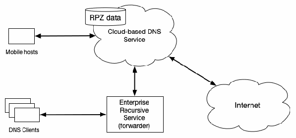
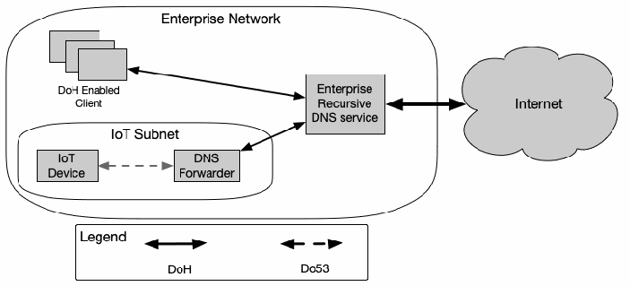
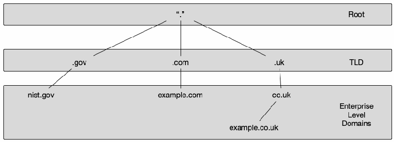
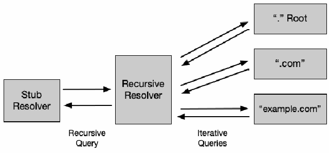

NIST Special Publication · PDF 原文抽出
Secure Domain Name System (DNS) Deployment Guide
安全なドメインネームシステム（DNS）導入ガイド
NIST SP 800-81 Rev. 3（Secure Domain Name System (DNS) Deployment Guide）の英文と日本語訳を段落ごとに並べた閲覧用ページです。DNSの役割ごとに考慮すべきセキュリティを整理し、プロトコルとインフラを保護するための導入指針を示します。 翻訳は非公式です。要件の確認にはNIST の正式版 PDFを参照してください。
PDF から抽出した原文は原本との照合待ちです。
本文は単段組。表1の文字は判読可能だが、セル単位のparagraphブロックに分割され、行・列の対応付けが維持されていない。アルゴリズム欄の原本表記は「Ed225516」。
本文は単段組。表2の文字は判読可能だが、セル単位のparagraphブロックに分割され、行・列の対応付けが維持されていない。
NIST Special Publication 800
NIST Special Publication 800
未レビュー訳NIST SP 800-81r3
NIST SP 800-81r3
未レビュー訳Secure Domain Name System (DNS)
セキュアなドメインネームシステム（DNS）
未レビュー訳Deployment Guide
導入ガイド
未レビュー訳Scott Rose Cricket Liu Ross Gibson
Scott Rose、Cricket Liu、Ross Gibson
未レビュー訳This publication is available free of charge from: https://doi.org/10.6028/NIST.SP.800-81r3
本出版物は以下より無料で入手可能です：https://doi.org/10.6028/NIST.SP.800-81r3
未レビュー訳NIST Special Publication 800
NIST Special Publication 800
未レビュー訳NIST SP 800-81r3
NIST SP 800-81r3
未レビュー訳Secure Domain Name System (DNS)
セキュアドメインネームシステム（DNS）
未レビュー訳Deployment Guide
導入ガイド
未レビュー訳Scott Rose
Scott Rose
未レビュー訳Wireless Networks Division Communications Technology Lab
無線ネットワーク部門 通信技術研究所
未レビュー訳Cricket Liu Ross Gibson Infoblox Inc.
Cricket Liu Ross Gibson Infoblox Inc.
未レビュー訳This publication is available free of charge from: https://doi.org/10.6028/NIST.SP.800-81r3
本出版物は以下から無料で入手可能です: https://doi.org/10.6028/NIST.SP.800-81r3
未レビュー訳March 2026
2026年3月
未レビュー訳
米国商務省の紋章。外周ラベルの訳: 商務省、アメリカ合衆国。
U.S. Department of Commerce Howard Lutnick, Secretary
米国商務省 ハワード・ラトニック長官
未レビュー訳National Institute of Standards and Technology
米国国立標準技術研究所（NIST）
未レビュー訳Craig Burkhardt, NIST Director and Under Secretary of Commerce for Standards and Technology (Acting)
Craig Burkhardt、NIST所長兼標準・技術担当商務次官（代行）
未レビュー訳Certain equipment, instruments, software, or materials, commercial or non-commercial, are identified in this paper in order to specify the experimental procedure adequately. Such identification does not imply recommendation or endorsement of any product or service by NIST, nor does it imply that the materials or equipment identified are necessarily the best available for the purpose.
本稿では、実験手順を適切に規定するために、商用または非商用の特定の機器、測定器、ソフトウェア、または材料を明記している。このような明記は、NISTによるいかなる製品またはサービスの推奨や支持を意味するものではなく、明記された材料や機器が必ずしもその目的に利用可能な最善のものであることを意味するものでもない。
未レビュー訳There may be references in this publication to other publications currently under development by NIST in accordance with its assigned statutory responsibilities. The information in this publication, including concepts and methodologies, may be used by federal agencies even before the completion of such companion publications. Thus, until each publication is completed, current requirements, guidelines, and procedures, where they exist, remain operative. For planning and transition purposes, federal agencies may wish to closely follow the development of these new publications by NIST.
本出版物には、NISTが指定された法的責任に従って現在作成中の他の出版物への言及が含まれる場合がある。本出版物の情報（概念や方法論を含む）は、そうした関連出版物の完成前であっても連邦機関によって使用される場合がある。したがって、各出版物が完成するまでは、現行の要件、ガイドライン、および手順が存在する場合、それらは有効に存続する。計画および移行の目的で、連邦機関はNISTによるこれらの新しい出版物の作成状況を注意深く追跡することを望む場合がある。
未レビュー訳Organizations are encouraged to review all draft publications during public comment periods and provide feedback to NIST. Many NIST cybersecurity publications, other than the ones noted above, are available at https://csrc.nist.gov/publications
各組織は、パブリックコメント期間中にすべてのドラフト出版物を確認し、NISTにフィードバックを提供することが奨励される。上記以外の多くのNISTサイバーセキュリティ関連の出版物は、https://csrc.nist.gov/publications で入手可能である。
未レビュー訳NIST Technical Series Policies Copyright, Use, and Licensing Statements NIST Technical Series Publication Identifier Syntax
NIST Technical Series Policies Copyright, Use, and Licensing Statements NIST Technical Series Publication Identifier Syntax
未レビュー訳Publication History Approved by the NIST Editorial Review Board on 2026-03-04 Supersedes NIST SP 800-81-2 (Sept. 2013) https://doi.org/10.6028/NIST.SP.800-81-2
Publication History 2026-03-04にNIST Editorial Review Boardにより承認 NIST SP 800-81-2（2013年9月）を改訂・置き換え https://doi.org/10.6028/NIST.SP.800-81-2
未レビュー訳How to Cite this NIST Technical Series Publication Rose S, Liu C, Nodurft R (2026) Secure Domain Name System (DNS) Deployment Guide. (National Institute of Standards and Technology, Gaithersburg, MD), NIST Special Publication (SP) NIST SP 800-81r3. https://doi.org/10.6028/NIST.SP.800-81r3
How to Cite this NIST Technical Series Publication Rose S, Liu C, Nodurft R (2026) Secure Domain Name System (DNS) Deployment Guide. (National Institute of Standards and Technology, Gaithersburg, MD), NIST Special Publication (SP) NIST SP 800-81r3. https://doi.org/10.6028/NIST.SP.800-81r3
未レビュー訳Author ORCID iDs Scott Rose: 0000-0002-3105-7427 Cricket Liu: 0009-0004-3351-4734 Ross Gibson: 0009-0008-4433-1705
著者ORCID iD Scott Rose: 0000-0002-3105-7427 Cricket Liu: 0009-0004-3351-4734 Ross Gibson: 0009-0008-4433-1705
未レビュー訳Contact Information SP800-81@nist.gov
連絡先情報 SP800-81@nist.gov
未レビュー訳National Institute of Standards and Technology Attn: Wireless Networks Division, Communication Technology Laboratory 100 Bureau Drive (Mail Stop 6730) Gaithersburg, MD 20899-6730
米国国立標準技術研究所（National Institute of Standards and Technology） 宛先: Wireless Networks Division, Communication Technology Laboratory 100 Bureau Drive (Mail Stop 6730) Gaithersburg, MD 20899-6730
未レビュー訳Additional Information Additional information about this publication is available at https://csrc.nist.gov/pubs/sp/800/81/r3/final, including related content, potential updates, and document history.
追加情報 本出版物に関する追加情報は、関連コンテンツ、潜在的な更新情報、文書履歴を含め、https://csrc.nist.gov/pubs/sp/800/81/r3/final で入手可能です。
未レビュー訳All comments are subject to release under the Freedom of Information Act (FOIA).
すべてのコメントは情報自由法（FOIA）に基づき公開の対象となります。
未レビュー訳Abstract
要約
未レビュー訳The Domain Name System (DNS) is an integral part of any enterprise network architecture. An attack against the DNS infrastructure of an enterprise threatens every network operation in that enterprise. DNS operations are composed of different roles that each have their own set of security considerations. This document provides DNS deployment guidelines to secure the DNS protocol and infrastructure, mitigate misuse or misconfiguration, and provide an additional layer of network security as part of a zero trust and/or defense-in-depth security risk management approach.
ドメインネームシステム（DNS）は、あらゆるエンタープライズネットワークアーキテクチャに不可欠な要素です。エンタープライズのDNSインフラストラクチャに対する攻撃は、そのエンタープライズにおけるすべてのネットワーク運用を脅かします。DNS運用は異なる役割で構成されており、それぞれに固有のセキュリティ上の考慮事項が存在します。本文書は、DNSプロトコルとインフラストラクチャを保護し、悪用や誤設定を軽減し、ゼロトラストおよび／または多層防御（defense-in-depth）セキュリティリスク管理アプローチの一環としてネットワークセキュリティの追加レイヤーを提供するためのDNS導入ガイドラインを提供します。
未レビュー訳Keywords
キーワード
未レビュー訳Authoritative name server; Domain Name System (DNS); DNS logging; DNS Security Extensions (DNSSEC); encrypted DNS; protective DNS; recursive name server; Resource Record (RR).
権威ネームサーバー、ドメインネームシステム（DNS）、DNSロギング、DNS Security Extensions（DNSSEC）、暗号化DNS、保護型DNS（protective DNS）、再帰ネームサーバー、リソースレコード（RR）。
未レビュー訳Reports on Computer Systems Technology
コンピュータシステム技術に関する報告
未レビュー訳The Information Technology Laboratory (ITL) at the National Institute of Standards and Technology (NIST) promotes the U.S. economy and public welfare by providing technical leadership for the Nation’s measurement and standards infrastructure. ITL develops tests, test methods, reference data, proof of concept implementations, and technical analyses to advance the development and productive use of information technology. ITL’s responsibilities include the development of management, administrative, technical, and physical standards and guidelines for the cost-effective security and privacy of other than national security-related information in federal information systems. The Special Publication 800-series reports on ITL’s research, guidelines, and outreach efforts in information system security, and its collaborative activities with industry, government, and academic organizations.
米国国立標準技術研究所（NIST）の情報技術研究所（ITL）は、国の測定および標準インフラストラクチャに対する技術的リーダーシップを提供することにより、米国の経済と公共の福祉を推進しています。ITLは、情報技術の開発と生産的な利用を促進するために、テスト、テスト手法、参照データ、概念実証実装、および技術分析を開発しています。ITLの責務には、連邦情報システムにおける国家安全保障関連情報以外の費用対効果の高いセキュリティおよびプライバシーのための管理的、行政的、技術的、および物理的な標準とガイドラインの開発が含まれます。Special Publication 800シリーズは、情報システムセキュリティにおけるITLの研究、ガイドライン、アウトリーチ活動、および産業界、政府、学術組織との連携活動について報告しています。
未レビュー訳Patent Disclosure Notice
特許開示に関する通知
未レビュー訳NOTICE: ITL has requested that holders of patent claims whose use may be required for compliance with the guidance or requirements of this publication disclose such patent claims to ITL. However, holders of patents are not obligated to respond to ITL calls for patents and ITL has not undertaken a patent search in order to identify which, if any, patents may apply to this publication.
通知：ITLは、本書のガイダンスまたは要件に準拠するためにその使用が必要となる可能性がある特許クレームの保有者に対し、そのような特許クレームをITLに開示するよう要請しました。ただし、特許の保有者はITLからの特許開示の求めに応じる義務を負うものではなく、ITLは本書に適用される可能性のある特許を（仮にあるとして）特定するための特許調査を実施していません。
未レビュー訳As of the date of publication and following call(s) for the identification of patent claims whose use may be required for compliance with the guidance or requirements of this publication, no such patent claims have been identified to ITL.
本書の発行日時点で、本書のガイダンスまたは要件に準拠するためにその使用が必要となる可能性がある特許クレームの特定要請を行った結果、ITLに対してそのような特許クレームは特定されていません。
未レビュー訳No representation is made or implied by ITL that licenses are not required to avoid patent infringement in the use of this publication.
本書の利用における特許侵害を回避するためにライセンスが不要である旨を、ITLが表明または暗示することはありません。
未レビュー訳Table of Contents
目次
未レビュー訳Executive Summary — 1
エグゼクティブサマリー — 1
未レビュー訳1. Introduction — 2
1. はじめに — 2
未レビュー訳1.2.1. DNS Use Cases for Operational Technology, Internet of Things Devices, and Critical
1.2.1. 運用技術（OT）、モノのインターネット（IoT）デバイス、および重要インフラにおけるDNSユースケース
未レビュー訳Infrastructure — 3
インフラストラクチャ — 3
未レビュー訳2. DNS as a Component of an Organization’s Security Strategy — 5
2. 組織のセキュリティ戦略の構成要素としてのDNS — 5
未レビュー訳2.1.1. Threat Intelligence and Telemetry — 6
2.1.1. 脅威インテリジェンスとテレメトリ — 6
未レビュー訳2.1.2. Name Resolution Filtering — 7
2.1.2. 名前解決フィルタリング — 7
未レビュー訳2.1.3. DNS for Digital Forensics and Incident Response — 8
2.1.3. デジタルフォレンジックおよびインシデント対応のためのDNS — 8
未レビュー訳2.2.1. Protecting the Integrity of DNS Services — 9
2.2.1. DNSサービスの完全性の保護 — 9
未レビュー訳2.2.2. Using Encrypted DNS and Authentication to Protect the Protocol — 9
2.2.2. 暗号化DNSおよび認証を使用したプロトコルの保護 — 9
未レビュー訳2.2.3. DNS Hygiene and Best Practices — 10
2.2.3. DNSハイジーンとベストプラクティス — 10
未レビュー訳2.3.1. Dedicated DNS Services — 11
2.3.1. 専用DNSサービス — 11
未レビュー訳2.3.2. Resiliency and High Availability of DNS Servers — 12
2.3.2. DNSサーバーの耐障害性と高可用性 — 12
未レビュー訳2.3.3. Interoperability of the Protective DNS Ecosystem — 13
2.3.3. Protective DNSエコシステムの相互運用性 — 13
未レビュー訳3. Managing Threats to Authoritative Services — 14
3. 権威サービスに対する脅威の管理 — 14
未レビュー訳3.1.1. Restricting Zone Transfer Transaction Entities — 16
3.1.1. ゾーン転送トランザクションエンティティの制限 — 16
未レビュー訳3.2.1. Lame Delegations — 16
3.2.1. 不適切な委任（Lame Delegation） — 16
未レビュー訳3.2.2. Zone Drift and Zone Thrash — 16
3.2.2. ゾーンのドリフトとゾーントラッシュ — 16
未レビュー訳3.3.1. Dynamic Update Misuse — 17
3.3.1. 動的更新の不正使用 — 17
未レビュー訳3.3.2. Guidance on Securing Dynamic Updates — 17
3.3.2. 動的更新のセキュリティ確保に関するガイダンス — 17
未レビュー訳3.4.1. DNS NOTIFY Misuse Threats — 18
3.4.1. DNS NOTIFY不正使用の脅威 — 18
未レビュー訳3.4.2. DNS NOTIFY Protection — 18
3.4.2. DNS NOTIFYの保護 — 18
未レビュー訳3.5.1. Resource Record Information — 19
3.5.1. リソースレコード情報 — 19
未レビュー訳3.6.1. Dangling CNAME Exploitation — 19
3.6.1. 宙づりCNAME（Dangling CNAME）の悪用 — 19
未レビュー訳3.6.2. Lame Delegation Exploitation — 19
3.6.2. レーム委託（Lame Delegation）の悪用 — 19
未レビュー訳3.6.3. Look-Alike Domain Exploitation — 20
3.6.3. ルックアライクドメイン（類似ドメイン）の悪用 — 20
未レビュー訳3.7.1. Resource Record TTL Value Recommendations — 20
3.7.1. リソースレコードのTTL値に関する推奨事項 — 20
未レビュー訳3.8.1. DNSSEC Key Considerations — 22
3.8.1. DNSSEC鍵に関する考慮事項 — 22
未レビュー訳3.8.2. Using RRSIG Validity Periods to Minimize Key Compromise — 23
3.8.2. 鍵侵害を最小限に抑えるためのRRSIG有効期間の使用 — 23
未レビュー訳3.8.3. Hashed Authenticated Denial of Existence — 23
3.8.3. ハッシュ化された認証済みの存在否定 — 23
未レビュー訳3.8.4. Compact Denial-of-Existence Responses as an Alternative — 24
3.8.4. 代替手段としてのコンパクトな存在否定応答 — 24
未レビュー訳3.8.5. DNSSEC Algorithm Migration — 24
3.8.5. DNSSECアルゴリズムの移行 — 24
未レビュー訳3.8.6. DNSSEC Signing Internal Zones — 25
3.8.6. 内部ゾーンへのDNSSEC署名 — 25
未レビュー訳3.8.7. Use of Authoritative Time Source — 25
3.8.7. 権威ある時刻ソースの使用 — 25
未レビュー訳4. Managing Threats to Recursive/Forwarding Services — 27
4. 再帰／転送サービスに対する脅威の管理 — 27
未レビュー訳4.2.1. Encrypted DNS — 28
4.2.1. 暗号化DNS — 28
未レビュー訳4.2.1.1. Encrypted DNS Guidance and Recommendations — 29
4.2.1.1. 暗号化DNSの指針と推奨事項 — 29
未レビュー訳4.2.1.2. Considerations for Using Encrypted DNS — 30
4.2.1.2. 暗号化DNSの使用に関する考慮事項 — 30
未レビュー訳4.2.1.3. Cryptographic Guidance — 30
4.2.1.3. 暗号技術に関する指針 — 30
未レビュー訳4.2.2. Restricting the Use of DNS With Public Providers — 30
4.2.2. パブリックプロバイダーによるDNSの使用を制限する — 30
未レビュー訳4.2.3. QNAME Minimization — 31
4.2.3. QNAMEの最小化 — 31
未レビュー訳4.2.4. Detecting and Mitigating Data Exfiltration via DNS — 31
4.2.4. DNSを介したデータ流出の検出と緩和 — 31
未レビュー訳4.2.5. Enabling DNSSEC Validation — 32
4.2.5. DNSSEC検証の有効化 — 32
未レビュー訳4.2.6. Maintaining DNSSEC Trust Anchors — 32
4.2.6. DNSSECトラストアンカーの維持 — 32
未レビュー訳4.3.1. Configuring an Authoritative Source for Time — 33
4.3.1. 権威ある時刻ソースの設定 — 33
未レビュー訳5. Managing Threats to Stub Resolvers — 34
5. スタブリゾルバーに対する脅威の管理 — 34
未レビュー訳References — 36
参考文献 — 36
未レビュー訳Appendix A. DNS Protocol Tutorial — 39
付録A. DNSプロトコルのチュートリアル — 39
未レビュー訳Appendix B. Glossary — 43
付録B. 用語集 — 43
未レビュー訳List of Tables
表一覧
未レビュー訳Table 1. DNSSEC key parameters based on algorithm — 22
表1. アルゴリズムに基づくDNSSEC鍵パラメーター — 22
未レビュー訳Table 2. Trust anchor selection — 32
表2. トラストアンカーの選択 — 32
未レビュー訳List of Figures
図一覧
未レビュー訳Fig. 1. Enterprise using cloud-based protective DNS with a local forwarder — 7
図1. ローカルフォワーダーを備えたクラウドベースの保護DNSを利用するエンタープライズ — 7
未レビュー訳Fig. 2. Mixed use of Legacy DNS over UDP port 53 (Do53) and DoH — 29
図2. UDPポート53上の従来型DNS（Do53）とDoHの併用 — 29
未レビュー訳Fig. 3. DNS tree — 40
図3. DNSツリー — 40
未レビュー訳Fig. 4. DNS resolution — 41
図4. DNS名前解決 — 41
未レビュー訳Preface
はじめに
未レビュー訳This revision of Special Publication (SP) 800-81 includes significant changes to the structure, format, and general objective of the document. Since the previous version was published, the ways in which DNS is used and deployed have changed significantly, and this revision provides an updated set of discussions and recommendations for securing modern DNS deployments.
この特別刊行物（SP）800-81改訂版では、文書の構成、形式、全般的な目的を大幅に変更しました。前版の発行以降、DNSの利用方法と導入方法は大きく変化しており、本改訂版では現代のDNS導入環境を保護するための議論と推奨事項を更新しています。
未レビュー訳Acknowledgments
謝辞
未レビュー訳The authors would like to thank Stephen Banghart for organizing the effort to produce this document. The authors would also like to thank Frank Hecker, Philip Parker, Jim Mozley, Ken Shade, and Paul Adair for their input and discussion of the contents of this document.
著者は、本書の作成作業を取りまとめたStephen Banghart氏に感謝します。また、本書の内容に関する意見や議論を寄せたFrank Hecker氏、Philip Parker氏、Jim Mozley氏、Ken Shade氏、Paul Adair氏にも感謝します。
未レビュー訳Executive Summary
概要
未レビュー訳The Domain Name System (DNS) [1][2] is a standardized way of mapping human-readable domain names (e.g., example.com) to machine-readable information, such as IP addresses (e.g., 192.0.2.1). It is commonly deployed within an organization’s networks to facilitate the internal functions of those intranets. DNS is also deployed and maintained across critical internet infrastructure at a high level to enable the core functionalities of the internet on almost every network at every scale. Its centralized position enables it to act as a foundational layer of network security in zero trust and defense-in-depth security risk management approaches. Such DNS services are often referred to as protective DNS1 deployments and are a key consideration in securing organizational networks. DNS infrastructure has become more than a service; it is also a security control that can be an important part of an enterprise security architecture.
ドメインネームシステム（DNS）[1][2]は、人が読めるドメイン名（例: example.com）を、IPアドレス（例: 192.0.2.1）のような機械可読情報に対応付ける標準的な仕組みです。DNSは、組織内ネットワークの機能を支えるため、組織のネットワーク内で一般的に導入されています。また、ほぼあらゆる規模のネットワークでインターネットの中核機能を実現するため、重要なインターネット基盤全体でも広く導入・運用されています。DNSはネットワーク内の中心的な位置にあるため、ゼロトラストや多層防御に基づくセキュリティリスク管理において、ネットワークセキュリティの基礎層として機能します。このようなDNSサービスは保護DNS¹の導入と呼ばれることが多く、組織ネットワークの保護における重要な考慮事項です。DNS基盤は単なるサービスにとどまらず、エンタープライズセキュリティアーキテクチャの重要な要素となり得るセキュリティ管理策でもあります。
未レビュー訳This revision of Special Publication (SP) 800-81 acknowledges these changes in the role of DNS and provides modern guidelines on DNS deployments with the following high-level recommendations for network and security owners:
本SP 800-81改訂版は、DNSの役割の変化を踏まえ、ネットワークおよびセキュリティの責任者向けに、DNS導入に関する最新の指針と、次の上位レベルの推奨事項を示します。
未レビュー訳•Employ protective DNS wherever technically feasible to provide additional network-wide security capabilities that include:
•技術的に実現可能な範囲で保護DNSを導入し、ネットワーク全体に追加のセキュリティ機能を提供すること。具体的には次の機能があります。
未レビュー訳Blocking harmful or malicious traffic in real time o Filtering out categories of traffic that do not conform to the organization’s o policies
有害または悪意のあるトラフィックをリアルタイムでブロックすること。組織のポリシーに準拠しない種類のトラフィックをフィルタリングすること。
未レビュー訳Generating real-time and historical DNS query and response data to facilitate o digital forensics and incident response
デジタルフォレンジックとインシデント対応を支援するため、DNSクエリおよび応答のリアルタイムデータと履歴データを生成すること。
未レビュー訳Integrating with the wider security ecosystem as part of a defense-in-depth or o zero trust approach
多層防御またはゼロトラストのアプローチの一環として、より広範なセキュリティエコシステムと統合すること。
未レビュー訳Facilitating the organization’s responsibility to comply with regulatory or o contractual requirements for blocking traffic to disallowed sites (e.g., copyright violations, legal restrictions)
著作権侵害や法的制限などにより許可されないサイトへのトラフィックをブロックするという、規制上または契約上の義務を組織が果たせるようにすること。
未レビュー訳•Encrypt internal and external DNS traffic wherever feasible
•実現可能な範囲で、内部および外部のDNSトラフィックを暗号化すること。
未レビュー訳•Deploy DNS Security Extensions (DNSSEC) to protect the integrity of DNS data
•DNSSEC（DNS Security Extensions）を導入し、DNSデータの完全性を保護すること。
未レビュー訳•Deploy dedicated DNS servers to reduce attack surfaces
•攻撃対象領域を縮小するため、専用のDNSサーバーを導入すること。
未レビュー訳•Follow all technical guidance on ensuring that DNS deployments and the DNS protocol are as secure and resilient as possible
•DNS導入とDNSプロトコルを可能な限り安全でレジリエントな状態にするための技術的指針にすべて従うこと。
未レビュー訳1. Introduction
1. はじめに
未レビュー訳This document provides Domain Name System (DNS) deployment guidelines to secure the DNS protocol and servers, mitigate the impacts of misuse and compromise, and utilize DNS as a foundational layer of security control across the organization. This introduction briefly discusses relevant contexts for DNS and examines the changing threat landscape that has warranted this updated approach to DNS deployment best practices.
本書は、DNSプロトコルとサーバーを保護し、誤用や侵害の影響を軽減するとともに、組織全体で基礎的なセキュリティ管理層としてDNSを活用するための導入指針を示します。この序章では、DNSに関係する背景を簡潔に説明し、DNS導入のベストプラクティスに対する今回の更新を必要とした脅威環境の変化を検討します。
未レビュー訳1.1. Domain Name Systems
1.1. ドメインネームシステム
未レビュー訳From the perspective of a user, each node or resource on the internet is identified by a unique domain name. From the perspective of networking components, however, the unique resource identifier is an Internet Protocol (i.e., IPv4 or IPv6) address. Accessing internet resources by domain names rather than IP addresses requires a system for translation, which is the primary task of the DNS. The process of translating domain names into IP addresses is called name resolution. For an in-depth overview of how DNS works and how its constituent components are arranged, see Appendix A.
利用者の観点では、インターネット上の各ノードやリソースは一意のドメイン名で識別されます。一方、ネットワーク機器の観点では、一意のリソース識別子はインターネットプロトコル（IPv4またはIPv6）のアドレスです。IPアドレスではなくドメイン名でインターネットリソースにアクセスするには、名前を変換する仕組みが必要であり、それがDNSの主要な役割です。ドメイン名をIPアドレスに変換する処理を名前解決と呼びます。DNSの仕組みと構成要素の配置を詳しく知るには、付録Aを参照してください。
未レビュー訳When DNS was first developed and deployed, it focused on providing name resolution for resources on the internet. As more sophisticated internet and intranet infrastructure have developed, the scope of DNS has expanded to cover domain name translations inside of private networks. Today, DNS deployments must be able to perform name resolution for internet addresses and private network addresses at the same time to allow endpoints to simultaneously and seamlessly access both internal and internet resources. Well-configured DNS deployments can protect the digital identity and online fingerprint of a modern organization. As domain names have become synonymous with a given entity, it is important for these names to securely resolve to the correct addresses.
DNSが最初に開発・導入されたときは、インターネット上のリソースの名前解決を提供することに重点が置かれていました。より高度なインターネットおよびイントラネット基盤の発展に伴い、DNSの対象範囲は拡大し、プライベートネットワーク内のドメイン名変換も扱うようになりました。現在のDNS導入環境では、エンドポイントが内部リソースとインターネット上のリソースの双方に同時かつシームレスにアクセスできるよう、インターネットアドレスとプライベートネットワークアドレスの名前解決を同時に実行する必要があります。適切に構成されたDNSは、現代の組織のデジタルアイデンティティとオンライン上の指紋情報を保護できます。ドメイン名が特定の主体と同一視されるようになったため、それらの名前が安全に正しいアドレスへ解決されることが重要です。
未レビュー訳In a modern organization’s network deployments, DNS is a core and critical part of internet operations. Almost all requests and connections rely on DNS servers, so it is crucial that these servers be configured correctly and managed securely. If a DNS namespace or server is compromised by malicious actors, it can become a threat vector for further security intrusions. The central role of DNS in modern internet infrastructure also allows it to be used as a tool for securing and protecting the rest of the organization. DNS servers can provide significant insight into the connections and dataflows of endpoints and can often prevent security incidents earlier than other systems. As such, this document provides guidelines on the use of DNS as a foundational layer of cyber defense in an organization.
現代の組織ネットワークでは、DNSはインターネット運用の中核をなす重要な要素です。ほぼすべての要求と接続がDNSサーバーに依存するため、サーバーを正しく構成し、安全に管理することが不可欠です。DNS名前空間またはサーバーが悪意ある主体に侵害されると、その後のセキュリティ侵入の脅威経路になり得ます。現代のインターネット基盤でDNSが中心的な役割を担うことは、組織の他の部分を保護する手段として利用できることも意味します。DNSサーバーは、エンドポイントの接続やデータフローを把握するうえで有用な情報を提供でき、他のシステムより早い段階でセキュリティインシデントを防止できることもあります。このため、本書では、組織のサイバー防御の基礎層としてDNSを利用するための指針を示します。
未レビュー訳1.2. Impact of DNS on Cyber Resiliency, Defense-in-Depth, and Zero Trust
1.2. サイバーレジリエンス、多層防御、ゼロトラストに対するDNSの影響
未レビュー訳DNS infrastructure is mission-critical. If it were to fail, entire networks and their applications would become unavailable or simply stop working. As a critical element in an organization’s digital resiliency, DNS should be regularly assessed and/or reevaluated.
DNS基盤はミッションクリティカルです。DNSが停止すれば、ネットワーク全体とそのアプリケーションが利用できなくなるか、正常に動作しなくなります。組織のデジタルレジリエンスを支える重要な要素として、DNSは定期的に評価または再評価する必要があります。
未レビュー訳Recent developments in network security best practices have driven an increased focus on defense-in-depth, which refers to the idea that no defensive measure is infallible and that the best defense comes from multiple layers of protection. This style of cyber defense yields a more flexible, scalable, and resilient system that is more resistant to compromise. It also aligns more closely with zero trust principles, which assume that no element, node, or service can be implicitly trusted [3]. However, DNS often remains an overlooked element within zero trust strategies, creating a significant gap when it is implicitly trusted. Organizations should verify their information sources by leveraging DNS to enforce security policies, prevent end users and systems from accessing malicious or unauthorized resources, and provide asset visibility for digital forensics and incident response (DFIR). This marks a shift in the role of DNS from a purely operational one to a wide-scale tool to improve internet security and bolster network resilience, but it requires additional considerations to utilize securely.
近年のネットワークセキュリティのベストプラクティスでは、多層防御への注目が高まっています。多層防御とは、どの防御策も絶対ではなく、複数の保護層を組み合わせることが最善の防御になるという考え方です。このサイバー防御方式により、侵害への耐性が高く、柔軟で拡張性とレジリエンスに優れたシステムが実現します。また、要素、ノード、サービスを暗黙に信頼できるものはないとするゼロトラストの原則にも、よりよく合致します[3]。一方、ゼロトラスト戦略ではDNSが見落とされがちであり、暗黙に信頼されたままになると重大な空白が生じます。組織はDNSを活用してセキュリティポリシーを適用し、エンドユーザーやシステムが悪意のある、または認可されていないリソースへアクセスするのを防ぎ、デジタルフォレンジックとインシデント対応（DFIR）に必要な資産の可視性を確保することで、情報源を検証する必要があります。これによりDNSの役割は、運用だけを担うものから、インターネットセキュリティを広範に改善し、ネットワークのレジリエンスを高める手段へと変わりますが、安全に活用するには追加の考慮が必要です。
未レビュー訳Zero trust presents a shift from a location-centric model to one that focuses on identity, context, and data with fine-grained security controls between users, systems, applications, data, and assets that change over time. As a DNS resolution may be open to end points that querying public domain names, organizations should secure DNS to prevent it from being used as a route to bypass zero trust network controls. This could involve the implementation of protective DNS services (see Sec. 2.1) and/or specific DNS resolver configurations for certain classes of end points. The DNS is also a source of enrichment data that can be used in access decisions or improvements to security posture. DNS query logs can be analyzed as part of an organization’s threat detection program. An organization’s DNS service serves as both an information source for policy decision points or policy creation and a policy enforcement point.
ゼロトラストは、場所を中心とするモデルから、時間とともに変化するユーザー、システム、アプリケーション、データ、資産の間にきめ細かなセキュリティ管理策を設け、アイデンティティ、コンテキスト、データに重点を置くモデルへの移行を意味します。DNS名前解決は、公開ドメイン名を照会するエンドポイントに開かれることがあるため、組織はDNSがゼロトラストのネットワーク管理策を迂回する経路として使われないよう保護する必要があります。これには、保護DNSサービス（2.1節参照）の導入や、特定の種類のエンドポイントに対するDNSリゾルバーの個別設定が含まれます。DNSは、アクセス判断やセキュリティ態勢の改善に使える付加情報の情報源でもあります。DNSクエリログは、組織の脅威検知プログラムの一部として分析できます。組織のDNSサービスは、ポリシー決定ポイントやポリシー策定のための情報源であると同時に、ポリシー適用ポイントとしても機能します。
未レビュー訳1.2.1. DNS Use Cases for Operational Technology, Internet of Things Devices, and Critical
1.2.1. 運用技術（OT）、IoTデバイス、および重要
未レビュー訳Infrastructure
インフラにおけるDNSのユースケース
未レビュー訳As a ubiquitous part of internet infrastructure, DNS implementations are present in contexts where more advanced security paradigms may be difficult to utilize, particularly the operational technology present in manufacturing, critical infrastructure, and Internet of Things (IoT) deployments. Protecting these devices can often present serious difficulties due to low computing power, physical location or accessibility, bespoke system designs, aging legacy software, and extremely high uptime requirements, among other challenges.
インターネット基盤の至る所に存在するDNSは、より高度なセキュリティ方式の利用が難しい環境にも導入されています。特に、製造業や重要インフラにおける運用技術（OT）や、モノのインターネット（IoT）の導入環境が該当します。計算能力の低さ、設置場所やアクセス性、独自設計のシステム、老朽化したレガシーソフトウェア、非常に高い稼働率の要求などにより、こうした機器の保護は深刻な課題となることがあります。
未レビュー訳DNS services can provide an additional layer of security and monitoring without negative impacts on operational devices that operate using an IP network. This “overlay” of risk mitigation on top of other existing strategies is a step toward a full defense-in-depth strategy, which is the preferred approach for critical infrastructure and other important high-uptime digitally controlled services.
DNSサービスは、IPネットワーク上で動作する運用機器に悪影響を与えずに、追加のセキュリティ層と監視機能を提供できます。既存の戦略の上にリスク緩和策を「オーバーレイ」として重ねることは、重要インフラや高い稼働率が求められるその他のデジタル制御サービスで望ましい、多層防御の完成に向けた一歩です。
未レビュー訳Options to support the security of operational technology (OT) and IoT devices through the DNS service can include:
DNSサービスを通じて運用技術（OT）機器とIoT機器のセキュリティを支援する方法には、次のものがあります。
未レビュー訳•Taking advantage of the capabilities of protective DNS (see Sec. 2.1)
•保護DNSの機能を活用する（2.1節参照）。
未レビュー訳•Implementing highly restricted DNS firewalls so that communication from OT/IoT devices is restricted to the systems needed for their secure operation
•OT/IoT機器からの通信を安全な運用に必要なシステムに限定する、高度に制限されたDNSファイアウォールを導入する。
未レビュー訳1.3. Using This Guide
1.3. 本ガイドの使い方
未レビュー訳This document provides deployment guidelines for organizations and administrators to secure DNS protocols, infrastructures, and services (i.e., protective DNS). It is organized as follows:
本書は、組織や管理者がDNSプロトコル、DNS基盤、およびサービス（すなわち保護DNS）を保護するための導入指針を示します。構成は次のとおりです。
未レビュー訳•Section 2 provides recommendations for using DNS as a component of an organization’s security architecture.
•第2節では、組織のセキュリティアーキテクチャの一要素としてDNSを利用するための推奨事項を示します。
未レビュー訳•Section 3 discusses the threats to and recommendations for securing authoritative services.
•第3節では、権威DNSサービスに対する脅威と、そのサービスを保護するための推奨事項を説明します。
未レビュー訳•Section 4 discusses the threats to and recommendations for securing recursive services and stub resolvers (Section 5).
•第4節では、再帰サービスを保護するための脅威と推奨事項を説明し、第5節ではスタブリゾルバーを扱います。
未レビュー訳1.4. Audience
1.4. 対象読者
未レビュー訳This document is intended for two general groups:
本書は、次の2つの一般的なグループを対象としています。
未レビュー訳1.Cybersecurity executives, decision-makers, and organizational policy-setters
1.サイバーセキュリティの幹部、意思決定者、組織のポリシー策定者
未レビュー訳2.Operational networking and cybersecurity teams
2.ネットワーク運用チームおよびサイバーセキュリティチーム
未レビュー訳While there may be overlap between these two roles, this document’s sections are tailored to the distinct duties of each. Sections 1 and 2 are intended for the first group and provide high-level context and impact analysis to inform decision-making. The remaining sections provide technical guidelines to be implemented on the network.
これらの役割は一部重複する場合がありますが、本書の各節はそれぞれの異なる職務に合わせています。第1節と第2節は前者を対象としており、意思決定に役立つ上位レベルの背景と影響分析を示します。残りの節では、ネットワークに実装する技術的な指針を示します。
未レビュー訳1.5. Objective
1.5. 目的
未レビュー訳This document provides guidelines for securing the DNS infrastructure (both data and protocol use) used to support enterprise operations and describes its role in an organizaton’s overall security posture. This includes the deployment of protective DNS that — in addition to the core name resolution functions — provides proactive security functions, such as preventing communication pathways to malicious endpoints. This document also provides guidelines on protecting the integrity of DNS data using DNSSEC and protecting DNS query/response transactions using DNS over a secure transport layer.
本書は、エンタープライズ運用を支えるDNS基盤（データとプロトコルの利用の双方）を保護するための指針を示し、組織全体のセキュリティ態勢におけるDNSの役割を説明します。これには、基本的な名前解決機能に加えて、悪意あるエンドポイントへの通信経路を遮断するなどの予防的なセキュリティ機能を提供する保護DNSの導入が含まれます。また、DNSSECによるDNSデータの完全性保護と、安全なトランスポート層を用いたDNSクエリ／応答のやり取りの保護についても指針を示します。
未レビュー訳2. DNS as a Component of an Organization’s Security Strategy
2. 組織のセキュリティ戦略におけるDNSの構成要素としての役割
未レビュー訳DNS is critical to network connections, and its universal deployment makes it an effective security mechanism. The DNS platform is already in use by all types of clients on the network, including on-premises, in the cloud, and on IoT devices. Thus, any protection provided by DNS infrastructure benefits all clients that use that infrastructure for name resolution, regardless of the type of device.
DNSはネットワーク接続に不可欠であり、広く導入されているため効果的なセキュリティ機構となります。DNS基盤は、オンプレミス、クラウド、IoTデバイスなど、ネットワーク上のあらゆる種類のクライアントですでに利用されています。したがって、DNS基盤が提供する保護の恩恵は、デバイスの種類を問わず、その基盤で名前解決を行うすべてのクライアントに及びます。
未レビュー訳The original intent of DNS was to distribute information (e.g., host and IP address mappings, mail routing information), so it has not traditionally been viewed as a tool for securing network communications. However, because DNS enables nearly all network communications, it is an effective tool for monitoring and managing those communications. In a typical network communication pattern, the first action performed is to use DNS to resolve the domain name of the target system to an IP address. The communication is unable to begin until that resolution is completed.
DNSの当初の目的は、ホスト名とIPアドレスの対応関係やメールのルーティング情報などの情報を分散して提供することでした。そのため、従来DNSはネットワーク通信を保護する手段とは見なされていませんでした。しかし、DNSはほぼすべてのネットワーク通信を可能にするため、その通信を監視・管理する有効な手段です。一般的なネットワーク通信では、最初にDNSを使って宛先システムのドメイン名をIPアドレスに解決します。この名前解決が完了するまで通信を開始できません。
未レビュー訳According to the Cybersecurity and Infrastructure Security Agency (CISA), “DNS infrastructure is a common threat vector for attack campaigns” [4]. Even when DNS traffic is encrypted, the system still needs to retain access to the internet. This allows malicious actors to set up authoritative servers for command and control (C2) and data exfiltration, where encryption can work to their advantage. Therefore, it is crucial to implement strict controls and auditing on an organization’s secure resolvers to ensure that only resolvers with the appropriate policy configuration are permitted to communicate with the internet. Applying security in DNS infrastructure gives administrators the opportunity to identify and review potentially malicious communications before they begin and automatically prevent them from happening.
米国サイバーセキュリティ・インフラストラクチャ安全保障庁（CISA）によると、「DNS基盤は攻撃キャンペーンでよく使われる脅威経路」です[4]。DNSトラフィックを暗号化しても、システムは引き続きインターネットへのアクセスを必要とします。そのため、悪意ある主体がコマンド＆コントロール（C2）やデータ流出に使う権威DNSサーバーを設置でき、暗号化が攻撃者に有利に働くこともあります。したがって、適切なポリシー設定を備えたリゾルバーだけがインターネットと通信できるよう、組織のセキュアリゾルバーに厳格な管理策と監査を適用することが重要です。DNS基盤にセキュリティを適用すれば、管理者は通信開始前に悪意が疑われる通信を特定・確認し、自動的に阻止できます。
未レビュー訳Two other advantages of using DNS are scale and efficiency. DNS has evolved over decades to support massive networks like the internet, so DNS security tools can handle a tremendous number of clients simultaneously. Name servers can load a large volume of authoritative and threat data. Taking protective action with DNS is also efficient. Because DNS queries precede network communication streams, enforcing policy with DNS prevents malicious or suspicious communication streams from starting. Protective DNS decreases unauthorized traffic on a given network, which benefits the entire network infrastructure by alleviating the burden on other security elements, such as infrastructure components (e.g., firewalls) and human resources (e.g., the Security Operations Center [SOC]).
DNSを利用するもう2つの利点は、規模への対応力と効率性です。DNSは数十年にわたってインターネットのような大規模ネットワークを支えるよう発展してきたため、DNSセキュリティツールは非常に多くのクライアントを同時に処理できます。ネームサーバーは、大量の権威データや脅威情報を読み込めます。DNSによる保護措置も効率的です。DNSクエリはネットワーク通信に先行するため、DNSでポリシーを適用すれば、悪意ある通信や不審な通信が始まる前に阻止できます。保護DNSはネットワーク上の不正なトラフィックを減らし、ファイアウォールなどの基盤コンポーネントやセキュリティ運用センター（SOC）などの人員を含む、他のセキュリティ要素の負担を軽減して、ネットワーク基盤全体に利益をもたらします。
未レビュー訳2.1. Protective DNS
2.1. 保護DNS
未レビュー訳Protective DNS2 is a DNS service that is enhanced with security capabilities to analyze DNS queries and responses and take action to mitigate threats. Protective DNS blocks access to malicious websites and prevents the delivery of malware, ransomware, phishing, and other attacks that attempt to distribute spyware and viruses. Protective DNS can be provided as a service from a vendor, deployed on internal DNS infrastructure, or a combination of the two.
保護DNS²とは、DNSクエリと応答を分析し、脅威を緩和する措置を講じるセキュリティ機能を強化したDNSサービスです。保護DNSは、悪意あるWebサイトへのアクセスを遮断し、スパイウェアやウイルスを配布しようとするマルウェア、ランサムウェア、フィッシングなどの攻撃の配信を防ぎます。保護DNSは、ベンダーのサービスとして提供することも、内部DNS基盤に導入することも、両者を組み合わせて提供することもできます。
未レビュー訳There are potential benefits to using a combination of externally provided protective DNS with internally deployed protective DNS. For example, in most cases, cloud-provided services can leverage a larger amount of threat intelligence and provide more real-time analysis than an individual on-premises DNS server due to the cloud’s greater resources. However, if the cloud-hosted service were unavailable for some reason, an organization that is configured to fail open (i.e., fall back to normal recursive resolution) would want on-premises protective DNS capabilities available to ensure protection. While this approach may not be applicable in all cases, this combined hybrid scheme should be utilized where feasible.
外部で提供される保護DNSと内部に導入する保護DNSを組み合わせると、利点が得られる場合があります。例えば、クラウドのリソースの方が豊富であるため、多くの場合、クラウドサービスは個々のオンプレミスDNSサーバーより多くの脅威インテリジェンスを活用し、よりリアルタイムな分析を提供できます。一方、何らかの理由でクラウドサービスが利用できなくなった場合、フェイルオープン（通常の再帰名前解決にフォールバックすること）する設定の組織は、保護を確実にするため、オンプレミスの保護DNS機能を利用できる状態にしておく必要があります。すべてのケースに適用できる方法ではありませんが、可能な場合にはこのハイブリッド構成を採用することが望まれます。
未レビュー訳The goals of deploying protective DNS include:
保護DNSを導入する目的には、次のものがあります。
未レビュー訳•Using the DNS service as a policy enforcement point (PEP) by blocking harmful traffic in real time at the point of domain name resolution, typically before malicious activity starts and/or by preventing the misuse of the DNS protocol for nefarious purposes (e.g., data exfiltration over DNS)
•名前解決の時点で有害なトラフィックをリアルタイムにブロックし、通常は悪意ある活動が始まる前に阻止すること、またはDNSプロトコルをデータ流出などの悪意ある目的に悪用されるのを防ぐことにより、DNSサービスをポリシー適用ポイント（PEP）として利用する。
未レビュー訳•Blocking categories of traffic with DNS by categorizing domain names that do not conform to an organization’s policies or matching against known bad actor lists
•組織のポリシーに準拠しないドメイン名を分類したり、既知の悪意ある主体のリストと照合したりして、DNSで特定カテゴリのトラフィックをブロックする。
未レビュー訳•Using the DNS service as an information source to improve a zero trust security posture by delivering visibility into real-time and historical DNS query and response data to facilitate DFIR
•リアルタイムおよび過去のDNSクエリ／応答データを可視化してDFIRを支援することにより、ゼロトラストのセキュリティ態勢を改善する情報源としてDNSサービスを利用する。
未レビュー訳•Integrating with the wider security ecosystem as part of defense-in-depth, such as correlating an organization’s data on assets (e.g., devices, cloud workloads) and users with the clients that sent queries that were blocked by protective DNS
•組織の資産（デバイス、クラウドワークロードなど）やユーザーに関するデータと、保護DNSがブロックしたクエリを送信したクライアントを関連付けるなどして、多層防御の一環としてより広範なセキュリティエコシステムと統合する。
未レビュー訳•Facilitating an organization’s responsibility to comply with regulatory or contractual requirements for blocking traffic to disallowed sites (e.g., copyright violations, legal restrictions)
•著作権侵害や法的制限などにより許可されないサイトへのトラフィックをブロックするという、組織の規制上または契約上の義務の履行を支援する。
未レビュー訳2.1.1. Threat Intelligence and Telemetry
2.1.1. 脅威インテリジェンスとテレメトリ
未レビュー訳As new networking technologies emerge and attack surfaces evolve, DNS remains a constant security control point for protecting users in all environments (e.g., organizations, mobile endpoints) and monitoring and disrupting malicious communications. Unlike other mechanisms in the security stack, it is not limited to any single type of threat and can often stop complex, multi-stage attacks before they progress. DNS can also protect users and organizations from scams or credential theft via phishing, ransomware, and data exfiltration.
新たなネットワーク技術の登場や攻撃対象領域の変化にかかわらず、DNSは組織やモバイルエンドポイントなど、あらゆる環境のユーザーを保護し、悪意ある通信を監視・妨害するための恒常的なセキュリティ管理ポイントです。セキュリティスタック内の他の仕組みと異なり、DNSは特定の脅威だけに限定されず、複雑な多段階攻撃が進行する前に阻止できる場合もあります。また、フィッシング、ランサムウェア、データ流出を通じた詐欺や認証情報の窃取からユーザーと組織を保護できます。
未レビュー訳This approach requires integrating threat intelligence into the DNS resolver. Threat intelligence is most effectively leveraged in a DNS infrastructure in an actionable manner via DNS firewalls. DNS firewalls can be implemented in various ways from static or dynamic blocklists to response policy zones (RPZs) and can be seamlessly integrated into the DNS resolution chain via different architectures. Therefore, the consumption and deployment of threat intelligence services should be considered as part of any protective DNS deployment. There are additional ways to use DNS infrastructure to distribute threat intelligence data, such as DNS blocklists (DNSBLs) or reputation blocklists (RBLs), which use DNS to publish threat information that clients can use to make policy decisions. The biggest difference is that DNSBLs/RBLs implement the enforcement mechanism on the clients (e.g., in email server software), whereas RPZs implement it within the DNS infrastructure, meaning that protection can be provided regardless of the features at the client.
この方法を実現するには、脅威インテリジェンスをDNSリゾルバーに統合する必要があります。DNS基盤で脅威インテリジェンスを実効性のある形で活用するには、DNSファイアウォールが最も効果的です。DNSファイアウォールは、静的または動的なブロックリスト、レスポンスポリシーゾーン（RPZ）など、さまざまな方法で実装でき、異なるアーキテクチャを通じてDNS名前解決チェーンにシームレスに統合できます。したがって、脅威インテリジェンスサービスの利用と導入は、あらゆる保護DNS導入の一部として検討する必要があります。DNSブロックリスト（DNSBL）やレピュテーションブロックリスト（RBL）のように、DNS基盤を使って脅威インテリジェンスを配布する方法もあります。これらは、クライアントがポリシー判断に使う脅威情報をDNSで公開します。DNSBL/RBLではメールサーバーソフトウェアなどクライアント側で適用を行うのに対し、RPZではDNS基盤内で適用する点が大きく異なります。そのためRPZでは、クライアントの機能にかかわらず保護を提供できます。
未レビュー訳2.1.2. Name Resolution Filtering
2.1.2. 名前解決のフィルタリング
未レビュー訳Name resolution filtering refers to DNS infrastructure that applies security-related policies to DNS resolution. For example, a protective DNS implementation might refuse to resolve a set of domain names that are known to be used in phishing campaigns or that identify malware command-and-control infrastructure. Instead of resolving these domain names to IP addresses or other types of data, protective DNS generally returns some other form of DNS response to indicate that the domain name does not exist, such as NXDOMAIN (i.e., “non-existent domain”). Protective DNS implementations can also log queries for domain names that trigger policy to indicate potential malware infection or other malicious activity.
名前解決フィルタリングとは、DNS名前解決にセキュリティポリシーを適用するDNS基盤を指します。例えば保護DNSは、フィッシング攻撃やマルウェアのコマンド＆コントロール基盤に使われていると判明したドメイン名の解決を拒否できます。こうしたドメイン名をIPアドレスなどのデータに解決する代わりに、保護DNSは通常、ドメイン名が存在しないことを示すNXDOMAIN（「存在しないドメイン」）などの応答を返します。また、ポリシーに抵触したドメイン名へのクエリを記録し、マルウェア感染やその他の悪意ある活動の可能性を示すこともできます。
未レビュー訳Protective DNS is generally implemented by using DNS firewalls or RPZs configured on an on-premises DNS service; a cloud-based, secure recursive DNS service; or some combination of the two. There are far more ways to approach deploying protective DNS than can be addressed in this document, especially when hybrid deployments are considered. When considering the deployment of RPZs on-premises, there are two typical models: closest to the client or closest to the internet. Each model has its own advantages and drawbacks. Putting the RPZ systems closest to the internet often allows for the most concentrated deployment, which may control costs but may also sacrifice client visibility. In contrast, putting the RPZs closest to the client provides the greatest ability to attribute activity to individual clients but may be more costly or require using a smaller amount of threat intelligence on each device. Different architectures may be possible or desired, depending on an organization’s infrastructure or policy. Figure 1 shows an example enterprise that utilizes a cloud-based service but retains a local forwarder for hosts on the enterprise local network.
保護DNSは通常、オンプレミスDNSサービス、クラウドベースのセキュアな再帰DNSサービス、または両者の組み合わせに設定したDNSファイアウォールやRPZを用いて導入します。保護DNSを導入する方法は、本書で扱える範囲を超えるほど多様であり、特にハイブリッド導入では選択肢が広がります。オンプレミスにRPZを導入する場合、一般的なモデルはクライアントに最も近い位置に置く方法と、インターネットに最も近い位置に置く方法の2つです。それぞれに利点と欠点があります。インターネットに近い位置にRPZシステムを置くと、導入を集約しやすくコストを抑えられることがありますが、クライアントの可視性が下がる場合があります。一方、クライアントに近い位置に置くと個々のクライアントに活動を帰属させやすくなりますが、コストが高くなったり、各デバイスで利用できる脅威インテリジェンスが少なくなったりする可能性があります。組織の基盤やポリシーに応じて、別のアーキテクチャを選ぶこともできます。図1は、クラウドベースのサービスを利用しつつ、エンタープライズのローカルネットワーク上のホスト向けにローカルフォワーダーを保持する構成例です。
未レビュー訳
図中ラベルの訳: RPZデータ、クラウドベースDNSサービス、モバイルホスト、DNSクライアント、エンタープライズ再帰サービス（フォワーダー）、インターネット。
Fig. 1. Enterprise using cloud-based protective DNS with a local forwarder
図1. ローカルフォワーダーを備えたクラウドベースの保護DNSを利用するエンタープライズ
未レビュー訳DNS firewalls allow administrators to specify security policies that are enforced by the DNS service, such as policies that filter out specific domains or IP addresses. Many internet security organizations also provide “feeds” of their current threat data that can be used to dynamically update DNS firewalls or RPZs. Organizations can configure their name servers as secondary name servers for RPZs and automatically synchronize their DNS resolution policy with the latest threat information. With an on-premises deployment of DNS, DNS firewalls (or locally managed RPZs) provide local control over these policies with very low latency, increased survivability, and minimal performance impact. With the ubiquity of DNS infrastructures and the properties of DNS firewalls, DNS can consistently mitigate threats across entire network infrastructures in a matter of minutes.
DNSファイアウォールを使うと、特定のドメインやIPアドレスをフィルタリングするなど、DNSサービスが適用するセキュリティポリシーを管理者が指定できます。多くのインターネットセキュリティ組織は、DNSファイアウォールやRPZを動的に更新できる脅威情報の「フィード」も提供しています。組織はネームサーバーをRPZのセカンダリネームサーバーとして設定し、最新の脅威情報に基づいてDNS名前解決ポリシーを自動的に同期できます。オンプレミスのDNS導入では、DNSファイアウォール（またはローカル管理のRPZ）により、低遅延、高い継続性、最小限の性能影響でポリシーをローカルに管理できます。DNS基盤の普及度とDNSファイアウォールの特性を組み合わせれば、数分以内にネットワーク基盤全体の脅威を継続的に緩和できます。
未レビュー訳Secure recursive DNS services are also available on the internet. Organizations can configure their name servers to forward queries for internet domain names to the IP addresses operated by these services. To ensure the most complete coverage for the organization, a protective DNS service should be capable of analyzing all record types (e.g., MX, SOA, TXT). The services generally offer a web-based control panel that allows administrators to customize the resolution policy applied to queries from the organization’s clients. The cloud approach offers greater scalability, storage, and computing power but has disadvantages, such as a loss of confidentiality, higher latency, and challenges in quickly and accurately attributing DNS queries to their sources. Organizations may consider using a combination of these to benefit from the lower latency of on-premises services and the greater scalability of cloud services while allowing for the granular tracking, logging, and attribution of connections and requests. The best choice for a given DNS deployment will vary depending on the specific needs of the network and its users and any regulatory or policy environment under which the enterprise may operate.
インターネット上では、セキュアな再帰DNSサービスも利用できます。組織は、インターネット上のドメイン名に対するクエリを、これらのサービスが運用するIPアドレスへ転送するようネームサーバーを設定できます。組織全体をできるだけ広く保護するには、保護DNSサービスがMX、SOA、TXTなど、あらゆるレコードタイプを分析できる必要があります。通常、サービスにはWebベースのコントロールパネルがあり、管理者は組織のクライアントからのクエリに適用する名前解決ポリシーをカスタマイズできます。クラウド方式は拡張性、ストレージ、計算能力に優れますが、機密性の低下、遅延の増加、DNSクエリの送信元を迅速かつ正確に特定する難しさなどの欠点があります。オンプレミスサービスの低遅延とクラウドサービスの拡張性を活かしながら、接続や要求を詳細に追跡、記録、帰属できるよう、両者の併用を検討してもよいでしょう。最適な選択は、ネットワークと利用者の具体的なニーズ、およびエンタープライズに適用される規制やポリシー環境によって異なります。
未レビュー訳2.1.3. DNS for Digital Forensics and Incident Response
2.1.3. デジタルフォレンジックとインシデント対応のためのDNS
未レビュー訳Government agencies and regulated enterprises should implement robust DNS traffic logging mechanisms to meet compliance requirements. Logging should capture both current and historical DNS traffic to enable DFIR. These DNS logs should be integrated with other system logs to facilitate correlation with cloud workloads and device or user activities and to enhance visibility and auditability.
政府機関や規制対象のエンタープライズは、コンプライアンス要件を満たすため、堅牢なDNSトラフィック記録機構を導入すべきです。DFIRを可能にするため、ログには現在および過去のDNSトラフィックを記録する必要があります。これらのDNSログを他のシステムログと統合すると、クラウドワークロードやデバイス／ユーザーの活動との相関分析が容易になり、可視性と監査可能性も向上します。
未レビュー訳Logging all DNS traffic can be resource-intensive. If not done efficiently, it may impact the performance and availability of an organization’s DNS services. Alternatively, organizations may consider using cloud-based solutions, efficient logging methods (e.g., DNSTAP format [5]), or selective logging. However, DNS queries and the responses associated with domains that are classified as malicious or unauthorized by protective DNS services should always be logged to support security and compliance objectives. An organization may consider removing entries related to known secure domains from logs to reduce log volume and operating costs before sending them to a security information and event management (SIEM) system but should keep a complete log for future forensics. A known secure domain could be any zone maintained by the organization where there are other monitoring points in place or any other preconfigured zone.
すべてのDNSトラフィックを記録すると、多くのリソースを消費することがあります。効率的に行わなければ、組織のDNSサービスの性能や可用性に影響するおそれがあります。代わりに、クラウドベースのソリューション、DNSTAP形式[5]などの効率的な記録方式、または選択的な記録を検討できます。ただし、保護DNSサービスによって悪意がある、または認可されていないと分類されたドメインに関するDNSクエリと応答は、セキュリティおよびコンプライアンスの目的を支えるため、常に記録する必要があります。ログ量と運用コストを減らすため、既知の安全なドメインに関する項目をログから除外してからセキュリティ情報イベント管理（SIEM）システムに送信する方法もありますが、将来のフォレンジック調査に備えて完全なログを保持する必要があります。既知の安全なドメインには、他の監視ポイントがある組織管理ゾーンや、事前設定されたその他のゾーンが該当します。
未レビュー訳Mapping an IP address to a compromised asset in the event of a cyber attack requires tracking key attributable metadata in real time as well as a history of its allocation to each asset and resource, such as a Dynamic Host Configuration Protocol (DHCP) lease history. To ensure the rapid notification of queries that might indicate infection or malicious activity, organizations should integrate protective DNS logs from their name servers or their secure recursive DNS service with their SIEM or log analysis platform.
サイバー攻撃で侵害された資産にIPアドレスを対応付けるには、各資産やリソースに割り当てられたIPアドレスの履歴（動的ホスト構成プロトコル（DHCP）のリース履歴など）と、リアルタイムで帰属を追跡できる重要なメタデータが必要です。感染や悪意ある活動を示す可能性のあるクエリを迅速に通知するため、組織はネームサーバーまたはセキュアな再帰DNSサービスの保護DNSログをSIEMまたはログ分析基盤と統合すべきです。
未レビュー訳2.2. Protecting the DNS Protocol
2.2. DNSプロトコルの保護
未レビュー訳DNS is a fundamental network service and must be left open to enable internet connections. As a result, it has been used by threat actors as a strategic vehicle to send malware, conduct data exfiltration, communicate with command and control infrastructure (C2), and other attacks. The Internet Engineering Task Force (IETF) published an early threat model of DNS [6] that primarily focused on its query/response role. However, there are other considerations that require additional protective measures.
DNSはネットワークの基本サービスであり、インターネット接続を可能にするため開かれた状態にしておく必要があります。そのため、脅威アクターはDNSを戦略的な手段として利用し、マルウェアの送信、データ流出、コマンド＆コントロール基盤（C2）との通信などの攻撃を行ってきました。インターネット技術タスクフォース（IETF）が初期に公表したDNS脅威モデル[6]は、主にDNSのクエリ／応答機能に焦点を当てていました。しかし、追加の保護策を必要とする考慮事項もあります。
未レビュー訳If one or more DNS servers comprising a service are compromised, the service itself is compromised. There is little limit to the amount of short- or long-term damage that can be inflicted on clients of the service, often while avoiding detection. To that end, it is crucial to prevent bad actors from using DNS as a threat vector, and hardening the service deployment plays an important role in providing a DNS service. There are three equally important elements to accomplishing this:
サービスを構成するDNSサーバーが1台でも侵害されれば、サービス自体が侵害されたことになります。サービスのクライアントには、短期的または長期的に大きな損害が及ぶおそれがあり、その間、検知を回避されることも少なくありません。したがって、悪意ある主体がDNSを脅威経路として利用するのを防ぐことが重要であり、DNSサービスの提供では導入環境の堅牢化が重要な役割を果たします。その実現には、同じく重要な次の3要素があります。
未レビュー訳1.Protecting internal and external authoritative and recursive DNS services against threats
1.内部および外部の権威DNSサービスと再帰DNSサービスを脅威から保護する。
未レビュー訳2.Using Encrypted DNS and authentication to protect privacy and confidentiality
2.プライバシーと機密性を保護するため、暗号化DNSと認証を利用する。
未レビュー訳3.Using DNSSEC to protect DNS data integrity and authenticity
3.DNSデータの完全性と真正性を保護するため、DNSSECを利用する。
未レビュー訳2.2.1. Protecting the Integrity of DNS Services
2.2.1. DNSサービスの完全性の保護
未レビュー訳The DNS protocol refers to the standardized communications that carry DNS information between networked entities. Threats to the DNS protocol are numerous but well-studied. Section 3 discusses specific threats and protection approaches to name servers that host DNS information (i.e., authoritative service).
DNSプロトコルとは、ネットワーク上のエンティティ間でDNS情報を運ぶ標準化された通信を指します。DNSプロトコルに対する脅威は数多くありますが、十分に研究されています。第3節では、DNS情報をホストするネームサーバー（すなわち権威DNSサービス）に対する具体的な脅威と保護方法を説明します。
未レビュー訳2.2.2. Using Encrypted DNS and Authentication to Protect the Protocol
2.2.2. プロトコル保護のための暗号化DNSと認証の利用
未レビュー訳There are tested mitigation methods available for securing the DNS protocol itself, including security focused on data (i.e., zone data) and channel security (i.e., DNS message transactions).
DNSプロトコル自体を保護するための、検証済みの緩和方法があります。これには、データ（すなわちゾーンデータ）に対するセキュリティと、チャネル（すなわちDNSメッセージのやり取り）に対するセキュリティが含まれます。
未レビュー訳The DNSSEC is a standardized set of extensions to DNS for securing DNS protocol communications against compromise. It is one part of the wider field of DNS security and should be implemented alongside other best practices and protocol features. While DNSSEC can help protect against the compromise of DNS communications (i.e., integrity protection), it does not provide any confidentiality or privacy protection. Those capabilities are provided by other technologies, such as DNS over Transport Layer Security (TLS) (DoT), DNS over Secure Hypertext Transfer Protocol (HTTPS) (DoH), and DNS over Quick UDP Internet Connections (QUIC) (DoQ) (see Sec. 4.2.1).
DNSSECは、DNSプロトコル通信を侵害から守るための標準化された拡張仕様です。これはDNSセキュリティというより広い分野の一要素であり、他のベストプラクティスやプロトコル機能と併せて導入する必要があります。DNSSECはDNS通信の完全性を保護するのに役立ちますが、機密性やプライバシーは保護しません。それらの機能は、トランスポート層セキュリティ（TLS）上のDNS（DoT）、セキュアなハイパーテキスト転送プロトコル（HTTPS）上のDNS（DoH）、Quick UDP Internet Connections（QUIC）上のDNS（DoQ）など、他の技術によって提供されます（4.2.1節参照）。
未レビュー訳The process of authenticating the source of a message and its integrity through hash-based message authentication codes (HMAC) is specified through a set of DNS specifications known collectively as transaction signatures (TSIG) (see Sec. 3.1). HMAC denotes both the message authentication code generated by using a keyed hash function and the hash function itself. HMAC is specified in Request for Comment (RFC) 6151 [7] and generalized in NIST Federal Information Processing Standards Publication (FIPS PUBS) 198-1 [8]. The HMAC function for TSIG is specified in RFC 8945 [9].
ハッシュベースのメッセージ認証コード（HMAC）によってメッセージの送信元と完全性を認証する手順は、トランザクション署名（TSIG）と総称される一連のDNS仕様で規定されています（3.1節参照）。HMACは、鍵付きハッシュ関数で生成されるメッセージ認証コードと、そのハッシュ関数自体の両方を指します。HMACはRequest for Comments（RFC）6151 [7]で規定され、NIST Federal Information Processing Standards Publication（FIPS PUBS）198-1 [8]で一般化されています。TSIGで使用するHMAC関数はRFC 8945 [9]で規定されています。
未レビュー訳Later sections of this document categorize deployment guidelines for securing the DNS protocol by type, including the use of DNSSEC and TSIG:
本書の後続の節では、DNSSECやTSIGの使用を含む、DNSプロトコルを保護する導入指針を種類別に分類しています。
未レビュー訳•Authoritative in Sec. 3
•権威DNSサービス（第3節）
未レビュー訳•Recursive in Sect. 4.2
•再帰DNSサービス（第4.2節）
未レビュー訳•Stub resolvers in Sec. 5.1
•スタブリゾルバー（第5.1節）
未レビュー訳2.2.3. DNS Hygiene and Best Practices
2.2.3. DNSの衛生管理とベストプラクティス
未レビュー訳Threat actors can exploit misconfiguration and lapsed domain/DNS name server registration to seriously compromise DNS integrity. Organizations should implement robust processes to continuously monitor and validate the integrity of their public domains and to raise the visibility of attempts to impersonate domains owned by the organization. Section 3 provides an in-depth breakdown of threats that occur due to a lack of proper DNS hygiene and a discussion of best protection approaches.
脅威アクターは、設定ミスやドメイン／DNSネームサーバー登録の失効を悪用して、DNSの完全性を深刻に損なうことがあります。組織は、保有するパブリックドメインの完全性を継続的に監視・検証し、組織所有ドメインのなりすましの試みを可視化するための堅牢なプロセスを導入する必要があります。第3節では、適切なDNS衛生管理が欠けている場合に生じる脅威を詳しく説明し、最善の保護方法を論じます。
未レビュー訳2.3. Protecting the DNS Service and Infrastructure
2.3. DNSサービスと基盤の保護
未レビュー訳DNS software must run on some existing host platform, which includes the hardware, firmware, and software that are required for DNS services to operate. Compromising any of these can potentially compromise the DNS service and cascade into significant operational failures or the loss of integrity and confidentiality. The following non-exhaustive list provides examples of compromises that could jeopardize the integrity of the host, platform, or software on which any given DNS deployment relies:
DNSソフトウェアは、ハードウェア、ファームウェア、ソフトウェアを含む既存のホストプラットフォーム上で動作します。これらはいずれもDNSサービスの運用に必要です。そのいずれかが侵害されれば、DNSサービスも侵害され、重大な運用障害や完全性・機密性の喪失につながる可能性があります。以下に、DNS導入環境が依存するホスト、プラットフォーム、ソフトウェアの完全性を損なうおそれのある侵害の例を、網羅的ではない形で示します。
未レビュー訳•Platform or component vulnerability: The OS, any system software, or any other application software on the DNS host could be vulnerable to attacks that result in the denial of name resolution services or threats to the hypervisor or underlying cloud infrastructure if the DNS service is cloud-based.
•プラットフォームまたはコンポーネントの脆弱性: DNSホスト上のOS、システムソフトウェア、その他のアプリケーションソフトウェアに脆弱性があると、名前解決サービスの妨害につながる攻撃を受けるおそれがあります。DNSサービスがクラウドベースの場合は、ハイパーバイザーや基盤となるクラウド基盤への脅威にもつながります。
未レビュー訳•Denial of service: A malicious attacker could send a large volume of queries to perform a denial-of-service (DoS) attack against a server or service. The attacker could also use numerous third-party DNS servers to aid in the attack (i.e., in a distributed DoS or DDoS). Another DoS attack is resource exhaustion, which does not rely on the volume of queries but rather queries that result in significant processor or memory usage by the server, resulting in a degradation or failure of the service.
•サービス妨害: 悪意ある攻撃者は、大量のクエリを送信してサーバーやサービスへのサービス妨害（DoS）攻撃を実行できます。また、多数の第三者DNSサーバーを攻撃に利用して、分散型サービス妨害（DDoS）攻撃を行うこともできます。別のDoS攻撃であるリソース枯渇は、クエリの量には依存せず、サーバーに多大な処理装置やメモリの使用を引き起こすクエリを送り、サービスの性能低下や停止を招きます。
未レビュー訳•Unauthorized configuration change: The platform-level configuration file that enables DNS communication could be corrupted or subject to unauthorized modifications due to inadequate protections, resulting in disruptions that vary between the breakdown of communication among DNS hosts to complete failure of the DNS service itself.
•不正な設定変更: DNS通信を可能にするプラットフォームレベルの設定ファイルは、保護が不十分なため破損したり、許可されていない変更を受けたりすることがあります。その結果、DNSホスト間の通信障害からDNSサービス全体の停止まで、さまざまな障害が発生する可能性があります。
未レビュー訳In this context, securing the platform and host refers to following the relevant best practices for securely deploying the non-DNS components on which the DNS relies (e.g., securely configuring the operating system that the service is running on, ensuring that the hardware supply chain is well-understood). Like any other network service, DNS requires a large stack of diverse components to function, and providing the best practices for securing all of them is outside of the scope of this document.3 However, the high-level architectural design of an organization’s network infrastructure should be carefully laid out to protect high-criticality elements, including DNS services. Because DNS is a core network service, organizations must provide robust and secure network connectivity to the DNS servers to ensure the uptime of DNS services.
ここでプラットフォームとホストを保護するとは、DNSが依存するDNS以外のコンポーネントを安全に導入するため、関連するベストプラクティスに従うことを指します。例えば、サービスを実行するOSを安全に構成し、ハードウェアのサプライチェーンを十分に把握します。他のネットワークサービスと同様、DNSの動作には多様なコンポーネントからなる大規模なスタックが必要であり、そのすべてを保護するためのベストプラクティスは本書の対象範囲外です。3 ただし、DNSサービスなど重要度の高い要素を保護できるよう、組織のネットワーク基盤の全体的なアーキテクチャを慎重に設計する必要があります。DNSは中核的なネットワークサービスであるため、サービスの稼働時間を確保するには、DNSサーバーへの堅牢で安全なネットワーク接続を組織が提供しなければなりません。
未レビュー訳2.3.1. Dedicated DNS Services
2.3.1. 専用DNSサービス
未レビュー訳Cyber criminals and other actors will seek to amplify and maximize the disruption of any cyber incident by attacking mission-critical systems, especially targets that host multiple critical components. To ensure cyber resiliency, the coexistence of multiple mission-critical services on a single system should be limited (i.e., separation of duties).
サイバー犯罪者などの脅威アクターは、サイバーインシデントの影響を拡大させるため、特に複数の重要コンポーネントをホストするシステムなど、ミッションクリティカルなシステムを攻撃します。サイバーレジリエンスを確保するには、単一システム上で複数のミッションクリティカルなサービスが共存する状態を制限する必要があります（すなわち、職務分離）。
未レビュー訳Even if a DNS is run on a secure operating system, vulnerabilities in other software programs on that OS can be used to compromise the security and availability of DNS software. Hence, the infrastructure that hosts DNS services should be dedicated to that task and hardened to reduce the attack surface and ensure that adequate system resources are available to the DNS service. The infrastructure should include sufficient capacity for elements of the DNS service, such as logging, the support of encrypted DNS protocols, and protective DNS. This may be easier to accomplish on purpose-built DNS platforms, either as a service or via virtual or physical appliances. If having systems dedicated only to DNS is not feasible, then incorporating related core services (e.g., DHCP) may be appropriate.
DNSがセキュアなOSで動作していても、そのOS上の他のソフトウェアの脆弱性を使ってDNSソフトウェアのセキュリティや可用性を損なわれる可能性があります。そのため、DNSサービスをホストする基盤はDNS専用とし、攻撃対象領域を減らして、DNSサービスに十分なシステムリソースを確保できるよう堅牢化する必要があります。この基盤には、ログ記録、暗号化DNSプロトコルのサポート、保護DNSなど、DNSサービスの各要素に十分な容量を持たせる必要があります。サービスとして提供される専用設計のDNSプラットフォームや、仮想／物理アプライアンスを利用すると、実現しやすい場合があります。DNSだけを実行する専用システムを用意できない場合は、DHCPなど関連する中核サービスを含めても差し支えありません。
未レビュー訳Most name servers can be configured to perform authoritative or recursive functions or both. An authoritative name server produces resource records (RRs) from its own zone file or database. Since it is only meant to provide name resolution for the zones for which it has authoritative information, the security policy should have recursion turned off for this type of name server. In contrast, a recursive function would serve RRs from the name server’s cache or by querying other name servers. It provides resolution services (i.e., resolving queries on behalf of clients), so protection can be ensured by restricting the number and location of clients from which it will accept queries.
多くのネームサーバーは、権威機能、再帰機能、またはその両方を実行するよう構成できます。権威ネームサーバーは、自身のゾーンファイルまたはデータベースからリソースレコード（RR）を提供します。権威情報を持つゾーンのみの名前解決を提供することを目的とするため、この種類のネームサーバーではセキュリティポリシーにより再帰を無効にする必要があります。一方、再帰機能はネームサーバーのキャッシュからRRを提供するか、他のネームサーバーに問い合わせます。クライアントに代わってクエリを解決する名前解決サービスを提供するため、クエリを受け付けるクライアントの数と場所を制限して保護できます。
未レビュー訳A recursive name server should be run under a different security policy than that of an authoritative name server to mitigate attacks (e.g., cache poisoning). A name server instance that is directly accessible from or has direct access to the internet should be configured as either an authoritative name server or a recursive name server, but any given instance should not be configured to serve in both roles. Name servers that are only accessible from inside an organization’s network commonly perform both functions: hosting internal DNS zone data and providing recursion for clients. In that context, combining the functions on the same server is acceptable and practical.
攻撃（例: キャッシュポイズニング）を緩和するため、再帰ネームサーバーは権威ネームサーバーとは異なるセキュリティポリシーで運用する必要があります。インターネットから直接アクセスできる、またはインターネットへ直接アクセスできるネームサーバーインスタンスは、権威ネームサーバーまたは再帰ネームサーバーのいずれか一方として構成し、同じインスタンスを両方の役割で動作させてはなりません。組織内部のネットワークからのみアクセスできるネームサーバーは、内部DNSゾーンデータをホストしながらクライアントに再帰機能を提供することが一般的です。その場合、同一サーバーで両方の機能を提供する方法は許容でき、実用的です。
未レビュー訳An organization could also classify its authoritative name servers into two sets based on the types of clients and data they serve (i.e., public versus private). External name servers would be located within a DMZ or any public-facing hosting service. These would be the only name servers that are accessible by external clients and would serve zones and RRs that pertain to hosts with internet-facing services. Internal name servers are usually located within the firewall perimeter and should be configured to be unreachable from outside of the organization’s network (i.e., provide name resolution services exclusively to internal clients).
組織は、対応するクライアントの種類やデータ（パブリックまたはプライベート）に基づき、権威ネームサーバーを2つのグループに分類することもできます。外部ネームサーバーは、DMZまたはパブリック向けホスティングサービス内に配置します。外部クライアントからアクセスできるのはこれらのネームサーバーのみとし、インターネット向けサービスを提供するホストに関係するゾーンとRRを提供します。内部ネームサーバーは通常ファイアウォール境界内に置き、組織ネットワークの外部から到達できないよう設定します。すなわち、内部クライアントに限って名前解決サービスを提供します。
未レビュー訳DNS software should not run or be present on hosts that are not designated as name servers. Some OS versions may come with DNS server software or other resolution components by default. Hence, while taking an inventory of organizational software in workstations and servers as part of the security audit, remove DNS server implementations from hosts that are not functioning as name servers.
DNSソフトウェアは、ネームサーバーとして指定されていないホスト上で実行したり、ホストに配置したりしてはなりません。OSの一部のバージョンには、DNSサーバーソフトウェアやその他の名前解決コンポーネントが標準で含まれている場合があります。そのため、セキュリティ監査の一環としてワークステーションやサーバー上の組織ソフトウェアを棚卸しする際、ネームサーバーとして動作していないホストからDNSサーバー実装を削除してください。
未レビュー訳2.3.2. Resiliency and High Availability of DNS Servers
2.3.2. DNSサーバーのレジリエンスと高可用性
未レビュー訳As a critical service, DNS servers should be made as resilient and available as possible to ensure business continuity. This can be accomplished by using network and geographic dispersion and implementing best practices for server backups and recovery.
DNSサーバーは重要なサービスであるため、事業継続性を確保できるよう、可能な限り高いレジリエンスと可用性を備える必要があります。これには、ネットワーク上および地理的な分散、サーバーのバックアップと復旧に関するベストプラクティスの実施が有効です。
未レビュー訳Every zone must have an authoritative primary server and one or more authoritative secondary name servers. At least two of the authoritative name servers for an organization should be located on different network segments. This dispersion ensures the availability of an authoritative name server when a particular router or switch fails or during an attack on an entire network segment (e.g., a DoS/DDoS attack). Authoritative name servers should also be dispersed geographically (i.e., different physical sites). For example, organizations may locate some authoritative name servers on their own premises and others in a hosting service or partnering organizations. Other solutions could rely on cloud-hosted DNS services, which handle the availability of zone information for the organization.
すべてのゾーンには、権威プライマリーサーバーと1台以上の権威セカンダリネームサーバーが必要です。組織の権威ネームサーバーのうち少なくとも2台は、異なるネットワークセグメントに配置する必要があります。こうして分散すれば、特定のルーターやスイッチの故障時や、DoS/DDoS攻撃などでネットワークセグメント全体が攻撃された場合にも、権威ネームサーバーの可用性を確保できます。権威ネームサーバーは地理的にも分散させ、異なる物理拠点に配置する必要があります。例えば、組織の施設内に一部を置き、残りをホスティングサービスや提携組織に配置できます。ゾーン情報の可用性を組織に代わって管理するクラウドホスト型DNSサービスを利用する方法もあります。
未レビュー訳If the organization hosts the zone information, a network administrator should use a “hidden” primary authoritative server and only have secondary servers visible on the network. A hidden primary authoritative server is an authoritative DNS server that does not appear in the name server resource record set (RRset) for a zone. All of the designated name servers that appear in the RRset must have a copy of the zone data, whether by zone transfer or some other method (e.g., database replication). In effect, all visible name servers are secondary servers, which prevents potential attackers from targeting the primary name server. A hidden primary should only accept zone transfer requests from a specified set of secondaries and refuse all other requests for zone transfers and, ideally, other DNS queries.
組織がゾーン情報をホストする場合、ネットワーク管理者は「隠し」プライマリー権威サーバーを使用し、ネットワーク上ではセカンダリサーバーだけを公開する必要があります。隠しプライマリー権威サーバーとは、ゾーンのネームサーバーリソースレコードセット（RRset）に現れない権威DNSサーバーです。RRsetに記載される指定ネームサーバーはすべて、ゾーン転送やデータベースレプリケーションなどの方法でゾーンデータのコピーを保持しなければなりません。つまり、公開されるネームサーバーはすべてセカンダリサーバーとなり、攻撃者がプライマリーサーバーを標的にすることを防ぎます。隠しプライマリーは、指定されたセカンダリからのゾーン転送要求のみ受け付け、その他のゾーン転送要求をすべて拒否してください。可能であれば、その他のDNSクエリも拒否してください。
未レビュー訳2.3.3. Interoperability of the Protective DNS Ecosystem
2.3.3. 保護DNSエコシステムの相互運用性
未レビュー訳When an organization deploys a protective DNS service, it must ensure interoperability with the wider security ecosystem so that it is additive to the overall security model. This includes:
組織が保護DNSサービスを導入する場合、全体的なセキュリティモデルを強化できるよう、より広いセキュリティエコシステムとの相互運用性を確保する必要があります。これには、次の事項が含まれます。
未レビュー訳•Ensuring that the DNS service is part of a defense-in-depth approach and not an isolated control
•DNSサービスを孤立した管理策とせず、多層防御の一部とする。
未レビュー訳•Logging query/response data and blocks/redirects to security operation functions (e.g., via a SIEM/SOAR) to be correlated with other security events
•クエリ／応答データとブロック／リダイレクトのログを、SIEM/SOARなどを通じてセキュリティ運用機能に送信し、他のセキュリティイベントと相関できるようにする。
未レビュー訳•Being able to access the threat intelligence deployed within the protective DNS service via APIs for use in assessments and DFIR
•評価やDFIRに利用できるよう、保護DNSサービス内に導入された脅威インテリジェンスへAPI経由でアクセスできるようにする。
未レビュー訳•Ensuring that DNS components use standardized and interoperable protocols and APIs, as defined by the relevant IETF RFCs
•関連するIETF RFCで定義されている標準化済みの相互運用可能なプロトコルとAPIをDNSコンポーネントで使用する。
未レビュー訳•Sharing and forwarding relevant DNS data to other components of the wider security ecosystem
•関連するDNSデータを、より広範なセキュリティエコシステムの他のコンポーネントと共有・転送する。
未レビュー訳3. Managing Threats to Authoritative Services
3. 権威DNSサービスに対する脅威の管理
未レビュー訳The primary role of an authoritative DNS server is to provide answers to queries for the zones for which it is authoritative. These servers contain zone files, which in turn contain specific information, such as name-to-address mappings (i.e., A RRs for IPv4 IP addresses or AAAA RRs for IPv6 addresses) or address-to-name mappings (i.e., PTR records). This authoritative role could be for external (i.e., internet-facing) clients, internal clients, or both. Most of the recommendations below assume that there is an authoritative service for zones linked to the global DNS tree or internal (i.e., LAN) networks. Certain virtualization platforms (e.g., Kubernetes) have their own DNS implementation for internal lookups and are not usually linked as a delegated zone from the larger, global DNS infrastructure. In such cases, these recommendations may not apply.
権威DNSサーバーの主な役割は、自身が権威を持つゾーンに対するクエリへ回答することです。サーバーに含まれるゾーンファイルには、名前とアドレスの対応付け（IPv4アドレスのAリソースレコード（RR）、IPv6アドレスのAAAA RRなど）や、アドレスから名前への対応付け（PTRレコードなど）の情報が記載されています。この権威機能は、外部（インターネット向け）クライアント、内部クライアント、またはその両方に提供できます。以下の推奨事項の多くは、グローバルDNSツリーまたは内部（LAN）ネットワークに接続されたゾーンを提供する権威サービスを想定しています。Kubernetesなど一部の仮想化プラットフォームには、内部検索用の独自DNS実装があり、通常はより大きなグローバルDNS基盤から委任されたゾーンとして接続されていません。そのような場合、以下の推奨事項が当てはまらないことがあります。
未レビュー訳There are two types of authoritative name servers: primary name servers and secondary name servers. A primary name server contains zone files that are created and edited by the zone administrator. Sometimes, a primary name server is configured to allow the zone file to be dynamically updated by authorized DNS clients. A secondary name server also contains authoritative information for a zone, but its zone file is a replica of the one in the associated primary name server. The replication is most often enabled through a standardized transaction called a zone transfer, which transfers all RRs from the zone of a primary (or other secondary) name server to the secondary name server. The secondary name servers are notified of any changes to the contents of a zone file on the primary name server through a transaction called DNS NOTIFY. When a secondary name server receives this message, it initiates a zone transfer process. Depending on the circumstances, the zone transfer can contain the entire zone file (i.e., AXFR) [9] or the incremental changes since the last AXFR (i.e., IXFR) [10]. To improve fault tolerance, there are usually several secondary name servers in an organization.
権威ネームサーバーには、プライマリーネームサーバーとセカンダリネームサーバーの2種類があります。プライマリーネームサーバーには、ゾーン管理者が作成・編集するゾーンファイルが格納されます。許可されたDNSクライアントがゾーンファイルを動的に更新できるよう、プライマリーサーバーを設定する場合もあります。セカンダリネームサーバーもゾーンの権威情報を保持しますが、そのゾーンファイルは対応するプライマリーネームサーバーの複製です。多くの場合、ゾーン転送と呼ばれる標準化されたトランザクションによって複製が実行され、プライマリー（または別のセカンダリー）からゾーン内のすべてのRRがセカンダリーに転送されます。プライマリーネームサーバー上のゾーンファイルが変更されると、DNS NOTIFYというトランザクションでセカンダリーネームサーバーに通知されます。通知を受け取ったセカンダリーはゾーン転送を開始します。状況に応じて、ゾーン全体の転送（AXFR）[9]または前回のAXFR以降の差分転送（IXFR）[10]が行われます。耐障害性を高めるため、組織では通常、複数のセカンダリーネームサーバーを運用します。
未レビュー訳When the authoritative role is provided by a cloud-based service, there is often no differentiation between primary and secondary roles. Cloud-based DNS authoritative hosting services may use means other than zone transfers to synchronize DNS data across cloud instances. From a client perspective, there is no difference between a primary or secondary role providing answers to a query because they both provide authoritative answers for the zone. The primary role is only relevant to clients when they are attempting to update DNS records via DNS UPDATE (sometimes called nsupdate) [12], which must be serviced by the primary role for the zone.
権威機能をクラウドベースのサービスが提供する場合、プライマリーとセカンダリーの役割を区別しないことがよくあります。クラウドベースの権威DNSホスティングサービスは、ゾーン転送以外の方法でクラウドインスタンス間のDNSデータを同期する場合があります。クライアントから見ると、プライマリーとセカンダリーはいずれもゾーンに対して権威ある応答を返すため、どちらが応答するかに違いはありません。プライマリーの役割がクライアントに関係するのは、DNS UPDATE（nsupdateとも呼ばれる）[12]によるDNSレコードの更新を要求する場合だけです。この更新はゾーンのプライマリーが処理する必要があります。
未レビュー訳Domains that are hosted on authoritative DNS infrastructure must be protected against exploitation. Misconfigured or stale Canonical Name (CNAME) RRs or name server delegations allow threat actors to take control of an organization’s external-facing domains. This allows the threat actor to use the positive reputation of those domains in attacks against the organization’s own users (i.e., spear phishing) or as part of general malware campaigns. Threat actors also increasingly register “look-alike” domains that are not owned by the target organization but which users could easily assume to be associated with that organization.
権威DNS基盤でホストするドメインは、悪用から保護しなければなりません。誤った設定や古い正規名（CNAME）RR、またはネームサーバー委任があると、脅威アクターに組織の外部公開ドメインを乗っ取られるおそれがあります。脅威アクターはそれらのドメインが持つ良好な評判を利用して、組織の利用者を標的としたスピアフィッシングなどの攻撃や、一般的なマルウェアキャンペーンを行うことがあります。また、脅威アクターは標的組織が所有していない「類似」ドメインを登録し、利用者がその組織に関連するものと誤認しやすくする事例も増えています。
未レビュー訳3.1. Zone Transfer Threats and Protection Approaches
3.1. ゾーン転送の脅威と保護方法
未レビュー訳Zone transfers replicate zone data to multiple servers to provide a degree of fault tolerance in the DNS service provided by an organization. While threats from zone transfers have not been formally documented through any IETF RFCs, a common threat to any network transaction is the denial of service. A second common threat to any network service is based on the exploitation of knowledge gained from the information provided by zone transfers.
ゾーン転送はゾーンデータを複数のサーバーに複製し、組織が提供するDNSサービスの耐障害性を高めます。ゾーン転送に起因する脅威はIETF RFCで正式に文書化されていませんが、あらゆるネットワークトランザクションに共通する脅威としてサービス妨害があります。ネットワークサービス全般に対するもう1つの一般的な脅威は、ゾーン転送で得た情報を悪用することです。
未レビュー訳•Denial of service (DoS): Because zone transfers involve the transfer of entire zones, they place substantial demands on network resources relative to normal DNS queries. Errant or malicious frequent zone transfer requests from name servers can overload a primary or secondary zone server and result in the denial of service to legitimate users.
•サービス妨害（DoS）: ゾーン転送はゾーン全体を転送するため、通常のDNSクエリに比べてネットワークリソースに大きな負荷をかけます。ネームサーバーから誤って、または悪意を持って頻繁に送信されるゾーン転送要求は、プライマリーまたはセカンダリーのゾーンサーバーを過負荷にし、正規の利用者へのサービスを妨害することがあります。
未レビュー訳•Unauthorized zone modification: The zone transfer response message could be tampered with.
•ゾーンの不正な変更: ゾーン転送応答メッセージが改ざんされるおそれがあります。
未レビュー訳A DoS threat can be minimized if secondaries allowed to make zone transfer requests are restricted to a set of known entities. Configuring this restriction into the primary and secondary name servers requires a means of identifying those entities. IP addresses are commonly used but are not secure because they can be spoofed.
ゾーン転送要求を行えるセカンダリを既知の主体に限定すると、DoSの脅威を軽減できます。プライマリーおよびセカンダリーネームサーバーにこの制限を設定するには、主体を識別する手段が必要です。IPアドレスは一般的に使われますが、偽装できるため安全とはいえません。
未レビュー訳One way to protect the integrity of zone contents between primary and secondary servers is by including a hashed digest of the zone contents published as a special RRtype known as a ZONEMD RRtype [13]. This RR contains a hash of the zone file contents. A secondary authoritative server can use the ZONEMD RR to check whether the response to a zone transfer is the same as the zone information hosted by the primary authoritative server. One advantage of the ZONEMD RR is that it does not require a shared secret (see below).
プライマリーとセカンダリーの間でゾーン内容の完全性を保護する方法の1つは、ゾーン内容のハッシュダイジェストを、ZONEMDという特殊なRRタイプとして公開することです[13]。このRRにはゾーンファイルの内容のハッシュが格納されます。セカンダリ権威サーバーはZONEMD RRを使い、ゾーン転送応答がプライマリ権威サーバーの保持するゾーン情報と一致するか確認できます。ZONEMD RRの利点の1つは、共有秘密を必要としないことです（後述）。
未レビュー訳The IETF developed an alternate mechanism called a transaction signature (TSIG) [9], where the mutual identification of servers is based on a shared secret key. Because the number of servers involved in a zone transfer is generally restricted to name servers in the same administrative domain of an organization, a bilateral trust model that is based on a shared secret key may be adequate for most organizations. TSIG specifies that the shared secret key be used for both mutual authentication and for signing zone transfer requests and responses to protect against tampering.
IETFが開発した別の方式にトランザクション署名（TSIG）[9]があります。この方式では、共有秘密鍵に基づいてサーバー同士を相互に識別します。ゾーン転送に関与するサーバーは通常、同じ組織の管理ドメイン内のネームサーバーに限られるため、共有秘密鍵に基づく双方向の信頼モデルで多くの組織の要件を満たせる場合があります。TSIGでは、相互認証に加えて、改ざんを防ぐためのゾーン転送要求と応答への署名にも同じ共有秘密鍵を使います。
未レビュー訳Asymmetric cryptography (i.e., public-key cryptography) can also be used to authenticate DNS transactions using a special type of RR referred to as SIG(0). The format of the SIG(0) RR [14] is similar to the resource record signature (RRSIG) RR and can be validated using a public key stored in the DNS instead of a shared secret key. While SIG(0) can be more computationally expensive to use, a previous trust relationship may not be necessary to use SIG(0)-signed messages. However, because most zone transfers occur between parties that have a previously established relationship, it is considered easier to implement TSIG for authenticating zone transfer transactions.
公開鍵暗号方式である非対称暗号を使い、SIG(0)と呼ばれる特殊なRRによってDNSトランザクションを認証することもできます。SIG(0) RR [14]の形式はリソースレコード署名（RRSIG）RRに似ており、共有秘密鍵ではなくDNSに格納された公開鍵で検証できます。SIG(0)の使用にはより多くの計算コストがかかる場合がありますが、SIG(0)署名付きメッセージの利用に事前の信頼関係は必ずしも必要ありません。ただし、ほとんどのゾーン転送は既存の関係がある当事者間で行われるため、ゾーン転送トランザクションの認証にはTSIGの方が導入しやすいと考えられています。
未レビュー訳The use of transaction signatures (i.e., TSIG or SIG(0)) only provides authentication and integrity protection. The confidentiality of zone transfers can be provided by using TLS [15]. A lower-level network layer solution (e.g., IPsec or other secure network communication technologies) may also provide confidentiality and remove the need for additional authentication at the application layer. However, this is usually provided by the underlying host/infrastructure and not the DNS implementation.
トランザクション署名（TSIGまたはSIG(0)）で提供できるのは認証と完全性保護だけです。ゾーン転送の機密性はTLS [15]で確保できます。IPsecなどの下位ネットワーク層の方式やその他のセキュアなネットワーク通信技術でも機密性を提供し、アプリケーション層で追加の認証を行う必要性をなくせる場合があります。ただし通常、これはDNS実装ではなく、基盤となるホストやインフラストラクチャが提供します。
未レビュー訳3.1.1. Restricting Zone Transfer Transaction Entities
3.1.1. ゾーン転送トランザクションの参加者の制限
未レビュー訳Authoritative name servers (especially primary name servers) should be configured with an access control list (ACL) that designates the hosts from which zone transfer requests will be accepted. These restrictions address DoS threats and potential exploits from the unrestricted dissemination of information about internal resources. Hence, zone transfers from primary name servers should be restricted to secondary name servers. Servicing zone transfers should be completely disabled in secondary name servers unless they are also intended to provide zone transfers to other secondary name servers. In that case, the zone transfers on the secondary should also be protected with ACLs.
権威ネームサーバー（特にプライマリーネームサーバー）には、ゾーン転送要求を受け付けるホストを指定するアクセス制御リスト（ACL）を設定する必要があります。この制限により、DoSの脅威と、内部リソースに関する情報が無制限に配布されることから生じる悪用の可能性に対処できます。したがって、プライマリーネームサーバーからのゾーン転送先はセカンダリーネームサーバーに限定する必要があります。セカンダリーネームサーバーが他のセカンダリーネームサーバーへの転送も提供する設計でない限り、セカンダリー側でゾーン転送サービスを完全に無効にしてください。そのような設計の場合も、セカンダリー側のゾーン転送をACLで保護する必要があります。
未レビュー訳3.2. Zone Content Threats and Protection Approaches
3.2. ゾーン内容に対する脅威と保護方法
未レビュー訳DNS data is made up of zone information and configuration information. All of the security deployment options discussed in this section relate to zone file contents, particularly:
DNSデータはゾーン情報と設定情報で構成されます。本節で説明するセキュリティ導入の選択肢は、すべて次のようなゾーンファイルの内容に関するものです。
未レビュー訳•Parameter values for certain key fields in RRs of various RRtypes
•各種RRタイプの特定の主要フィールドに設定される値
未レビュー訳•The presence of certain RRs in the zone file
•ゾーンファイルに含まれる特定のRR
未レビュー訳The various types of data in the zone file result in different security exposures and potential threats.
ゾーンファイル内のデータの種類によって、セキュリティ上の露出や潜在的な脅威は異なります。
未レビュー訳3.2.1. Lame Delegations
3.2.1. 不完全な委任（Lame Delegation）
未レビュー訳Incorrect zone delegation (i.e., lame delegation) (see Appendix B) can result in a child zone becoming unreachable (i.e., denial of service) or intermittently accessible if only one or more NS RRset entries points to a non-existing server. To mitigate this, authoritative DNS admininstrators should regularly check delegation information for correctness. This applies to both the zone’s delegation from a parent zone to any child delegations within the zone.
誤ったゾーン委任（不完全な委任。付録B参照）は、子ゾーンが到達不能（すなわちサービス妨害）になる原因となるほか、NS RRsetのエントリーが1つ以上存在しないサーバーを指している場合、接続が断続的になる原因となります。これを緩和するため、権威DNS管理者は委任情報が正しいか定期的に確認する必要があります。これは、ゾーンが親ゾーンから委任される場合にも、そのゾーン内で子ゾーンへ委任される場合にも当てはまります。
未レビュー訳3.2.2. Zone Drift and Zone Thrash
3.2.2. ゾーン情報のずれとゾーン転送の過剰発生
未レビュー訳There may be a mismatch of data between the primary and secondary name servers if the Refresh and Retry fields in the start of authority (SOA) RR [2] of the zone are set too high and the zone file is changed frequently. This error is called zone drift and results in incorrect zone data at the secondary name servers. If the Refresh and Retry fields in the SOA RR are set too low, the secondary server will initiate zone transfers frequently. This error is called zone thrash and results in more workload on both the primary and secondary name servers. Such incorrect data or increased workload may result in degradation or the denial of service.
ゾーンのSOA RR [2]のRefreshフィールドとRetryフィールドが大きすぎ、ゾーンファイルが頻繁に変更されると、プライマリーとセカンダリーネームサーバーの間でデータが一致しないことがあります。この状態をゾーンドリフトと呼び、セカンダリーネームサーバーのゾーンデータが誤った状態になります。SOA RRのRefreshフィールドとRetryフィールドが小さすぎると、セカンダリーサーバーが頻繁にゾーン転送を開始します。この状態をゾーン転送の過剰発生と呼び、プライマリーとセカンダリーの両方の負荷が増えます。データの誤りや負荷の増加は、サービスの性能低下やサービス妨害につながることがあります。
未レビュー訳The Refresh value should be determined by the expected rate of change for a zone. Suggested values usually range from 1200 seconds (20 minutes) to 432000 seconds (12 hours) or even
Refresh値はゾーンの想定変更頻度に基づいて決定します。推奨値は通常、1200秒（20分）から432000秒（12時間）、場合によっては
未レビュー訳864000 seconds (1 day). The Retry value is the time that a secondary should wait after a failed refresh before retrying and should be a fraction of the Refresh value for the zone.
864000秒（1日）までです。Retry値は、更新に失敗した後、セカンダリーが再試行まで待機する時間です。ゾーンのRetry値は通常、Refresh値より小さく設定します。
未レビュー訳3.3. Dynamic Update Threats and Protection Approaches
3.3. 動的更新の脅威と保護方法
未レビュー訳3.3.1. Dynamic Update Misuse
3.3.1. 動的更新の不正利用
未レビュー訳Dynamic updates involve DNS clients making changes to zone data in an authoritative name server in real time [12]. As with zone transfer transactions, the threats associated with dynamic update transactions are documented by the IETF in RFC 2136 [12]. However, the following common threats could be expected:
動的更新では、DNSクライアントが権威ネームサーバー上のゾーンデータをリアルタイムに変更します[12]。ゾーン転送トランザクションと同様、動的更新トランザクションに関連する脅威はIETFのRFC 2136 [12]に記載されています。ただし、一般的に次の脅威が想定されます。
未レビュー訳•Unauthorized updates could have several harmful consequences for the content of zone data, such as:
•不正な更新は、ゾーンデータの内容に次のような有害な影響を及ぼすことがあります。
未レビュー訳Adding illegitimate resources o Deleting legitimate resources o Altering delegation information (NS RRsets pointing to child zones) o
不正なリソースの追加、正規リソースの削除、子ゾーンを指すNS RRsetなどの委任情報の変更。
未レビュー訳•Update tampering could affect data in a dynamic update request.
•更新要求の改ざんにより、動的更新要求内のデータが影響を受ける可能性があります。
未レビュー訳•Replay attacks (i.e., update request messages captured and resubmitted later) could cause inappropriate updates or be part of a DoS attack.
•リプレイ攻撃（更新要求メッセージを取得し、後で再送信する攻撃）により、不適切な更新が発生したり、DoS攻撃の一部として悪用されたりする可能性があります。
未レビュー訳•A large volume of dynamic updates could be used to degrade or disrupt services since dynamic update processing is more resource-intensive than answering queries and is prioritized higher than answering queries in some DNS server software. This is why the use of dedicated hidden primary servers for zones that allow dynamic updates is strongly encouraged.
•動的更新の処理は、クエリ応答より多くのリソースを必要とし、一部のDNSサーバーソフトウェアではクエリ応答より高い優先度で処理されます。そのため、大量の動的更新によってサービスの性能が低下したり、妨害されたりするおそれがあります。動的更新を許可するゾーンには、専用の隠しプライマリーサーバーを使用することが強く推奨されます。
未レビュー訳3.3.2. Guidance on Securing Dynamic Updates
3.3.2. 動的更新を保護するための指針
未レビュー訳Unauthorized or tampered updates could be countered by authenticating the entities involved and providing a means to detect message tampering. The TSIG mechanism can meet the security objectives for zone transfer and protecting dynamic updates. Although the dynamic update message contains some replay attack protection in the prerequisite field of the message, TSIG provides an additional protection mechanism by including a timestamp field in the dynamic update request. This signed timestamp enables a server to determine whether the timing of the dynamic update request is within the acceptable time limits specified in the configuration. Security can also be enhanced using a lower-level network layer mechanism, such as IPSec.
関係する主体を認証し、メッセージの改ざんを検出する手段を設けることで、不正な更新や改ざんされた更新に対処できます。TSIG機構は、ゾーン転送を保護し、動的更新を保護するためのセキュリティ目標を満たせます。動的更新メッセージの前提条件フィールドにはリプレイ攻撃に対する保護が一部含まれていますが、TSIGでは動的更新要求にタイムスタンプフィールドを含めることで、追加の保護を提供します。署名付きタイムスタンプにより、サーバーは要求の時刻が設定済みの許容範囲内か判定できます。IPsecなど、より下位のネットワーク層の機構を用いてセキュリティを強化することもできます。
未レビュー訳Dynamic updates to a zone can only be directed to the zone’s primary name server, which holds the writable copy of the zone file. Dynamic update requests generally originate from hosts (e.g., DHCP servers) that attempt to provision a new host name in the DNS zone when an IP address is dynamically assigned to a client. Because dynamic update messages change the authoritative zone data, they should only be accepted from authorized senders (e.g., by TSIG or ACL).
ゾーンの動的更新は、書き込み可能なゾーンファイルのコピーを保持するプライマリーネームサーバーにのみ送信できます。動的更新要求は通常、クライアントにIPアドレスが動的に割り当てられた際に、新しいホスト名をDNSゾーンへ登録しようとするDHCPサーバーなどのホストから送られます。動的更新メッセージは権威ゾーンデータを変更するため、TSIGやACLなどを用いて、認可された送信元からの要求だけを受け付ける必要があります。
未レビュー訳3.4. DNS NOTIFY Threats and Protection Approaches
3.4. DNS NOTIFYの脅威と保護方法
未レビュー訳3.4.1. DNS NOTIFY Misuse Threats
3.4.1. DNS NOTIFYの不正利用の脅威
未レビュー訳DNS NOTIFY is a message sent by primary name servers that cause secondary servers to start a refresh operation (i.e., query for SOA RR to check the serial number) and perform a zone transfer if an update to the zone has occurred. Because the NOTIFY message is only a signal, there are only minor security risks in dealing with the message. The primary security risk to consider is spurious NOTIFY messages.
DNS NOTIFYは、プライマリーネームサーバーが送信するメッセージです。セカンダリーサーバーに更新処理を開始させ（すなわちSOA RRを問い合わせてシリアル番号を確認させ）、ゾーンが更新されていればゾーン転送を実行させます。NOTIFYメッセージは単なる通知であるため、取り扱いに伴うセキュリティリスクは小さいものです。主なリスクは、偽のNOTIFYメッセージです。
未レビュー訳3.4.2. DNS NOTIFY Protection
3.4.2. DNS NOTIFYの保護
未レビュー訳Receiving spurious DNS NOTIFY messages results in an increased workload for secondary name servers because a zone transfer will only occur when an updated zone is on the primary server. Because this threat is low-impact, the required protection approach is to configure the secondary name servers to accept DNS NOTIFY messages only from the zone’s primary name server or from a secondary for secondary name servers configured to transfer zones from another secondary. However, if TSIG is set up for use for all communication between a set of hosts, TSIG will be used with NOTIFY messages as well.
偽のDNS NOTIFYメッセージを受信すると、セカンダリーネームサーバーの負荷が増加します。ただし、ゾーン転送はプライマリーサーバーに更新済みのゾーンがある場合にのみ実行されます。この脅威の影響は小さいため、必要な保護策は、ゾーンのプライマリーネームサーバーからのDNS NOTIFYだけをセカンダリーネームサーバーが受け付けるよう設定することです。あるセカンダリーから別のセカンダリーへゾーンを転送する構成の場合は、その転送元のセカンダリーも受信元として許可します。あるホスト群間のすべての通信にTSIGを設定している場合は、NOTIFYメッセージにもTSIGが使用されます。
未レビュー訳Once zone transfers have been set up between servers, secondary name servers should be informed about changes to zone file data through a notification message. By default, a DNS NOTIFY message is sent to every recognized secondary name server of the zone (i.e., name servers listed in the NS RRset in the zone) when a primary name server detects a change in the zone file. Most DNS server software provides the ability to also notify other servers, which allows the administrator to account for any hidden or stealth name servers for the zone (i.e., not listed in the NS RRset). DNS administrators should keep notifications on to allow updates to be propagated quickly to secondary name servers.
サーバー間でゾーン転送を設定したら、ゾーンファイルデータの変更を通知メッセージでセカンダリーネームサーバーに知らせる必要があります。標準設定では、プライマリーネームサーバーがゾーンファイルの変更を検知すると、認識済みのゾーンセカンダリーネームサーバー、すなわちゾーンのNS RRsetに記載されたネームサーバーすべてにDNS NOTIFYを送信します。多くのDNSサーバーソフトウェアでは、ゾーンの隠しネームサーバーやステルスネームサーバー（NS RRsetに記載されていないサーバー）を考慮し、他のサーバーにも通知できます。DNS管理者は、更新をセカンダリーネームサーバーに迅速に伝播させるため、通知を有効にしておく必要があります。
未レビュー訳3.5. Minimizing Information Leakage
3.5. 情報漏えいの最小化
未レビュー訳As part of operational security, it is important to minimize the amount of information that can be gathered from a DNS server without credentials. This information can be used to launch attacks on the DNS server or to quickly survey a larger organization’s network.
運用セキュリティの一環として、認証情報なしでDNSサーバーから収集できる情報を最小限に抑えることが重要です。こうした情報は、DNSサーバーへの攻撃や、組織の広範なネットワークを迅速に調査するために使われるおそれがあります。
未レビュー訳Not all information leakage is preventable. Some information stored in DNS servers must be public in order for DNS to function correctly. This section provides recommendations on how to best reduce information leakage without compromising core functionality.
情報漏えいをすべて防止できるわけではありません。DNSを正しく機能させるため、DNSサーバーに保存された情報の一部は公開されている必要があります。本節では、中核機能を損なわずに情報漏えいをできるだけ減らすための推奨事項を示します。
未レビュー訳3.5.1. Resource Record Information
3.5.1. リソースレコード情報
未レビュー訳Attackers can map an organization by using RRtypes to learn about available services, such as mail exchange (MX), server selection (SRV), RRtypes to encode digital certificates used in other protocols (TLSA), and text strings (TXT). Types of RRs in the DNS that are meant to convey information to humans and applications about the network, hosts, or services include the responsible person (RP) record, host Information (HINFO) record, location (LOC) record, and catch-all TXT RRtype [2]. Although these record types are meant to provide information to users in good faith, they also allow attackers to gain knowledge about network hosts before attempting to exploit them. For example, an attacker may query for HINFO records to find hosts that list an OS or platform known to have exploits. Therefore, a best practice is to exclude these record types from internet-facing zones.
攻撃者はRRタイプを調べ、メール交換（MX）、サーバー選択（SRV）、TLSAなど他のプロトコルで使うデジタル証明書を格納するRRタイプ、テキスト文字列（TXT）などから、組織で利用可能なサービスを特定できます。ネットワーク、ホスト、サービスに関する情報を人やアプリケーションへ伝えるDNSのRRタイプには、責任者（RP）レコード、ホスト情報（HINFO）レコード、位置情報（LOC）レコード、汎用的なTXT RRタイプ[2]があります。これらのレコードタイプは利用者に情報を善意で提供する目的がありますが、攻撃者が悪用を試みる前にネットワークホストの情報を得る手段にもなります。例えば、攻撃者はHINFOレコードを照会し、既知の脆弱性を持つOSやプラットフォームを記載したホストを探すことがあります。そのため、インターネット向けゾーンからこれらのレコードタイプを除外することがベストプラクティスです。
未レビュー訳More careful consideration should be given to the TXT resource record type. A DNS administrator will have to decide whether the data contained in a TXT RR constitutes an information leak or is a necessary piece of information. For example, several authenticated email technologies (e.g., sender policy framework [SPF], domain keying for internet mail [DKIM], domain-based message authentication, reporting and conformance [DMARC]) use TXT RRs to store email sender policy information, such as valid email senders for a domain [16]. These judgments will have to be made on a case-by-case basis.
TXTリソースレコードタイプは、より慎重に検討する必要があります。TXT RRに含まれるデータが情報漏えいに当たるのか、必要な情報なのかをDNS管理者が判断しなければなりません。例えば、送信者ポリシーフレームワーク（SPF）、DomainKeys Identified Mail（DKIM）、ドメインベースのメッセージ認証・報告・適合（DMARC）など複数のメール認証技術は、ドメインの正当なメール送信元などのポリシー情報をTXT RRに格納します[16]。こうした判断は、個々のケースに応じて行う必要があります。
未レビュー訳3.6. External Authoritative Domain Integrity
3.6. 外部権威ドメインの完全性
未レビュー訳Threat actors often target legitimate public-facing DNS domains to reduce suspicion and improve the efficacy of their phishing and malware campaigns.
脅威アクターは、疑いを抑えてフィッシングやマルウェアキャンペーンの効果を高めるため、正規の外部公開DNSドメインを標的にすることがよくあります。
未レビュー訳3.6.1. Dangling CNAME Exploitation
3.6.1. 孤立したCNAMEの悪用
未レビュー訳When a DNS CNAME record links two domain names together, there is a risk that the parent domain of the canonical name that the record points to does not remain registered by the target organization. As a result, threat actors can register the delegating parent zone and cause DNS resolutions to resolve to the threat actor’s controlled domain. CNAME records can also be exploited if the canonical name resolves to an IP address that is no longer in use by the domain owner, and the attacker can gain control of that IP address to conduct attacks.
DNSのCNAMEレコードで2つのドメイン名を関連付けている場合、参照先の正規名の親ドメインを標的組織が登録し続けていないことがあります。その結果、脅威アクターが委任元の親ゾーンを登録し、DNS名前解決の応答先を攻撃者の管理下にあるドメインにできます。CNAMEレコードが、ドメイン所有者によって使用されなくなったIPアドレスに正規名を解決する場合も、そのIPアドレスを攻撃者が支配して攻撃に使えるおそれがあります。
未レビュー訳DNS administrators should develop policies and procedures to regularly monitor and assess the configurations and registrations of these domains. When they are no longer required, CNAME records should be deleted.
DNS管理者は、対象ドメインの設定と登録を定期的に監視・評価するためのポリシーと手順を策定する必要があります。不要になったCNAMEレコードは削除してください。
未レビュー訳3.6.2. Lame Delegation Exploitation
3.6.2. 不完全な委任の悪用
未レビュー訳A lame delegation can result in domain hijacking. When a subdomain is delegated to a DNS-hosting provider and the contract for providing DNS services for that domain lapses, threat actors could hijack resolution for that subdomain by contracting with the provider that controls the servers named in the delegation to host that subdomain. This then enables the threat actor to redirect resolution requests to their own infrastructure. DNS administrators should actively validate that there are no lame delegations within their external authoritative domain name space and use DNS-hosting providers who apply safeguards.
不完全な委任はドメインの乗っ取りにつながる可能性があります。サブドメインがDNSホスティングプロバイダーに委任された後、そのドメインのDNSサービス契約が失効すると、脅威アクターが委任先のサーバーを管理するプロバイダーと契約してサブドメインをホストし、名前解決を乗っ取るおそれがあります。これにより、攻撃者の基盤へ名前解決要求をリダイレクトできます。DNS管理者は、外部権威ドメイン名前空間に不完全な委任がないことを積極的に検証し、安全策を適用するDNSホスティングプロバイダーを利用する必要があります。
未レビュー訳A similar threat exists if a zone is deleted from a hosting service, but the original delegation is not removed from any registration service. This may allow an attacker to use the same hosting service to hijack resolution for the delegation. Domain administrators should follow a deletion procedure that involves removing all delegation information and the zone data itself.
ホスティングサービスからゾーンを削除しても、登録サービス上の元の委任情報が削除されない場合にも、同様の脅威が生じます。攻撃者が同じホスティングサービスを利用して、その委任先の名前解決を乗っ取るおそれがあります。ドメイン管理者は、委任情報をすべて削除し、ゾーンデータ自体も削除する手順に従う必要があります。
未レビュー訳3.6.3. Look-Alike Domain Exploitation
3.6.3. 類似ドメインの悪用
未レビュー訳Threat actors extensively leverage look-alike or typosquat domains to impersonate target organizations. By leveraging the positive reputation of legitimate organizations, threat actors vastly increase the success rate of their phishing and malware campaigns. These look-alike domains can include subtle variations of legitimate domains or text or character substitution (e.g., homoglyphic characters from international scripts) to register a domain that appears to be owned by a legitimate organization.
脅威アクターは、標的組織になりすますため、類似ドメインやタイポスクワッティングドメインを広く利用します。正規の組織が持つ良好な評判を悪用することで、フィッシングやマルウェアキャンペーンの成功率を大幅に高めます。類似ドメインには、正規ドメインをわずかに変えたものや、文字を置き換えたもの（国際文字体系の同形異字など）があり、正規組織が所有するドメインに見える登録名が使われます。
未レビュー訳A common best practice is to monitor new DNS registrations to detect this attack vector and defensively register look-alike domains if feasible. Gaining visibility into these activities will enable organizations to preemptively address a prevalent threat vector that targets their users and consumers. An attacker may also attempt to register retired delegations to impersonate the organization. The organization should monitor for these re-registrations or, if practical, maintain retired delegations as “parked” (i.e., registered but not appearing in the DNS) for a period of time.
一般的なベストプラクティスは、新たなDNS登録を監視し、この攻撃経路を検出すること、可能であれば類似ドメインを防御目的で登録することです。こうした活動を可視化することで、利用者や顧客を狙う広く見られる脅威経路に組織が先手を打てます。攻撃者は、廃止された委任を再登録して組織になりすますこともあります。組織はこうした再登録を監視するか、実行可能であれば、廃止した委任を一定期間「パーク」状態（登録は維持するがDNSには掲載しない状態）で保管してください。
未レビュー訳3.7. Operational Recommendations
3.7. 運用上の推奨事項
未レビュー訳3.7.1. Resource Record TTL Value Recommendations
3.7.1. リソースレコードのTTL値に関する推奨事項
未レビュー訳Each RRset in a zone has its own time-to-live (TTL) value that tells recursive DNS servers and clients how long (in seconds) the RRset data should be stored in its cache upon receipt, although not all clients cache responses or strictly obey TTLs. After a recursive server receives a DNS response to a query and performs all relevant checks, it stores the resulting RRsets in its cache. The server cache decrements the TTL value of each RRset in its cache, and that data is purged from the cache (excluding DNS services with prefetching or similar mechanisms) when the TTL for any RRset reaches zero. This prevents caches from growing too large, removes old and possibly incorrect DNS data from caches, and prevents stale results from being returned to future queries, except when a capability like serve-stale [17] is in use.
ゾーン内の各RRsetには、それぞれTime-to-Live（TTL）値があります。この値は、RRsetデータを受信した再帰DNSサーバーやクライアントがキャッシュに保存する時間を秒単位で示します。ただし、応答をキャッシュしないクライアントやTTLに厳密に従わないクライアントもあります。再帰サーバーはクエリへのDNS応答を受け取り、関連する検査をすべて終えた後、結果のRRsetをキャッシュに保存します。サーバーのキャッシュでは、各RRsetのTTL値が減算されます。プリフェッチなどの機構を備えたDNSサービスを除き、TTLがゼロになるとデータはキャッシュから削除されます。これにより、キャッシュの過度な増大を防ぎ、古く誤っている可能性のあるDNSデータをキャッシュから削除し、serve-stale[17]のような機能を使用する場合を除いて、後続のクエリに古い結果が返されるのを防ぎます。
未レビュー訳The zone administrator can assign the default TTL value for all RRs in the zone, but each RRset can have its TTL individually specified, and different RRsets in the same zone can have different values. The zone administrator should set a default TTL value that is long enough for the RRset to be useful for caches but short enough that any changes to the RRset will be propagated quickly through the DNS (and old information purged). DNSSEC signature validity periods should also be taken into consideration. TTL values should be less than the validity period of the RRSIG RR that covers the RRset. DNSSEC-aware clients will decrement the TTL value of an RRset in its cache to the signature expiration date if that date is before the projected TTL. That way, the RRset will be purged before the signature expires and seen as BOGUS by DNSSEC validators. However, DNSSEC-unaware clients may not know to do this comparison, so there is a risk that invalid DNSSEC RRsets will be stored in DNSSEC-unaware caches.
ゾーン管理者は、ゾーン内のすべてのRRに適用される既定TTL値を指定できますが、各RRsetに個別のTTLを設定することもでき、同じゾーン内のRRsetごとに異なる値を使用できます。ゾーン管理者は、キャッシュで利用できる程度には長く、RRsetの変更がDNS内に迅速に伝わり古い情報が破棄される程度には短い既定TTLを設定する必要があります。DNSSEC署名の有効期間も考慮してください。TTL値は、RRsetをカバーするRRSIG RRの有効期間より短く設定する必要があります。DNSSEC対応クライアントは、予測されるTTLより署名の有効期限が早い場合、キャッシュ内のRRsetのTTL値をその有効期限まで減算します。これにより署名の有効期限前にRRsetが破棄され、DNSSEC検証器によってBOGUSと判定されるのを防げます。ただし、DNSSEC非対応クライアントはこの比較を行わないことがあり、その場合、無効なDNSSEC RRsetがDNSSEC非対応のキャッシュに保存されるリスクがあります。
未レビュー訳TTL values should be in the order of hours with a recommended range of 1800 (i.e., 30 minutes) to 86400 (i.e., 1 day). If a zone administrator knows that the DNS data is likely to change frequently or shortly in the future, the TTL value could be set lower for those specific records to ensure that old, stale data is purged from server caches. If the zone administrator believes that the DNS data will not change frequently, then the TTL value can be set higher to optimize the benefits of caching in recursive servers. While some specialized load-balancing scenarios rely on much shorter TTL (i.e., 60 seconds or less), 30 minutes to 24 hours is sufficient for most DNS data. If the data is signed using DNSSEC, the value should always be long enough to ensure that the data will not be purged from caches before validating resolvers can validate it. Very low TTL values (i.e., 30 seconds or less) can cause problems with DNSSEC-validating caches and should be avoided for DNSSEC-signed RRsets. Even for non-signed zones, extremely low TTL values should be avoided [18]. In particular, a TTL of 0 should never be used because it has been known to cause a multitude of issues in some cache implementations. Even a TTL in the range of 5-30 is significantly better than 0.
TTL値は通常、時間単位とし、推奨範囲は1800秒（30分）から86400秒（1日）です。DNSデータが近いうちに頻繁に変更されると分かっている場合、サーバーキャッシュから古いデータを確実に削除できるよう、対象レコードのTTLを短く設定できます。データが頻繁に変更されないと判断できる場合、再帰サーバーでのキャッシュの利点を最大限に活かすため、TTLを長く設定できます。60秒以下の非常に短いTTLに依存する特殊な負荷分散シナリオもありますが、ほとんどのDNSデータには30分から24時間で十分です。DNSSECで署名されたデータの場合、検証リゾルバーが検証を完了する前にキャッシュからデータが削除されないよう、TTLを十分長く設定する必要があります。30秒以下の非常に短いTTLはDNSSEC検証キャッシュで問題を起こす可能性があるため、DNSSEC署名付きRRsetでは避けてください。署名されていないゾーンでも、極端に短いTTLは避ける必要があります[18]。特にTTL 0は、一部のキャッシュ実装で多数の問題を引き起こすことが知られているため、決して使用しないでください。TTLが5〜30秒であっても、0秒よりは大幅に優れています。
未レビュー訳Operators may wish for certain DNSSEC RRSets to have short TTLs for operations, such as Delegation Signer (DS) or DNSSEC keys (DNSKEY) RRs. Shorter TTL values allow for key changes to occur more quickly as old DNSSEC information is purged from client caches. This is especially important during an emergency key change because it limits the time when a potential or known key compromise can be exploited.
運用者は、Delegation Signer（DS）やDNSSEC鍵（DNSKEY）RRなど、特定のDNSSEC RRsetについて、運用上TTLを短くしたい場合があります。TTLを短くすると、古いDNSSEC情報がクライアントキャッシュから破棄されるのが早まり、鍵の変更を迅速に行えます。緊急の鍵変更では、潜在的または既知の鍵侵害を悪用できる時間を短縮できるため、特に重要です。
未レビュー訳3.8. DNSSEC Signing Considerations for Authoritative Service
3.8. 権威DNSサービスのDNSSEC署名に関する考慮事項
未レビュー訳DNSSEC refers to a set of protocol extensions that add source authentication and integrity protection to DNS data [19]. DNSSEC was designed to protect the data itself from tampering. In DNSSEC, a digital signature covers a given RRset in a response and is encapsulated through a special RRtype called RRSIG. The keys used to validate these digital signatures are also stored in the DNS in DNSKEY RRsets. Trust in the public key is established by building a chain of validated signatures and public keys from signed DNS data to a trusted public key that is preconfigured on the system. These keys are sometimes operationally differentiated as zone-signing keys (ZSK) and key-signing keys (KSK). The preconfigured public key of the trusted zone is called the trust anchor.
DNSSECとは、DNSデータに送信元認証と完全性保護を追加するプロトコル拡張の集合です[19]。DNSSECは、データ自体が改ざんされないよう設計されています。DNSSECでは、応答内の対象RRsetをデジタル署名し、その署名をRRSIGという特殊なRRタイプで格納します。これらのデジタル署名の検証に使う鍵も、DNSKEY RRsetとしてDNSに格納されます。署名済みDNSデータから、システムに事前設定された信頼できる公開鍵まで、検証済みの署名と公開鍵のチェーンを構築して公開鍵への信頼を確立します。運用上、これらの鍵をゾーン署名鍵（ZSK）と鍵署名鍵（KSK）に区別する場合があります。信頼するゾーンの公開鍵として事前設定されるものをトラストアンカーと呼びます。
未レビュー訳DNSSEC can guarantee the integrity of name resolution response data to DNS clients that perform DNSSEC signature verification. DNSSEC does not protect the confidentiality of DNS query/response data. Confidentiality can be protected using DoH, DoT, or DoQ (see Sec. 4.2.1). Likewise, DoH, DoT, and DoQ only protect the query/response transaction and do not provide integrity protection and source authentication for DNS data in responses.
DNSSEC署名を検証するDNSクライアントに対して、名前解決の応答データの完全性を保証できます。DNSSECはDNSクエリ／応答データの機密性を保護しません。機密性はDoH、DoT、DoQで保護できます（4.2.1節参照）。同様に、DoH、DoT、DoQはクエリ／応答のトランザクションだけを保護し、応答内DNSデータの完全性保護や送信元認証は提供しません。
未レビュー訳Deploying DNSSEC for an authoritative DNS service requires steps to digitally sign the zone data and configure the authoritative service [20]. The exact process for these steps depends on the implementation used by the organization.
権威DNSサービスにDNSSECを導入するには、ゾーンデータへのデジタル署名や権威DNSサービスの設定などの作業が必要です[20]。具体的な手順は、組織が使用する実装によって異なります。
未レビュー訳Due to the naming convention, DNSSEC is often conflated with the wider and more general concept of DNS security. However, DNSSEC is only one component of a larger whole, and more tools should be utilized to achieve more comprehensive DNS security.
名称が似ているため、DNSSECはDNSセキュリティというより広く一般的な概念と混同されることがあります。しかし、DNSSECはより大きな取り組みの一要素にすぎず、DNSセキュリティを包括的に実現するには他のツールも利用する必要があります。
未レビュー訳3.8.1. DNSSEC Key Considerations
3.8.1. DNSSEC鍵に関する考慮事項
未レビュー訳DNSSEC is based on public-key cryptography to generate digital signatures over DNS data. The current set of cryptographic algorithms is defined in RFC 8624 [21], which lists the mandatory and optional algorithms supported by DNSSEC tools. Using RFC 8624 and recommendations for key strength and lifetimes in SP 800-57 [22] and SP 800-131A [23] produces the digital signatures algorithms shown in Table 1.
DNSSECは公開鍵暗号を基盤として、DNSデータに対するデジタル署名を生成します。現在の暗号アルゴリズムはRFC 8624 [21]で定義され、DNSSECツールがサポートする必須アルゴリズムと任意アルゴリズムが記載されています。RFC 8624と、SP 800-57 [22]およびSP 800-131A [23]にある鍵強度と有効期間の推奨事項に基づき、表1のデジタル署名アルゴリズムを使用します。
未レビュー訳Table 1. DNSSEC key parameters based on algorithm
表1. アルゴリズムに基づくDNSSEC鍵パラメーター
未レビュー訳Signing Algorithm DNSSEC code Public Key Length (in Signature length (in bits)
署名アルゴリズム DNSSECコード 公開鍵長（ビット単位） 署名長（ビット単位
未レビュー訳bits, no RRSIG encoding)
、RRSIGエンコーディングを除く）
未レビュー訳RSA with SHA-256 8
SHA-256によるRSA 8
未レビュー訳2048 bits or greater ~2050-4100
2048ビット以上 約2050〜4100
未レビュー訳ECDSA P-256 with 13
ECDSA P-256 13
未レビュー訳256
256
未レビュー訳512
512
未レビュー訳SHA-256 ECDSA P-384 with 14
SHA-256 ECDSA P-384 14
未レビュー訳384
384
未レビュー訳768
768
未レビュー訳SHA-384
SHA-384
未レビュー訳15
未レビュー訳256
256
未レビュー訳512
512
未レビュー訳Ed225516
Ed225516
未レビュー訳16
未レビュー訳456
456
未レビュー訳912
912
未レビュー訳Ed448
Ed448
未レビュー訳SP 800-57 recommends required security strengths and lifetimes for cryptographic key material based on intended use. A strength of 112 bits is acceptable until 2030, when it will be raised to 128 bits. This is for DNSSEC signing and not validating, as using keys (or algorithm suites) for backward compatibility with entities that do not have the same cryptographic requirements is allowed. Additionally, some organizations (e.g., federal agencies) have additional requirements regarding the use of FIPS 140-certified cryptographic modules [24].
SP 800-57では、用途に応じた暗号鍵の必要なセキュリティ強度と有効期間を推奨しています。強度112ビットは2030年まで許容され、その後は128ビットに引き上げられます。これはDNSSECの署名に関するものであり、検証に関するものではありません。同じ暗号要件を持たない主体との後方互換性を保つため、鍵やアルゴリズム群を使用することは認められています。また、連邦政府機関など一部の組織には、FIPS 140認証暗号モジュールの使用に関する追加要件があります[24]。
未レビュー訳As there are restrictions on the total size of a DNS response (without resorting to using TCP), administrators should be aware of how the key and digital signature size affect the DNS response size. Therefore, algorithms like ECDSA and ed448 are preferable to RSA, as they produce smaller key and signature sizes.
DNS応答の全体サイズには制限があるため（TCPを使う場合を除く）、管理者は鍵とデジタル署名のサイズが応答サイズに与える影響を把握する必要があります。そのため、ECDSAやed448など、鍵と署名がより小さいアルゴリズムはRSAより望ましいとされています。
未レビュー訳Table 1 does not include post-quantum cryptographic (PQC) algorithms. At the time of writing, the use of PQC algorithms for DNSSEC has not been specified. However, administrators should consider migrating to PQC algorithms once they have been specified and tools have been updated to include them. ECC algorithms with smaller key sizes would be more vulnerable to a quantum attack, as it would require a currently theoretical quantum computer with fewer qubits than would be required for an RSA key with the same cryptographic strength [25]. Since
表1には耐量子暗号（PQC）アルゴリズムが含まれていません。本書の執筆時点では、DNSSECでPQCアルゴリズムを使用する方法は規定されていません。ただし、PQCアルゴリズムが規定され、ツールに実装された後は、管理者はそれらへの移行を検討する必要があります。鍵長の短い楕円曲線暗号（ECC）アルゴリズムは、同じ暗号強度を持つRSA鍵の場合より少ない量子ビットで足りる理論上の量子コンピューターで攻撃されるため、量子攻撃に対してより脆弱です[25]。DNSSECは機密性を提供しないため、
未レビュー訳DNSSEC does not provide confidentiality, the risk of “store and future decrypt” with quantum computers would not be a threat.
量子コンピューターによる「保存して後で復号する」リスクは脅威にはなりません。
未レビュー訳The key lifetime value is the period during which a key pair should be considered active and used. Afterward, the key is retired and no longer used to generate signatures. Signing keys used for DNSSEC are categorized as signature keys with a recommended maximum lifetime of 1-3 years [22]. Key lifetime values do not have a representation in DNSKEY or RRSIG RRsets. They are completely internal to the enterprise and set by local policy. The act of retiring a signing key pair and introducing a new signing key pair is called a key rollover in DNSSEC. As with other DNSSEC operations, there are automated tools available to perform ZSK key rollovers with minimal administrator intervention based on the enterprise’s policy on key lifetimes. KSK key rollovers involve the (delegating) parent zone, which may be operated by a different organization. Since there are means to automate this process [27], implementation must be conducted by both the parent and child zones. Authoritative DNS zone operators should be aware of the preferred KSK rollover option for their delegating parent zone before starting a KSK rollover.
鍵ペアの有効期間とは、鍵を有効なものとして扱い、使用する期間です。期間の終了後、鍵は廃止され、署名の生成には使われなくなります。DNSSECで使う署名鍵は、推奨される最大有効期間が1〜3年の署名鍵に分類されます[22]。鍵の有効期間はDNSKEY RRsetやRRSIG RRsetには表されず、エンタープライズ内部でローカルポリシーにより設定します。署名鍵ペアを廃止して新しい署名鍵ペアを導入することを、DNSSECでは鍵のロールオーバーと呼びます。他のDNSSEC運用と同様、エンタープライズの鍵有効期間ポリシーに基づき、管理者の介入を最小限にしてZSKをロールオーバーする自動化ツールが利用できます。KSKのロールオーバーは、別組織が運用している場合もある（委任元の）親ゾーンが関与します。この処理を自動化する方法もあるため[27]、親ゾーンと子ゾーンの双方で実装する必要があります。権威DNSゾーンの運用者は、KSKロールオーバーを開始する前に、委任元の親ゾーンで望ましいロールオーバー方法を確認しておく必要があります。
未レビュー訳If practical, a hardware security module (HSM) is recommended to store private keys, usually the KSK. This provides additional protection for private keys and would allow for them to be transferred from one primary server to a backup if an issue develops. Using HSMs may not be practical for all zones but should be considered for important authoritative zones.
実用可能であれば、通常はKSKなどの秘密鍵をハードウェアセキュリティモジュール（HSM）に保存することが推奨されます。これにより秘密鍵の保護が強化され、問題が発生した場合にプライマリーサーバーからバックアップへ鍵を移行しやすくなります。HSMはすべてのゾーンで実用的とは限りませんが、重要な権威ゾーンでは検討してください。
未レビュー訳3.8.2. Using RRSIG Validity Periods to Minimize Key Compromise
3.8.2. RRSIG有効期間による鍵侵害の影響の最小化
未レビュー訳The best way for a zone administrator to minimize the impact of a key compromise is by limiting the TTL and RRSIG validity period of the DNSKEY RRs in their zone and the corresponding DS in the parent zone. This strategy limits the time during which an attacker can take advantage of a compromised key to forge responses. An attacker that has compromised a ZSK can only use that key during the KSK’s signature validity interval, and an attacker that has compromised a KSK can only use that key during the signature interval of the RRSIG covering the DS RR in the delegating parent. Therefore, DNSKEY RRISG validity periods should be kept short (e.g., 5-7 days), depending on the organization’s policies. Validity periods should be significantly longer than the TTL value, as a value that is too low will require more frequent DNSSEC resigning operations.
ゾーン管理者が鍵侵害の影響を抑える最善の方法は、自身のゾーンのDNSKEY RRと親ゾーンの対応するDSのTTLおよびRRSIG有効期間を制限することです。これにより、攻撃者が侵害された鍵を使って偽の応答を作れる期間が短縮されます。ZSKを侵害した攻撃者がその鍵を利用できるのは、KSKによる署名の有効期間中に限られます。KSKを侵害した場合に利用できるのは、委任元の親ゾーンでDS RRをカバーするRRSIGの有効期間中に限られます。したがって、DNSKEYのRRSIG有効期間は組織のポリシーに応じて短く（例: 5〜7日）保つ必要があります。有効期間はTTL値より大幅に長く設定してください。短すぎるとDNSSEC署名の再生成をより頻繁に行う必要があります。
未レビュー訳3.8.3. Hashed Authenticated Denial of Existence
3.8.3. ハッシュ化された認証済み不存在証明
未レビュー訳A side effect of the DNSSEC security extensions as they were first specified is the ability for a user to “walk” a zone by sending a series of queries for NSEC RRs. A client could send a query for an NSEC RR in the zone and “walk” the zone by sending a follow-up query for the NSEC RR to the next name indicated in the received NSEC RR. This would result in a client being able to enumerate the entire contents of a zone. While this is not an attack by itself (all DNS data is considered public), it would most likely be a prelude to an attack. An attacker could enumerate a zone to discover the IP addresses of servers to attack directly. This concern led to the creation of NSEC3, which uses hashed FQDNs in the response [28]. Using NSEC3 leads to an increased burden on authoritative servers and clients to generate and validate responses that contain NSEC3 RRs. At best, NSEC3 can increase the cost of zone walking to an equivalent attack via brute force queries to the zone, but it is often still possible to obtain the full list of owner names in the zone [29].
DNSSECのセキュリティ拡張仕様が最初に規定された際の副次的な影響として、一連のNSEC RRクエリを送信し、ゾーン内を「歩く」ように列挙できることが挙げられます。クライアントはゾーン内のNSEC RRを要求し、受信したNSEC RRが示す次の名前に対して後続のNSEC RRクエリを送ることで、ゾーン全体を列挙できます。これにより、ゾーン内のすべての内容を列挙できてしまいます。DNSデータはすべて公開情報と見なされるため、それ自体は攻撃ではありませんが、攻撃の前段階となる可能性が高いものです。攻撃者はゾーンを列挙し、直接攻撃するサーバーのIPアドレスを特定できます。この懸念を受けて、応答でFQDNをハッシュ化するNSEC3が作られました[28]。NSEC3を使うと、NSEC3 RRを含む応答の生成と検証に権威サーバーおよびクライアントの負荷が増えます。NSEC3ができるのは、ゾーンを歩くコストをゾーンへの総当たりクエリと同程度まで高めることにとどまりますが、それでもゾーン内の所有者名をすべて取得できる場合があります[29]。
未レビュー訳This has brought into question whether the computational effort that NSEC3 requires is worthwhile. The more prudent approach is to use NSEC. If the use of NSEC3 is still required due to local policy or for other features that NSEC3 provides, the NSEC3 parameters should be set to minimize the DoS risk [30].
このため、NSEC3が必要とする計算量に見合う価値があるか疑問視されています。より慎重な方法はNSECを使うことです。ローカルポリシーやNSEC3の他の機能のためNSEC3が引き続き必要な場合、DoSのリスクを抑えるようNSEC3パラメーターを設定してください[30]。
未レビュー訳Additionally, the only hash algorithm specified for use with NSEC3 is the SHA-1 algorithm. Published research has shown that SHA-1 may be more vulnerable to attack than previously believed. If a new, stronger hash algorithm is specified for use with NSEC3, authoritative operators should plan to migrate to the new algorithm once it is available and widely supported by DNSSEC validators.
また、NSEC3での使用が指定されているハッシュアルゴリズムはSHA-1だけです。公表済みの研究では、SHA-1は従来考えられていた以上に攻撃に対して脆弱である可能性が示されています。より強力な新しいハッシュアルゴリズムがNSEC3用に指定された場合、権威DNS運用者は、そのアルゴリズムが利用可能になりDNSSEC検証器で広くサポートされた時点で移行する計画を立てる必要があります。
未レビュー訳3.8.4. Compact Denial-of-Existence Responses as an Alternative
3.8.4. 代替手段としてのコンパクトな不存在証明応答
未レビュー訳An alternative method of responding with a denial-of-existence answer is to use compact denial-of-existence responses, which are currently a work in progress in the IETF [31]. This method requires the authoritative server to generate a response with NSEC (or NSEC3) RRs that would normally appear when responding to a query where the queried for RRtype does not exist in the zone. The client behavior in these responses does not change, as this is still a failure case when the query was for data that does not appear in the DNS. There are some minor differences in some zone deployments, but using compact denial-of-existence responses may be an alternative to organizations seeking to mitigate zone walking threats.
不存在を示す応答の別の方法として、IETFで現在策定中のコンパクトな不存在証明応答があります[31]。この方式では、照会されたRRタイプがゾーンに存在しないクエリへ応答するときに通常含まれるNSEC（またはNSEC3）RRを使って、権威サーバーが応答を生成します。DNSに存在しないデータを求めた場合の失敗応答であることに変わりはないため、クライアント側の動作は変わりません。一部のゾーン導入には多少の違いがありますが、コンパクトな不存在証明応答は、ゾーンウォーキングの脅威を緩和したい組織にとって代替策となり得ます。
未レビュー訳3.8.5. DNSSEC Algorithm Migration
3.8.5. DNSSEC署名アルゴリズムの移行
未レビュー訳It may eventually be necessary to migrate to a new DNSSEC signing algorithm due to a discovered weakness in the currently used algorithm or overriding policy decisions. Migrating from the current DNSSEC algorithm to a new algorithm requires steps and delays while old data is removed from caches. A proposed process can be found in RFC 6781 [20]. To reduce the risk of a validator thinking it is under a downgrade attack, the signatures for the new algorithm are added before the DNSKEY RR with the new algorithm’s public key or any DS RR in a delegating parent zone, which should be the last addition. Likewise, when removing the retiring algorithm, the public key DNSKEY RR is removed first, followed by the signatures.
現在使用中のアルゴリズムの弱点が発見された場合や、優先するポリシーが変更された場合には、新しいDNSSEC署名アルゴリズムに移行する必要が生じることがあります。現行アルゴリズムから新しいアルゴリズムへ移行するには、手順の実行と、古いデータがキャッシュから削除されるまでの時間が必要です。移行手順の案はRFC 6781 [20]に記載されています。検証器がダウングレード攻撃を受けていると誤認するリスクを下げるため、新しいアルゴリズムの署名を追加してから、その公開鍵を含むDNSKEY RRや、委任元の親ゾーンのDS RRを追加します。DS RRの追加は最後に行います。同様に、廃止するアルゴリズムを削除する際は、最初に公開鍵を含むDNSKEY RRを削除し、続いて署名を削除します。
未レビュー訳DNSSEC-enabled responses can grow large enough to require TCP during the algorithm rollover period and while two RRSIG RRs are present for every RRset in the zone. Administrators need to consider the response size and the complexity of operations when initiating an algorithm rollover.
アルゴリズムのロールオーバー期間中は、ゾーン内のすべてのRRsetにRRSIG RRが2つ存在するため、DNSSEC対応応答が大きくなり、TCPが必要になることがあります。管理者は、アルゴリズムのロールオーバーを開始する際に、応答サイズと運用の複雑さを考慮する必要があります。
未レビュー訳3.8.6. DNSSEC Signing Internal Zones
3.8.6. 内部ゾーンへのDNSSEC署名
未レビュー訳While DNSSEC signing of internal DNS zones is likely to be of limited value for most organizations, some circumstances (e.g., in government agencies) may require it. If internal zones must be signed, it is likely that the administrators already know that it is required. Otherwise, DNSSEC signing of internal zones is not recommended.
内部DNSゾーンへのDNSSEC署名は、多くの組織にとって価値が限られる可能性がありますが、政府機関などでは必要となる場合があります。内部ゾーンへの署名が必須であれば、管理者はその必要性を把握しているはずです。それ以外の場合、内部ゾーンへのDNSSEC署名は推奨されません。
未レビュー訳There are three major reasons why signing internal zones may prove difficult:
内部ゾーンへの署名を難しくする主な理由は3つあります。
未レビュー訳1.Depending on the namespace, it could be difficult or impossible to tie the internal zone back to the internet chain of trust. If there is no chain, validating the internal zones requires the management of additional trust anchors for each apex zone on all of the validating resolvers used within the organization.
1.名前空間によっては、内部ゾーンをインターネットの信頼チェーンに結び付けることが難しいか、不可能な場合があります。信頼チェーンが存在しない場合、内部ゾーンを検証するには、組織内で使うすべての検証リゾルバーに、各頂点ゾーンの追加のトラストアンカーを管理する必要があります。
未レビュー訳2.If the zone is being dynamically updated, the zone will have to be re-signed each time it is updated, which can be computationally intensive. For large or busy zones, frequent re-signing could lead to the degradation or complete denial of DNS services for clients. Authoritative servers that support incremental signing (i.e., only generating RRSIGs that are impacted by the change) may mitigate this factor, depending on the availability and the rate of change in the zone.
2.ゾーンが動的に更新される場合、更新のたびにゾーンを再署名する必要があり、多くの計算資源を要することがあります。規模が大きいゾーンや更新頻度が高いゾーンでは、頻繁な再署名によってクライアントへのDNSサービスが低下したり、完全に停止したりする可能性があります。変更の影響を受けるRRSIGだけを生成する増分署名に対応する権威サーバーであれば、増分署名の利用可能性やゾーンの変更頻度に応じて、この要因を緩和できる場合があります。
未レビュー訳3.DNSSEC-signing the internal zones serves no purpose when authoritative and recursive services are combined on the same DNS servers, which is a common deployment for internal DNS systems. In this type of architecture, some DNS server software will not perform validation because it is authoritative for the zone, and even if it did, the DNS server would only be validating its own authoritative data.
3.内部DNSシステムでよく見られるように、権威サービスと再帰サービスを同じDNSサーバーに統合している場合、内部ゾーンにDNSSEC署名を行っても目的を果たしません。この構成では、ゾーンに対して権威を持つため検証を行わないDNSサーバーソフトウェアもあります。検証を行う場合でも、サーバー自身が権威を持つデータを検証するだけです。
未レビュー訳If there are requirements for signing internal zones, the organization needs to consider various trade-offs, depending on the DNS architecture in use and administrative complexity. For example:
内部ゾーンに署名する要件がある場合、組織は使用するDNSアーキテクチャと管理の複雑さに応じて、さまざまなトレードオフを検討する必要があります。例えば、次の事項があります。
未レビュー訳1.Having a separate delegation for the internal zone is recommended. This includes a delegation from the external delegating parent zone. This makes a chain of trust to the DNS Root Zone possible, which avoids having to manage multiple trust anchors in validators. However, this leaks the name of the delegation and has the same threats to the validation chain as to external zones (e.g., disruption of service in upstream zones may result in validation errors of internal responses for internal hosts).
1.内部ゾーンには、外部の委任元ゾーンからの委任を含め、別個の委任を設けることが推奨される。これによりDNSルートゾーンまでの信頼の連鎖を構築でき、検証リゾルバーで複数のトラストアンカーを管理する必要がなくなる。ただし、委任名が漏えいし、外部ゾーンと同じ検証チェーン上の脅威にさらされる（たとえば、上流ゾーンでサービスが中断すると、内部ホスト向けの内部応答で検証エラーが発生する可能性がある）。
未レビュー訳2.A separate delegation may not be delegated from the external zone. This hides the internal zone but requires any validating resolver to maintain the zone’s public key for DNSSEC validation.
2.別個の委任を外部ゾーンから委任しない構成も可能である。この方法では内部ゾーンを隠せるが、DNSSEC検証を行う各リゾルバーが、そのゾーンの公開鍵を保持する必要がある。
未レビュー訳As with any internal zone, the organization’s hosts need to be able to reach an internal recursive service or server that can reach internal authoritiative name servers.
他の内部ゾーンと同様に、組織内のホストは、内部再帰サービス、または内部権威ネームサーバーに到達できるサーバーへアクセスできなければならない。
未レビュー訳3.8.7. Use of Authoritative Time Source
3.8.7. 権威時刻源の使用
未レビュー訳For DNSSEC, a signer and validator must know the correct time to encode and verify RRSIG RRs. This means that DNSSEC signers should have an authoritative source for time and use a secure method to learn and maintain the correct time, such as Network Time Security (NTS) [32] with redundant time sources. Configuring this for a DNSSEC signing service depends on the service implementation and is beyond the scope of this document.
DNSSECでは、署名者と検証者がRRSIGリソースレコードの生成と検証に正確な時刻を把握していなければならない。そのためDNSSEC署名者は、権威ある時刻源を用意し、冗長な時刻源とNetwork Time Security（NTS）[32]などの安全な方式を使って、正確な時刻を取得・維持する必要がある。DNSSEC署名サービスでの設定方法はサービスの実装によって異なるため、本書の対象範囲外である。
未レビュー訳4. Managing Threats to Recursive/Forwarding Services
4. 再帰／転送サービスに対する脅威の管理
未レビュー訳A recursive name server for an organization performs the name resolution function on behalf of a collection of clients. A recursive name server may also be called a caching name server or a recursive resolver [33]. The name resolution function is performed by a recursive name server in response to queries from a stub resolver. The search process for name resolution may involve searching its own cache, forwarding to other designated name servers, recursively querying various authoritative name servers through a set of iterative queries, or a combination of these methods (see Appendix A).
組織の再帰ネームサーバーは、複数のクライアントに代わって名前解決を行う。再帰ネームサーバーは、キャッシュネームサーバーまたは再帰リゾルバーとも呼ばれる[33]。再帰ネームサーバーは、スタブリゾルバーからの問い合わせに応じて名前を解決する。解決処理では、自身のキャッシュを検索する、指定された他のネームサーバーへ転送する、一連の反復問い合わせを通じてさまざまな権威ネームサーバーに再帰的に問い合わせる、またはこれらを組み合わせる場合がある（付録Aを参照）。
未レビュー訳Some name server implementations can be configured to be both an authoritative and a recursive name server. In this configuration, the same name server provides authoritative responses for queries that pertain to authoritative zones while it performs the resolving functions for queries that pertain to other zones. To perform the resolving function, the server must be configured to allow recursive queries, which makes it more vulnerable to attack than a server that does not allow such queries. Since authoritative information might be compromised, it is not a good security practice to configure an internet-accessible name server (often referred to as an external name server) to perform both authoritative and recursive functions. However, it can be an acceptable and efficient configuration for purely internal name servers that are not internet-accessible.
一部のネームサーバー実装は、権威ネームサーバーと再帰ネームサーバーの両方として設定できる。この構成では、同一のネームサーバーが権威ゾーンに関する問い合わせには権威応答を返し、他のゾーンに関する問い合わせには名前解決を行う。解決機能を提供するには再帰問い合わせを許可する必要があり、その結果、再帰問い合わせを許可しないサーバーより攻撃を受けやすくなる。権威情報が侵害されるおそれがあるため、インターネットからアクセス可能なネームサーバー（外部ネームサーバーとも呼ばれる）に権威機能と再帰機能の両方を持たせることは、適切なセキュリティ慣行ではない。ただし、インターネットからアクセスできない純粋な内部ネームサーバーであれば、効率的な構成として許容できる場合がある。
未レビュー訳A recursive service is accessed via an IP address, which could be a local recursive resolver or a cloud-based service (public or private). Cloud-based services can have the advantage of global availability and larger, more active caches since they serve millions of clients. However, there may be trade-offs in control and visibility when an organization decides to rely solely on public recursive services.
再帰サービスにはIPアドレスを介してアクセスする。これはローカルの再帰リゾルバーの場合も、クラウドベースのサービス（パブリックまたはプライベート）の場合もある。クラウドベースのサービスは、世界規模の可用性と、数百万のクライアントにサービスを提供することによる、より大規模で活発なキャッシュを利用できるという利点がある。一方、パブリック再帰サービスだけに依存すると、制御性や可視性とのトレードオフが生じる場合がある。
未レビュー訳4.1. Threats to Recursive/Forwarding Services
4.1. 再帰／転送サービスに対する脅威
未レビュー訳Compromised transactional queries and incoming responses can threaten recursive servers. A forged or bogus response is different from those expected from legitimate authoritative name servers. Threats to the recursive service could include:
侵害されたDNSトランザクションの問い合わせや受信応答は、再帰サーバーへの脅威となる。偽造または不正な応答は、正規の権威ネームサーバーから予想される応答とは異なる。再帰サービスに対する脅威には、次のものがある。
未レビュー訳•A compromised authoritative name server (for queries that originate from a recursive name server)
•（再帰ネームサーバーから発信された問い合わせに対する）権威ネームサーバーの侵害
未レビュー訳•A poisoned cache of a recursive name server (for queries that originate from a stub resolver or a forwarding recursive name server)
•（スタブリゾルバーまたは転送を行う再帰ネームサーバーから発信された問い合わせに対する）再帰ネームサーバーのキャッシュ汚染
未レビュー訳•A recursive name server that is induced to query for a specific name, and forged responses are immediately sent to the server attempting to insert a malicious answer into the cache (mitigations have historically been put in place to prevent this)
•再帰ネームサーバーに特定の名前を問い合わせさせ、悪意のある応答をキャッシュに挿入させようとして、偽造応答を直ちにサーバーへ送信する攻撃（この攻撃を防ぐ対策は、従来から実装されている）
未レビュー訳•Specific queries that expose bugs in name server software implementations to launch a DoS attack or impact operations in some way
•ネームサーバーソフトウェア実装のバグを露呈させ、DoS攻撃を仕掛けたり、何らかの形で運用に影響を与えたりする特定の問い合わせ
未レビュー訳•A passive monitor that can observe DNS queries sent from a stub resolver, which could lead to a loss of privacy for end users of the host system or a monitor learning what
•スタブリゾルバーが送信したDNS問い合わせを受動的に監視する者。これにより、ホストシステムのエンドユーザーのプライバシーが損なわれたり、監視者がホスト上で実行されている内容を把握したりするおそれがある。
未レビュー訳applications or services are running on the host in order to identify communication patterns between the host and network services
アプリケーションやサービスを特定し、ホストとネットワークサービス間の通信パターンを把握するために利用される。
未レビュー訳•Improper DNSSEC management by the domain owner (e.g., during key rollovers), although this is not due to malicious activity
•ドメイン所有者による不適切なDNSSEC管理（たとえば鍵のロールオーバー時）。ただし、これは悪意ある活動によるものではない。
未レビュー訳The cache of a recursive (caching) name server could be poisoned by the following attacks:
再帰（キャッシュ）ネームサーバーのキャッシュは、次の攻撃によって汚染される可能性がある。
未レビュー訳•Packet interception. The attacker eavesdrops on a request and sends a response by spoofing a name server before the real response from the legitimate name server reaches the recursive name server.
•パケットの傍受。攻撃者が要求を盗聴し、正規のネームサーバーからの応答が再帰ネームサーバーに届く前に、ネームサーバーになりすまして応答を送信する。
未レビュー訳•ID guessing and query prediction. The attacker guesses the ID field in the header of the DNS request message (e.g., using brute force guessing) and possibly the query name (QNAME) and query type (QTYPE). The attacker then injects bogus data into the network as a response by spoofing a name server [6].
•IDの推測と問い合わせの予測。攻撃者はDNS要求メッセージのヘッダーにあるIDフィールドを推測し（たとえば総当たりで試行する）、場合によっては問い合わせ名（QNAME）と問い合わせタイプ（QTYPE）も推測する。次に、ネームサーバーになりすまして偽データをネットワーク上に応答として注入する[6]。
未レビュー訳•Responses from a compromised authoritative name server. A compromised authoritative name server is directed by a controlling adversary to send out bogus responses to queries from recursive name servers.
•侵害された権威ネームサーバーからの応答。侵害された権威ネームサーバーは、制御する攻撃者の指示を受け、再帰ネームサーバーからの問い合わせに偽の応答を送信する。
未レビュー訳•Incorrect expansion rules applied to wildcard RRs. Many zones use wildcard RRs to economize on the volume of data in the zone file. The wildcard patterns are used for synthesizing RRs to generate responses to queries, as described in RFC 1034 [1] and RFC 4592 [34]. If synthesis rules are applied incorrectly in a name server, the RRs associated with existing organizational resources may not be generated or made available in a DNS response. This fault also results in a denial of service.
•ワイルドカードRRに誤った展開規則を適用すること。多くのゾーンでは、ゾーンファイル内のデータ量を抑えるためにワイルドカードRRを使用する。RFC 1034 [1]およびRFC 4592 [34]で説明されているとおり、ワイルドカードパターンはRRを合成して問い合わせへの応答を生成するために用いられる。ネームサーバーで合成規則が誤って適用されると、既存の組織リソースに関連付けられたRRが生成されず、DNS応答で利用できなくなることがある。この障害はサービス拒否にもつながる。
未レビュー訳•Removal of RRs from a response. An attacker could also remove RRs from a response, which may result in a name resolution failure and consequent denial of service.
•応答からのRRの削除。攻撃者が応答からRRを削除することもあり、その結果、名前解決に失敗してサービス拒否に至るおそれがある。
未レビュー訳4.2. Recommendations for Protection
4.2. 保護に関する推奨事項
未レビュー訳DNSSEC was designed to provide authentication for DNS data but does not protect the confidentiality of DNS query/response transactions. As originally specified, DNSSEC and non-DNSSEC query/response are sent unencrypted and are vulnerable to passive monitoring. This allows a third party to observe the queries being sent by a stub resolver on a host system, see what network services the host is communicating with, and develop a possible “fingerprint” of the client device (and associated end user) for later tracking. Some organizations’ security services also use DNS monitoring to detect unauthorized communication or potential malware operating within an organization.
DNSSECはDNSデータの認証を提供するように設計されているが、DNS問い合わせ／応答トランザクションの機密性は保護しない。当初の仕様では、DNSSECおよび非DNSSECの問い合わせ／応答は暗号化されずに送信され、受動的監視に対して脆弱である。そのため第三者が、ホストシステム上のスタブリゾルバーから送信される問い合わせを観察し、ホストがどのネットワークサービスと通信しているかを知り、クライアント機器（および関連するエンドユーザー）の「フィンガープリント」を作成して後で追跡できる。一部の組織では、セキュリティサービスがDNS監視を利用し、組織内での不正な通信や潜在的なマルウェアの動作を検出することもある。
未レビュー訳4.2.1. Encrypted DNS
4.2.1. 暗号化DNS
未レビュー訳Communication between stub resolvers and the recursive DNS servers they query has traditionally been unencrypted. The DNS messages exchanged by stub resolvers and DNS servers have a binary encoding that is widely understood and easily decoded. This communication has, therefore, been subject to both interception and spoofing, which can reveal sensitive information or allow an attacker to redirect unsuspecting users to malicious sites.
スタブリゾルバーと、それが問い合わせる再帰DNSサーバー間の通信は、従来、暗号化されていなかった。スタブリゾルバーとDNSサーバーが交換するDNSメッセージは、広く知られ、容易に解読できるバイナリー形式で符号化されている。そのため、この通信は傍受やなりすましの対象となり、機微情報が漏えいしたり、攻撃者が不注意なユーザーを悪意あるサイトへ誘導したりする可能性がある。
未レビュー訳To address these threats, the IETF has developed several enhancements to DNS that are collectively known as Encrypted DNS. Each protocol enhancement can encrypt communications between stub resolvers and recursive DNS servers in slightly different ways:
こうした脅威に対処するため、IETFはDNSに対する複数の拡張を開発しており、これらは総称して「暗号化DNS」と呼ばれる。各プロトコル拡張は、スタブリゾルバーと再帰DNSサーバー間の通信を、それぞれ少し異なる方法で暗号化できる。
未レビュー訳•DoT [35] runs the traditional DNS protocol over TLS, which is the same layer of encryption used to secure traffic between web browsers and web servers that use HTTPS to communicate. DoT defines port tcp/853 for use to send queries.
•DoT [35]は、従来のDNSプロトコルをTLS上で実行する。これは、HTTPSで通信するWebブラウザーとWebサーバー間のトラフィックを保護するものと同じ暗号化レイヤーである。DoTは問い合わせ送信にtcp/853ポートを使用する。
未レビュー訳•DoH [36] runs the DNS protocol over HTTP, which in turn runs over TLS using the defined ports tcp/443 and udp/443.
•DoH [36]はDNSプロトコルをHTTP上で実行し、HTTPはtcp/443およびudp/443の定義済みポートを使用してTLS上で実行される。
未レビュー訳•DoQ [37] runs DNS over QUIC, which includes a encrypted transport layer that runs over UDP on port udp/853.
•DoQ [37]はDNSをQUIC上で実行する。QUICには暗号化されたトランスポート層が含まれ、udp/853ポートでUDP上を動作する。
未レビュー訳All of these protocols optionally allow recursive DNS servers to authenticate themselves to stub resolvers, addressing the threats of interception and spoofing.
これらのプロトコルはすべて、再帰DNSサーバーがスタブリゾルバーに対して自身を認証する機能をオプションで提供し、傍受となりすましの脅威に対処する。
未レビュー訳4.2.1.1. Encrypted DNS Guidance and Recommendations
4.2.1.1. 暗号化DNSに関する指針と推奨事項
未レビュー訳The U.S. Government requires the DNS infrastructure of Federal Civilian Executive Branch (FCEB) agencies to use encrypted DNS when communicating with agency endpoints, wherever technically supported [4].
米国政府は、連邦政府民間行政機関（FCEB）のDNSインフラストラクチャーに対し、技術的にサポートされる場合、機関のエンドポイントと通信する際に暗号化DNSを使用することを求めている[4]。
未レビュー訳Many organizations will find that their options to implement Encrypted DNS protocols are limited by the protocols that their applications or operating systems currently support. Organizations may also need to configure applications (e.g., browser software) that use encrypted DNS so that local resolvers that act as a point of control and logging are not bypassed. Some endpoints (e.g., IoT devices) may not have the necessary software modules to use encrypted DNS on their own and may require a forwarding DNS server that acts as a recursive service, as shown in Fig. 2.
多くの組織では、アプリケーションやオペレーティングシステムが現在サポートしているプロトコルによって、暗号化DNSを実装する選択肢が限られる。また、暗号化DNSを使用するアプリケーション（ブラウザーソフトウェアなど）を設定し、制御とログ記録の要所となるローカルリゾルバーが迂回されないようにする必要がある場合もある。一部のエンドポイント（IoTデバイスなど）には、暗号化DNSを単独で使用するために必要なソフトウェアモジュールがなく、図2に示すように、再帰サービスとして機能する転送DNSサーバーが必要になることがある。
未レビュー訳
図中ラベルの訳: エンタープライズネットワーク、DoH対応クライアント、IoTサブネット、IoTデバイス、DNSフォワーダー、エンタープライズ再帰DNSサービス、インターネット、凡例、DoH（DNS over HTTPS）、Do53（DNS over port 53）。
Fig. 2. Mixed use of Legacy DNS over UDP port 53 (Do53) and DoH
図2. レガシーDNS（UDPポート53、Do53）とDoHの混在運用
未レビュー訳While this is not a complete zero trust architecture, it still allows for strict policies on outgoing DNS traffic. Also, depending on architectural requirements for responsiveness and availability of the DNS service, the Enterprise Recursive Resolver could be implemented as a cloud service.
これは完全なゼロトラストアーキテクチャーではないものの、送信DNSトラフィックに厳格なポリシーを適用できる。DNSサービスに求められる応答性と可用性のアーキテクチャー要件によっては、エンタープライズ再帰リゾルバーをクラウドサービスとして実装することもできる。
未レビュー訳4.2.1.2. Considerations for Using Encrypted DNS
4.2.1.2. 暗号化DNSを使用する際の考慮事項
未レビュー訳Encrypted DNS is crucial for enhancing online privacy and security. Encryption helps protect sensitive information from being exposed or manipulated and reduces the risk of attacks (e.g., DNS spoofing, machine-in-the-middle attacks). It is a vital component in broader organizational strategies for securing internet communications.
暗号化DNSは、オンラインのプライバシーとセキュリティを高めるうえで不可欠である。暗号化は、機微情報の露出や改ざんを防ぎ、DNSスプーフィングや中間者攻撃などのリスクを軽減する。これは、インターネット通信を保護する組織の広範な戦略を支える重要な要素である。
未レビュー訳However, Encrypted DNS introduces additional overhead, particularly on name servers, because of the need to perform encryption and decryption when sending and receiving DNS messages, respectively. Organizations should anticipate this and ensure that their name servers have sufficient resources to handle their query load before beginning any widespread deployment of Encrypted DNS.
ただし、暗号化DNSを導入すると、特にネームサーバーでは、DNSメッセージの送信時に暗号化し、受信時に復号するための追加負荷が生じる。組織はこの負荷を想定し、暗号化DNSを広範に展開する前に、ネームサーバーに問い合わせ負荷を処理できる十分なリソースがあることを確認する必要がある。
未レビュー訳The use of Encrypted DNS may also make troubleshooting more difficult because IT staff using network troubleshooting tools will not have ready access to the contents of DNS queries or responses, though that information will still be available on the name servers themselves.
暗号化DNSを使用すると、IT担当者がネットワークトラブルシューティングツールを使ってもDNS問い合わせや応答の内容をすぐに確認できないため、問題の切り分けが難しくなる場合もある。ただし、その情報はネームサーバー上で引き続き確認できる。
未レビュー訳4.2.1.3. Cryptographic Guidance
4.2.1.3. 暗号技術に関する指針
未レビュー訳All varieties of Encrypted DNS support server authentication, but this requires the configuration of a server certificate on each name server that receives queries over Encrypted DNS. This certificate can be generated and supplied by either an internet or internal certificate authority.
暗号化DNSのすべての方式はサーバー認証をサポートするが、そのためには暗号化DNSで問い合わせを受信する各ネームサーバーにサーバー証明書を設定する必要がある。この証明書は、インターネット上の認証局または内部認証局のいずれかが生成し、提供できる。
未レビュー訳If supported, name servers must be configured to only allow the cryptographic ciphers permitted in SP 800-52 [38], and cloud-based Encrypted DNS providers should be assessed for their support of this configuration. Additionally, some organizations may have requirements on the use of FIPS-140-approved cryptomodules for use with TLS or DTLS [24], which would also include Encrypted DNS.
サポートされている場合、ネームサーバーはSP 800-52 [38]で許可されている暗号スイートのみを使用するよう設定する必要がある。また、クラウドベースの暗号化DNSプロバイダーについても、この設定をサポートしているか評価する必要がある。さらに、TLSまたはDTLSでFIPS 140承認済みの暗号モジュールを使用する要件を持つ組織もある[24]。この要件は暗号化DNSにも適用される。
未レビュー訳4.2.2. Restricting the Use of DNS With Public Providers
4.2.2. パブリックプロバイダーによるDNS使用の制限
未レビュー訳In order to ensure that users do not use unauthorized public, internet-based DNS services, organizations should:
ユーザーが未承認のパブリックなインターネットベースDNSサービスを使用しないようにするため、組織は次の対策を講じる必要がある。
未レビュー訳•Block outbound DNS from the internal network to the internet, except for name servers that are authorized to communicate directly with name servers on the internet (e.g., forwarders). This blocking can be implemented using firewall rules or router ACLs because DNS uses two well-known ports: UDP port 53 and TCP port 53.
•インターネット上のネームサーバーと直接通信することを許可されたネームサーバー（フォワーダーなど）を除き、内部ネットワークからインターネットへの送信DNS通信を遮断する。この遮断は、DNSが既知の2つのポート（UDPポート53とTCPポート53）を使用するため、ファイアウォールルールまたはルーターACLで実装できる。
未レビュー訳•Restrict stub resolvers to only use encrypted DNS on authorized DNS services wherever possible.
•可能な限り、スタブリゾルバーが承認済みDNSサービス上の暗号化DNSのみを使用するよう制限する。
未レビュー訳•Block unauthorized DoT traffic from the internal network to the internet using firewall rules or router ACLs. DoT is straightforward to block because it uses the well-known TCP port 853.
•ファイアウォールルールまたはルーターACLを使用して、内部ネットワークからインターネットへの未承認DoTトラフィックを遮断する。DoTは既知のTCPポート853を使用するため、容易に遮断できる。
未レビュー訳•Block unauthorized DoH traffic from the internal network to the internet using RPZs and firewall rules. DoH is more difficult to block because it uses the same TCP port as TLS:
•RPZとファイアウォールルールを使用して、内部ネットワークからインターネットへの未承認DoHトラフィックを遮断する。DoHはTLSと同じTCPポートを使用するため、遮断がより難しい。
未レビュー訳443.RPZs can help block the resolution of the domain names used to identify known DoH servers, and firewall rules can block access to public DoH services that run on dedicated IP addresses.
443.RPZは、既知のDoHサーバーを特定するために使われるドメイン名の名前解決を遮断するのに役立つ。ファイアウォールルールでは、専用IPアドレスで稼働するパブリックDoHサービスへのアクセスを遮断できる。
未レビュー訳•Block DoQ traffic from the internal network to the internet using firewall rules or router ACLs. DoQ uses the well-known UDP port 853.
•ファイアウォールルールまたはルーターACLを使用して、内部ネットワークからインターネットへのDoQトラフィックを遮断する。DoQは既知のUDPポート853を使用する。
未レビュー訳•Use mobile device management (MDM) or other central management solutions to prevent users from configuring non-approved external encrypted DNS services.
•モバイルデバイス管理（MDM）またはその他の一元管理ソリューションを使用して、ユーザーが未承認の外部暗号化DNSサービスを設定できないようにする。
未レビュー訳4.2.3. QNAME Minimization
4.2.3. QNAME最小化
未レビュー訳Another feature to strengthen the privacy of DNS query/response transactions is query name (QNAME) minimization [39]. This is not a protocol extension but changes how a recursive service constructs iterative queries to obtain the final answer to a stub resolver’s query. The goal is to only expose the minimum information needed to obtain a response that will produce the “next step” in the overall resolution process. While QNAME minimization does provide necessary information about the original query from the stub resolver, that information is limited to only what is needed to continue the resolution process.
DNS問い合わせ／応答トランザクションのプライバシーを強化するもう1つの機能は、問い合わせ名（QNAME）の最小化である[39]。これはプロトコル拡張ではなく、スタブリゾルバーからの問い合わせに対する最終回答を得るために、再帰サービスが反復問い合わせをどのように構成するかを変更する。全体の名前解決処理で「次の段階」に進む応答を得るために必要な最小限の情報だけを公開することを目的としている。QNAME最小化では、スタブリゾルバーからの元の問い合わせに関する情報を伝えるものの、その情報は解決処理を続行するために必要なものだけに限られる。
未レビュー訳To protect the privacy of stub resolvers, a recurisve service operator may enable QNAME minimization in the DNS server software used in their deployment. There is some cost of possible additional queries, but it is negligible over time as the cache is populated.
スタブリゾルバーのプライバシーを守るため、再帰サービスの運用者は、導入環境で使用するDNSサーバーソフトウェアのQNAME最小化を有効にできる。問い合わせが追加で発生する可能性はあるが、キャッシュにデータが蓄積されれば、そのコストは時間の経過とともに無視できる程度になる。
未レビュー訳4.2.4. Detecting and Mitigating Data Exfiltration via DNS
4.2.4. DNSを介したデータ持ち出しの検出と緩和
未レビュー訳Organizations should establish controls to detect and block unauthorized applications from tunneling data within DNS packets. Signature-based systems can detect well-known DNS tunneling tools, but customized DNS data exfiltration tools should also be considered. Such techniques often follow similar patterns, including:
組織は、DNSパケット内にデータをトンネリングする未承認アプリケーションを検出し、遮断するための統制を確立する必要がある。シグネチャベースのシステムでは既知のDNSトンネリングツールを検出できるが、カスタマイズされたDNSデータ持ち出しツールも考慮する必要がある。この種の手法では、次のような共通パターンが見られることが多い。
未レビュー訳•A larger than normal volume of queries from a host
•あるホストから通常より大量の問い合わせが発生する
未レビュー訳•Unusual or changing pattern of queries
•問い合わせパターンが異常、または変化すること
未レビュー訳•Queries for seemingly odd QNAMES (detected by taking entropy measurments of QNAMEs)
•不自然なQNAMEへの問い合わせ（QNAMEのエントロピーを測定して検出）
未レビュー訳•Queries for hostnames in known malicious domains (e.g., known via threat intelligence feeds)
•既知の悪意あるドメイン（脅威インテリジェンスフィードで把握されているドメインなど）に属するホスト名への問い合わせ
未レビュー訳How these measurements are done or configured depends on the tools used by the enterprise. Network-based tools that passively observe DNS traffic will be impacted by the use of encrypted DNS unless the tool is configured to act as a proxy or forwarder.
これらの測定方法や設定方法は、企業が使用するツールによって異なる。DNSトラフィックを受動的に観察するネットワークベースのツールは、プロキシまたはフォワーダーとして動作するよう設定されていない限り、暗号化DNSの使用による影響を受ける。
未レビュー訳4.2.5. Enabling DNSSEC Validation
4.2.5. DNSSEC検証の有効化
未レビュー訳Configuring DNSSEC validation requires two tasks: configuring the server to perform validation and configuring one or more trusted public keys to act as trust anchors. The method for achieving this depends on the DNS implementation used.
DNSSEC検証を設定するには、サーバーに検証を実行させる設定と、トラストアンカーとして機能する1つ以上の信頼済み公開鍵を設定する作業が必要である。具体的な方法は使用するDNS実装によって異なる。
未レビュー訳The policy for determining which DNSSEC public keys to configure as trust anchors is beyond the scope of this guide and would be part of the organization’s security policy. However, given the hierarchy used in DNS, the higher the public key in DNSSEC, the wider range of DNS responses can be validated using that key, as shown in Table 2.
トラストアンカーとして設定するDNSSEC公開鍵を決めるポリシーは、本ガイドの対象範囲外であり、組織のセキュリティポリシーの一部となる。ただし、DNSの階層構造を踏まえると、DNSSEC階層の上位にある公開鍵ほど、より広い範囲のDNS応答を検証できる。この点を表2に示す。
未レビュー訳Table 2. Trust anchor selection
表2. トラストアンカーの選択
未レビュー訳Example Public Key
公開鍵の例
未レビュー訳Could Validate All signed TLDs and below
署名済みのすべてのTLD以下を検証可能
未レビュー訳root “.”
ルート「.」
未レビュー訳All signed names under “.gov”
「.gov」配下の署名済み名をすべて検証可能
未レビュー訳.gov
.gov
未レビュー訳Only names in the “example.gov”
「example.gov」内の名前のみ
未レビュー訳Example.gov
example.gov
未レビュー訳domain
ドメイン
未レビュー訳Therefore, the internet root key should be configured as a trust anchor.
したがって、インターネットのルート鍵をトラストアンカーとして設定する必要がある。
未レビュー訳4.2.6. Maintaining DNSSEC Trust Anchors
4.2.6. DNSSECトラストアンカーの維持
未レビュー訳When a zone updates its DNSSEC signing keys (i.e., performs a key rollover), any validating recursive resolver that has configured that zone’s key as a trust anchor must obtain the new singing key. If they key is not updated, DNSSEC-signed responses from the zone (or delegated zones) will fail DNSSEC validation.
ゾーンがDNSSEC署名鍵を更新（鍵のロールオーバーを実施）すると、そのゾーンの鍵をトラストアンカーとして設定している検証再帰リゾルバーは、新しい署名鍵を取得しなければならない。鍵が更新されない場合、そのゾーン（または委任先ゾーン）からのDNSSEC署名付き応答はDNSSEC検証に失敗する。
未レビュー訳There is an automated process for a zone to signal to validating recursive resolvers that it is performing a key rollover [40]. Administrators may not get advanced out-of-band notifications of a rollover (e.g., via email), which makes relying on manual trust anchor updates risky. Administrators of validating recursive resolvers should enable automated trust anchor rollover and monitor logs to ensure stability in the recursive service.
ゾーンが鍵のロールオーバーを実施することを検証再帰リゾルバーに通知する自動処理がある[40]。管理者には、ロールオーバーの事前の帯域外通知（電子メールなど）が届かない場合があり、手動でのトラストアンカー更新に依存するのは危険である。検証再帰リゾルバーの管理者は、自動トラストアンカー・ロールオーバーを有効にし、ログを監視して再帰サービスの安定性を確認する必要がある。
未レビュー訳4.3. Operational Recommendations
4.3. 運用に関する推奨事項
未レビュー訳There are additional steps that an administrator can take when setting up a recursive server for an organization. Because it is unwise to allow queries from the internet to the recursive server, the recursive server can be placed behind a firewall that blocks inbound connections to UDP and TCP port 53 (used by DNS).
組織の再帰サーバーを設定する際、管理者が実施できる追加の手順がある。インターネットからの問い合わせを再帰サーバーに許可するのは望ましくないため、DNSで使用するUDPおよびTCPポート53への受信接続を遮断するファイアウォールの内側に再帰サーバーを配置できる。
未レビュー訳Recursive servers should be configured to only accept queries from internal hosts and perform recursion for them. Different recursive DNS server implementations may have features to enable this ability. This could be done by implementation-specific ACLs or network infrastructure configuration, which is beyond the scope of this document.
再帰サーバーは、内部ホストからの問い合わせのみを受け付け、それらのホストに対して再帰処理を行うよう設定する必要がある。再帰DNSサーバーの実装によっては、この機能を有効にする手段が用意されている。実装固有のACLまたはネットワークインフラストラクチャーの設定で対応できるが、これらは本書の対象範囲外である。
未レビュー訳4.3.1. Configuring an Authoritative Source for Time
4.3.1. 権威ある時刻源の設定
未レビュー訳DNSSEC validation and encrypted DNS certificate validation requires knowledge of the current time. Recursive servers that provide DNSSEC validation, DoH, DoT, or DoQ need to have an authoritative source for time. Servers should be configured to have a primary and backup set of time sources and a secure means to contact time servers (e.g., using NTS [32]). How this is configured depends on the implementation.
DNSSEC検証および暗号化DNS証明書の検証には、現在の時刻を把握している必要がある。DNSSEC検証、DoH、DoT、またはDoQを提供する再帰サーバーは、権威ある時刻源を備える必要がある。サーバーには、主系とバックアップの時刻源を設定し、NTS [32]などの安全な方法で時刻サーバーに接続させる必要がある。設定方法は実装によって異なる。
未レビュー訳5. Managing Threats to Stub Resolvers
5. スタブリゾルバーに対する脅威の管理
未レビュー訳Software that requires access to the internet or internal network resources (e.g., web browsers, email clients, cloud applications, operating systems) use a DNS client called the client resolver, resolver library, or stub resolver. A stub resolver is often referred to as simply a client. The stub resolver formulates a name resolution query for the resource sought by the network-accessing software and sends it to a recursive name server in the enterprise (see Appendix A). Stub resolvers are generally configured to send queries to two or more recursive name servers to provide some fault tolerance for their operation.
インターネットまたは内部ネットワークリソースへのアクセスを必要とするソフトウェア（Webブラウザー、電子メールクライアント、クラウドアプリケーション、オペレーティングシステムなど）は、クライアントリゾルバー、リゾルバーライブラリー、またはスタブリゾルバーと呼ばれるDNSクライアントを使用する。スタブリゾルバーは単にクライアントとも呼ばれる。スタブリゾルバーは、ネットワークアクセスを行うソフトウェアが必要とするリソースの名前解決問い合わせを作成し、組織内の再帰ネームサーバーへ送信する（付録Aを参照）。通常、スタブリゾルバーは、運用上のフォールトトレランスを確保するため、2台以上の再帰ネームサーバーに問い合わせを送るよう設定される。
未レビュー訳The OS-layer stub resolver is a centralized DNS client within the operating system that handles DNS queries for all applications by sending them to a recursive resolver configured at the system level (e.g., via network settings). In contrast, an application-layer stub resolver operates independently within a specific application and bypasses the OS resolver to handle DNS queries directly. This is common in modern browsers or applications that support DoH or DoT for enhanced privacy and security. These two resolvers often interact when an application-layer stub overrides the system’s default resolver settings, which can create conflicts or complementarities, depending on how they are configured. For instance, an application might use its own DNS settings for specific queries while still relying on the OS stub for others, creating a layered approach to DNS resolution.
OS層のスタブリゾルバーは、オペレーティングシステム内の一元化されたDNSクライアントであり、システムレベル（ネットワーク設定など）で構成された再帰リゾルバーへ問い合わせを送ることで、すべてのアプリケーションのDNS問い合わせを処理する。これに対し、アプリケーション層のスタブリゾルバーは特定のアプリケーション内で独立して動作し、OSリゾルバーを迂回してDNS問い合わせを直接処理する。プライバシーとセキュリティの強化を目的にDoHまたはDoTをサポートする最新のブラウザーやアプリケーションでよく見られる。アプリケーション層のスタブがシステム既定のリゾルバー設定を上書きすると、この2種類のリゾルバーが相互に作用することがあり、設定によっては競合または補完関係が生じる。たとえば、アプリケーションが一部の問い合わせには独自のDNS設定を使い、他の問い合わせにはOSスタブを引き続き利用することで、階層的な名前解決を構成する場合がある。
未レビュー訳5.1. Securing the Stub Resolver
5.1. スタブリゾルバーの保護
未レビュー訳Stub resolvers do not have many configuration options. Often, the only configuration necessary for an administrator is to enter the IP addresses of one or more recursive resolvers that the stub would rely on to resolve queries. It is a good idea for administrators to include the IP addresses of at least two recursive servers to increase the availability of the DNS service for end users. This can be done manually or using a network management protocol (e.g., DHCP, DHCPv6). Additionally, an administrator can lower the risk of client impact from the loss of any one DNS server by adding a layer of abstraction between the IP address of the DNS service and the individual recursive servers via anycast. This can be especially important for supporting certain applications that will only use one DNS server, regardless of the stub resolver configuration.
スタブリゾルバーの設定項目は多くない。多くの場合、管理者が設定する必要があるのは、問い合わせ解決に使用する1台以上の再帰リゾルバーのIPアドレスだけである。エンドユーザーに対するDNSサービスの可用性を高めるため、管理者は少なくとも2台の再帰サーバーのIPアドレスを登録するとよい。これは手動でも、ネットワーク管理プロトコル（DHCPやDHCPv6など）を使用しても行える。さらに、エニーキャストを使ってDNSサービスのIPアドレスと個々の再帰サーバーとの間に抽象化レイヤーを設けることで、いずれか1台のDNSサーバーが停止した際にクライアントへ影響するリスクを低減できる。スタブリゾルバーの設定にかかわらず1台のDNSサーバーしか使用しないアプリケーションを支える場合、これは特に重要になることがある。
未レビュー訳There is a known class of malware that attempts to change the settings on a system’s stub resolver to direct queries to another (usually malicious) recursive server. The server may then direct end users to a malicious site where another attack takes place, or the server may simply direct users to a web page that serves ads or similar non-intended content. To combat this, administrators should consider blocking all outbound DNS traffic with the exception of known recursive servers or use other security tools to maintain secure endpoint configurations.
システムのスタブリゾルバー設定を変更し、問い合わせを別の（通常は悪意ある）再帰サーバーへ向けようとするマルウェアが知られている。そのサーバーはエンドユーザーを悪意あるサイトへ誘導して別の攻撃を行わせる場合も、広告など意図しないコンテンツを表示するWebページへ誘導するだけの場合もある。管理者は、既知の再帰サーバー宛てを除くすべての送信DNSトラフィックを遮断するか、その他のセキュリティツールを使用してエンドポイント設定の安全性を維持することを検討する必要がある。
未レビュー訳Implementing enterprise mobility management (EMM) software can ensure that stub resolvers are correctly configured to point to authorized DNS servers. Additionally, EMM facilitates the management and enforcement of policies regarding the approval and use of software with integrated stub resolvers within the enterprise environment.
エンタープライズモビリティ管理（EMM）ソフトウェアを導入すれば、スタブリゾルバーが承認済みDNSサーバーを参照するよう適切に設定されていることを確認できる。またEMMを使うと、組織環境において、スタブリゾルバーを内蔵するソフトウェアの承認と使用に関するポリシーを管理し、適用しやすくなる。
未レビュー訳5.2. DNSSEC Considerations for Stub Resolvers
5.2. スタブリゾルバーに関するDNSSECの考慮事項
未レビュー訳Most stub resolvers cannot perform DNSSEC validation and may not understand DNSSEC at all. These stub resolvers will have to rely on an upstream validating recursive resolver to perform DNSSEC validation on their behalf. This does not pose a significant risk on a trusted organization’s network because there are several options to protect the link between a validating recursive resolver and a stub resolver that cannot do DNSSEC validation processing.
ほとんどのスタブリゾルバーはDNSSEC検証を実行できず、DNSSEC自体を理解しない場合もある。そのようなスタブリゾルバーは、DNSSEC検証を代行する上流の検証再帰リゾルバーに依存する必要がある。信頼できる組織のネットワークでは、検証再帰リゾルバーとDNSSEC検証処理を実行できないスタブリゾルバー間のリンクを保護する方法が複数あるため、これは大きなリスクにはならない。
未レビュー訳If the link between the stub and its recursive service is secured (e.g., using one of the last hop mechanisms described earlier in this document), then the stub resolvers can be considered to be “using” DNSSEC. However, network administrators should be aware that DNSSEC validation failures could complicate the diagnosis of internet error messages. DNSSEC validation failures will be seen by the upstream validator, not the stub resolver that initiated the query (which currently receives a general error response). Network administrators should check validator logs when responding to resolution errors to rule out DNSSEC validation failures.
スタブと再帰サービス間のリンクが（本書で前述したラストホップ保護方式などを使って）保護されている場合、スタブリゾルバーはDNSSECを「使用している」と見なせる。ただし、DNSSEC検証の失敗により、インターネットエラーメッセージの診断が難しくなる可能性があることをネットワーク管理者は認識しておく必要がある。DNSSEC検証の失敗を認識するのは、問い合わせを開始したスタブリゾルバー（現在は一般的なエラー応答を受け取る）ではなく、上流の検証リゾルバーである。名前解決エラーに対応する際は、DNSSEC検証失敗の可能性を除外するため、ネットワーク管理者は検証リゾルバーのログを確認する必要がある。
未レビュー訳5.3. Recommendations for Providing Service to Mobile Hosts
5.3. モバイルホストへのサービス提供に関する推奨事項
未レビュー訳Mobile or nomadic hosts present a particular challenge for network administrators. These systems often access a network outside of the trusted enterprise, so mobile hosts must either perform their own validation or have a trusted connection to an enterprise-approved DNS service. If the mobile hosts can perform their own validation, then the same policy for the enterprise validators should be applied for the mobile host. That is, the same trust anchors and validation policy should be set for mobile hosts as for validators on the enterprise network.
モバイルホストや移動先を頻繁に変えるホストは、ネットワーク管理者にとって特有の課題となる。これらのシステムは信頼された企業ネットワークの外部に接続することが多いため、モバイルホストは自ら検証を行うか、企業が承認したDNSサービスへ信頼できる接続を確立しなければならない。モバイルホストが独自に検証できる場合、企業の検証リゾルバーに適用するポリシーと同じものを適用する必要がある。つまり、企業ネットワーク上の検証リゾルバーと同じトラストアンカーおよび検証ポリシーをモバイルホストにも設定する。
未レビュー訳If a mobile system is able to perform its own DNSSEC validation, it may be necessary to have different configurations for its validator when migrating from the enterprise to an external network and vice versa. If the enterprise network is trusted, the mobile host can rely on the enterprise validator when on the enterprise network and perform its own validation when on external networks. Ideally, network administrators can avoid this problem by using different names for internal and external zones, thus having different trust anchors (if the internal zone is DNSSEC-signed).
モバイルシステムが独自にDNSSEC検証を実行できる場合、企業ネットワークと外部ネットワーク間を移動する際に、検証リゾルバーの設定を切り替える必要がある。企業ネットワークが信頼できる場合、モバイルホストは企業ネットワーク内では企業の検証リゾルバーに依存し、外部ネットワークでは独自に検証できる。理想的には、内部ゾーンと外部ゾーンで異なる名前を使用し、別々のトラストアンカーを持たせることで、この問題を回避できる（内部ゾーンがDNSSEC署名されている場合）。
未レビュー訳If the mobile host cannot perform its own validation, it must either have a secure tunnel back to the enterprise network or a secure connection to an approved recursive DNS service. Many enterprises already have a means for mobile hosts to access internal resources (e.g., file servers), so a validating recursive server should be added as one of the services provided to mobile hosts through a secure channel. Alternatively, enterprise mobile hosts could be configured to use an approved cloud-based DNS recursive service to allow mobile hosts to use approved DNS recursive services without needing to have a connection to the enterprise infrastructure.
モバイルホストが独自に検証できない場合は、企業ネットワークへのセキュアトンネル、または承認済みの再帰DNSサービスへのセキュアな接続を確保しなければならない。多くの企業には、モバイルホストからファイルサーバーなどの内部リソースにアクセスする手段がすでにあるため、セキュアなチャネルを通じてモバイルホストに提供するサービスの1つとして、検証再帰サーバーを追加するとよい。あるいは、企業のモバイルホストが承認済みのクラウドベースDNS再帰サービスを使用するよう設定すれば、企業のインフラストラクチャーへの接続なしで、承認済みの再帰DNSサービスを利用できる。
未レビュー訳References
参考文献
未レビュー訳[1] Mockapetris P (1987) Domain Names - Concepts and Facilities. (Internet Engineering
[1] Mockapetris, P.（1987）「ドメイン名：概念と機能」。（Internet Engineering
未レビュー訳Task Force (IETF)), IETF Request for Comments (RFC) 1034. https://doi.org/10.17487/RFC1034
Task Force（IETF））、IETF Request for Comments（RFC）1034。https://doi.org/10.17487/RFC1034
未レビュー訳[2] Mockapetris P (1987) Domain Names - Implementation and Specification. (Internet Engineering Task Force (IETF)), IETF Request for Comments (RFC) 1035.
[2] Mockapetris, P.（1987）「ドメイン名：実装と仕様」。（Internet Engineering Task Force（IETF））、IETF Request for Comments（RFC）1035。
未レビュー訳https://doi.org/10.17487/RFC1035
https://doi.org/10.17487/RFC1035
未レビュー訳[3] Rose S, Borchert O, Mitchell S, Connelly S (2020) Zero Trust Architecture. (National Institute of Standards and Technology, Gaithersburg, MD), NIST Special Publication (SP)
[3] Rose, S.、Borchert, O.、Mitchell, S.、Connelly, S.（2020）「ゼロトラストアーキテクチャー」。（米国国立標準技術研究所、メリーランド州ゲイザーズバーグ）、NIST Special Publication（SP）
未レビュー訳NIST SP 800-207. https://doi.org/10.6028/NIST.SP.800-207
NIST SP 800-207。https://doi.org/10.6028/NIST.SP.800-207
未レビュー訳[4] Cybersecurity and Infrastructure Security Agency (2025) Protective Domain Name System (DNS) Resolver. Available at: https://www.cisa.gov/resources-
[4] Cybersecurity and Infrastructure Security Agency（2025）「保護DNS（ドメインネームシステム）リゾルバー」。入手先：https://www.cisa.gov/resources-
未レビュー訳tools/services/protective-domain-name-system-dns-resolver [5] dnstap community (2025) dnstap. Available at https://dnstap.info
tools/services/protective-domain-name-system-dns-resolver [5] dnstap community（2025）「dnstap」。入手先：https://dnstap.info
未レビュー訳[6] Atkins D, Austein R (2004) Threat Analysis of the Domain Name System (DNS). (Internet Engineering Task Force (IETF)), IETF Request for Comments (RFC) 3833.
[6] Atkins, D.、Austein, R.（2004）「ドメインネームシステム（DNS）の脅威分析」。（Internet Engineering Task Force（IETF））、IETF Request for Comments（RFC）3833。
未レビュー訳https://doi.org/10.17487/RFC3833
https://doi.org/10.17487/RFC3833
未レビュー訳[7] Turner S (2011) Updated Security Considerations for the MD5 Message-Digest and the HMAC-MD5 Algorithms. (Internet Engineering Task Force (IETF)), IETF Request for
[7] Turner, S.（2011）「MD5メッセージダイジェストおよびHMAC-MD5アルゴリズムに関するセキュリティ上の考慮事項の更新」。（Internet Engineering Task Force（IETF））、IETF Request for
未レビュー訳Comments (RFC) 6151. https://doi.org/10.17487/RFC6151
Comments（RFC）6151。https://doi.org/10.17487/RFC6151
未レビュー訳[8] National Institute of Standards and Technology (2008) The Keyed-Hash Message Authentication Code (HMAC) (Department of Commerce, Washington, DC), Federal Information Processing Standards Publication (FIPS) 198-1, Change Notice 1 July 2008.
[8] National Institute of Standards and Technology（2008）「鍵付きハッシュメッセージ認証コード（HMAC）」。（米国商務省、ワシントンD.C.）、Federal Information Processing Standards Publication（FIPS）198-1、2008年7月変更通知1。
未レビュー訳https://doi.org/10.6028/NIST.FIPS.198-1
https://doi.org/10.6028/NIST.FIPS.198-1
未レビュー訳[9] Dupont F, Morris S, Vixie P, Eastlake D, Guðmundsson Ó, Wellington B (2020) Secret Key Transaction Authentication for DNS (TSIG). (Internet Engineering Task Force (IETF)), IETF Request for Comments (RFC) 8945. https://doi.org/10.17487/RFC8945 [10] Lewis E, Hoenes A (2010) DNS Zone Transfer Protocol (AXFR). (Internet Engineering Task
[9] Dupont, F.、Morris, S.、Vixie, P.、Eastlake, D.、Guðmundsson, Ó.、Wellington, B.（2020）「DNSの共有鍵トランザクション認証（TSIG）」。（Internet Engineering Task Force（IETF））、IETF Request for Comments（RFC）8945。https://doi.org/10.17487/RFC8945 [10] Lewis, E.、Hoenes, A.（2010）「DNSゾーン転送プロトコル（AXFR）」。（Internet Engineering Task
未レビュー訳Force (IETF)), IETF Request for Comments (RFC) 5936. https://doi.org/10.17487/RFC5936
Force（IETF））、IETF Request for Comments（RFC）5936。https://doi.org/10.17487/RFC5936
未レビュー訳[11] Ohta M (1996) Incremental Zone Transfer in DNS. (Internet Engineering Task Force (IETF)), IETF Request for Comments (RFC) 1995. https://doi.org/10.17487/RFC1995 [12] Vixie P, Thomson S, Rekhter Y, Bound J (1997) Dynamic Updates in the Domain Name System (DNS UPDATE). (Internet Engineering Task Force (IETF)), IETF Request for
[11] Ohta, M.（1996）「DNSの増分ゾーン転送」。（Internet Engineering Task Force（IETF））、IETF Request for Comments（RFC）1995。https://doi.org/10.17487/RFC1995 [12] Vixie, P.、Thomson, S.、Rekhter, Y.、Bound, J.（1997）「ドメインネームシステム（DNS）の動的更新（DNS UPDATE）」。（Internet Engineering Task Force（IETF））、IETF Request for
未レビュー訳Comments (RFC) 2136. https://doi.org/10.17487/RFC2136
Comments（RFC）2136。https://doi.org/10.17487/RFC2136
未レビュー訳[13] Wessels D, Barber P, Weinberg M, Kumari W, Hardaker W (2021) Message Digest for DNS Zones. (Internet Engineering Task Force (IETF)), IETF Request for Comments (RFC)
[13] Wessels, D.、Barber, P.、Weinberg, M.、Kumari, W.、Hardaker, W.（2021）「DNSゾーンのメッセージダイジェスト」。（Internet Engineering Task Force（IETF））、IETF Request for Comments（RFC）
未レビュー訳8976.https://doi.org/10.17487/RFC8976
8976.https://doi.org/10.17487/RFC8976
未レビュー訳[14] Eastlake D (2000) DNS Request and Transaction Signatures ( SIG(0)s ). (Internet Engineering Task Force (IETF)), IETF Request for Comments (RFC) 2931.
[14] Eastlake, D.（2000）「DNS要求およびトランザクションの署名（SIG(0)）」。（Internet Engineering Task Force（IETF））、IETF Request for Comments（RFC）2931。
未レビュー訳https://doi.org/10.17487/RFC2931
https://doi.org/10.17487/RFC2931
未レビュー訳[15] Toorop W, Dickinson S, Sahib S, Aras P, Mankin A (2021) DNS Zone Transfer over TLS. (Internet Engineering Task Force (IETF)), IETF Request for Comments (RFC) 9103.
[15] Toorop, W.、Dickinson, S.、Sahib, S.、Aras, P.、Mankin, A.（2021）「TLS上でのDNSゾーン転送」。（Internet Engineering Task Force（IETF））、IETF Request for Comments（RFC）9103。
未レビュー訳https://doi.org/10.17487/RFC9103
https://doi.org/10.17487/RFC9103
未レビュー訳[16] Rose S, Nightingale JS, Garfinkel S, Chandramouli R (2019) Trustworthy Email. (National Institute of Standards and Technology, Gaithersburg, MD), NIST Special Publication (SP)
[16] Rose, S.、Nightingale, J. S.、Garfinkel, S.、Chandramouli, R.（2019）「信頼できる電子メール」。（米国国立標準技術研究所、メリーランド州ゲイザーズバーグ）、NIST Special Publication（SP）
未レビュー訳NIST SP 800-177r1. https://doi.org/10.6028/NIST.SP.800-177r1
NIST SP 800-177r1。https://doi.org/10.6028/NIST.SP.800-177r1
未レビュー訳[17] Lawrence D, Kumari W, Sood P (2020) Serving Stale Data to Improve DNS Resiliency. (Internet Engineering Task Force (IETF)), IETF Request for Comments (RFC) 8767.
[17] Lawrence, D.、Kumari, W.、Sood, P.（2020）「DNSの回復性向上を目的とした古いデータの提供」。（Internet Engineering Task Force（IETF））、IETF Request for Comments（RFC）8767。
未レビュー訳https://doi.org/10.17487/RFC8767
https://doi.org/10.17487/RFC8767
未レビュー訳[18] Moura GCM, Heidemann J, Schmidt RdO, Hardaker W (2019) Cache Me If You Can: Effects of DNS Time-to-Live. IMC '19: Proceedings of the Internet Measurement
[18] Moura, G. C. M.、Heidemann, J.、Schmidt, R. d. O.、Hardaker, W.（2019）「キャッシュできるものならしてみろ：DNSのTTLがもたらす影響」。「IMC ’19：インターネット計測会議議事録
未レビュー訳Conference (ACM, Amsterdam, Netherlands), pp 101–115. https://doi.org/10.1145/3355369.3355568
」（ACM、オランダ、アムステルダム）、pp. 101–115。https://doi.org/10.1145/3355369.3355568
未レビュー訳[19] Hoffman P (2023) DNS Security Extensions (DNSSEC). (Internet Engineering Task Force (IETF)), IETF Request for Comments (RFC) 9364. https://doi.org/10.17487/RFC9364 [20] Kolkman O, Mekking M, Gieben RM (2012) DNSSEC Operational Practices, Version 2 (Internet Engineering Task Force (IETF)), IETF Request for Comments (RFC) 6781.
[19] Hoffman, P.（2023）「DNSセキュリティ拡張（DNSSEC）」。（Internet Engineering Task Force（IETF））、IETF Request for Comments（RFC）9364。https://doi.org/10.17487/RFC9364 [20] Kolkman, O.、Mekking, M.、Gieben, R. M.（2012）「DNSSEC運用慣行、第2版」。（Internet Engineering Task Force（IETF））、IETF Request for Comments（RFC）6781。
未レビュー訳https://doi.org/10.17487/RFC6781
https://doi.org/10.17487/RFC6781
未レビュー訳[21] Wouters P, Surý O (2019) Algorithm Implementation Requirements and Usage Guidance for DNSSEC. (Internet Engineering Task Force (IETF)), IETF Request for Comments (RFC)
[21] Wouters, P.、Surý, O.（2019）「DNSSECのアルゴリズム実装要件および使用に関する指針」。（Internet Engineering Task Force（IETF））、IETF Request for Comments（RFC）
未レビュー訳8624.https://doi.org/10.17487/RFC8624
8624.https://doi.org/10.17487/RFC8624
未レビュー訳[22] Barker E (2020) Recommendation for Key Management: Part 1 – General. (National Institute of Standards and Technology, Gaithersburg, MD), NIST Special Publication (SP)
[22] Barker, E.（2020）「鍵管理に関する勧告：第1部－一般事項」。（米国国立標準技術研究所、メリーランド州ゲイザーズバーグ）、NIST Special Publication（SP）
未レビュー訳NIST SP 800-57pt1r5. https://doi.org/10.6028/NIST.SP.800-57pt1r5 [23] Barker E, Roginsky A (2019) Transitioning the Use of Cryptographic Algorithms and Key Lengths. (National Institute of Standards and Technology, Gaithersburg, MD), NIST Special Publication (SP) NIST SP 800-131Ar2. https://doi.org/10.6028/NIST.SP.800-131Ar2 [24] National Institute of Standards and Technology (2025) Cryptographic Module Validation Program (CMVP). Available at https://csrc.nist.gov/projects/cryptographic-module-validation-program [25] Roetteler M, Naehrig M, Svore KM, Lauter K (2017) Quantum Resource Estimates for Computing Elliptic Curve Discrete Logarithms. arXiv preprint. https://doi.org/10.48550/arXiv.1706.06752 [26] Kumari W, Guðmundsson Ó, Barwood G (2014) Automating DNSSEC Delegation Trust Maintenance. (Internet Engineering Task Force (IETF)), IETF Request for Comments (RFC)
NIST SP 800-57pt1r5。https://doi.org/10.6028/NIST.SP.800-57pt1r5 [23] Barker, E.、Roginsky, A.（2019）「暗号アルゴリズムおよび鍵長の使用移行」。（米国国立標準技術研究所、メリーランド州ゲイザーズバーグ）、NIST Special Publication（SP）NIST SP 800-131Ar2。https://doi.org/10.6028/NIST.SP.800-131Ar2 [24] National Institute of Standards and Technology（2025）「暗号モジュール検証プログラム（CMVP）」。入手先：https://csrc.nist.gov/projects/cryptographic-module-validation-program [25] Roetteler, M.、Naehrig, M.、Svore, K. M.、Lauter, K.（2017）「楕円曲線離散対数の計算に必要な量子リソースの推定」。arXivプレプリント。https://doi.org/10.48550/arXiv.1706.06752 [26] Kumari, W.、Guðmundsson, Ó.、Barwood, G.（2014）「DNSSEC委任の信頼維持の自動化」。（Internet Engineering Task Force（IETF））、IETF Request for Comments（RFC）
未レビュー訳7344.https://doi.org/10.17487/RFC7344
7344.https://doi.org/10.17487/RFC7344
未レビュー訳[27] Guðmundsson Ó, Wouters P (2017) Managing DS Records from the Parent via
[27] Guðmundsson, Ó.、Wouters, P.（2017）「親ゾーン経由でのDSレコード管理：
未レビュー訳CDS/CDNSKEY. (Internet Engineering Task Force (IETF)), IETF Request for Comments (RFC) 8078. https://doi.org/10.17487/RFC8078
CDS/CDNSKEY」。（Internet Engineering Task Force（IETF））、IETF Request for Comments（RFC）8078。https://doi.org/10.17487/RFC8078
未レビュー訳[28] Arends R, Sisson G, Blacka D, Laurie B (2008) DNS Security (DNSSEC) Hashed
[28] Arends, R.、Sisson, G.、Blacka, D.、Laurie, B.（2008）「DNSセキュリティ（DNSSEC）におけるハッシュベースの
未レビュー訳Authenticated Denial of Existence. (Internet Engineering Task Force (IETF)), IETF Request for Comments (RFC) 5155. https://doi.org/10.17487/RFC5155.
認証付き不存在証明」。（Internet Engineering Task Force（IETF））、IETF Request for Comments（RFC）5155。https://doi.org/10.17487/RFC5155。
未レビュー訳[29] Rose S, Nakassis A (2008) Minimizing Information Leakage in the DNS. IEEE Network, vol.
[29] Rose, S.、Nakassis, A.（2008）「DNSにおける情報漏えいの最小化」。IEEE Network、第22巻第2号、22–25ページ。
未レビュー訳22, no. 2, pp 22-25. https://doi.org/10.1109/MNET.2008.4476067 [30] Hardaker W, Dukhovni V (2022) Guidance for NSEC3 Parameter Settings. (Internet Engineering Task Force (IETF)), IETF Request for Comments (RFC) 9276. https://doi.org/10.17487/RFC9276 [31] Huque S, Elmerot C, Guðmundsson Ó (2025) Compact Denial of Existence in DNSSEC. Internet Draft Draft-Ietf-Dnsop-Compact-Denial-Of-Existence-07. Internet Engineering Task Force, 2025. Available at https://datatracker.ietf.org/doc/draft-ietf-dnsop-compact-denial-of-existence [32] Franke DF, Sibold D, Teichel K, Dansarie M, Sundblad R (2020) Network Time Security for the Network Time Protocol. (Internet Engineering Task Force (IETF)), IETF Request for Comments (RFC) 8915. https://doi.org/10.17487/RFC8915 [33] Hoffman P, Fujiwara K (2024) DNS Terminology(Internet Engineering Task Force (IETF)), IETF Request for Comments (RFC) 9499. https://doi.org/10.17487/RFC9499 [34] Lewis E (2006) The Role of Wildcards in the Domain Name System(Internet Engineering Task Force (IETF)), IETF Request for Comments (RFC) 4592. https://doi.org/10.17487/RFC4592 [35] Hu Z, Zhu L, Heidemann J, Mankin A, Wessels D, Hoffman P (2016) Specification for DNS over Transport Layer Security (TLS). (Internet Engineering Task Force (IETF)), IETF Request for Comments (RFC) 7858. https://doi.org/10.17487/RFC7858 [36] Hoffman P, McManus P (2018) DNS Queries over HTTPS (DoH). (Internet Engineering Task Force (IETF)), IETF Request for Comments (RFC) 8484. https://doi.org/10.17487/RFC8484
https://doi.org/10.1109/MNET.2008.4476067 [30] Hardaker, W.、Dukhovni, V.（2022）「NSEC3パラメーター設定に関する指針」。（Internet Engineering Task Force（IETF））、IETF Request for Comments（RFC）9276。https://doi.org/10.17487/RFC9276 [31] Huque, S.、Elmerot, C.、Guðmundsson, Ó.（2025）「DNSSECにおける簡潔な不存在証明」。インターネットドラフト Draft-Ietf-Dnsop-Compact-Denial-Of-Existence-07。Internet Engineering Task Force、2025年。入手先：https://datatracker.ietf.org/doc/draft-ietf-dnsop-compact-denial-of-existence [32] Franke, D. F.、Sibold, D.、Teichel, K.、Dansarie, M.、Sundblad, R.（2020）「Network Time Protocolのためのネットワーク時刻セキュリティ」。（Internet Engineering Task Force（IETF））、IETF Request for Comments（RFC）8915。https://doi.org/10.17487/RFC8915 [33] Hoffman, P.、Fujiwara, K.（2024）「DNS用語」。（Internet Engineering Task Force（IETF））、IETF Request for Comments（RFC）9499。https://doi.org/10.17487/RFC9499 [34] Lewis, E.（2006）「ドメインネームシステムにおけるワイルドカードの役割」。（Internet Engineering Task Force（IETF））、IETF Request for Comments（RFC）4592。https://doi.org/10.17487/RFC4592 [35] Hu, Z.、Zhu, L.、Heidemann, J.、Mankin, A.、Wessels, D.、Hoffman, P.（2016）「トランスポート層セキュリティ（TLS）上のDNS仕様」。（Internet Engineering Task Force（IETF））、IETF Request for Comments（RFC）7858。https://doi.org/10.17487/RFC7858 [36] Hoffman, P.、McManus, P.（2018）「HTTPS上のDNS問い合わせ（DoH）」。（Internet Engineering Task Force（IETF））、IETF Request for Comments（RFC）8484。https://doi.org/10.17487/RFC8484
未レビュー訳[37] Huitema C, Dickinson S, Mankin A (2022) DNS over Dedicated QUIC Connections. (Internet Engineering Task Force (IETF)), IETF Request for Comments (RFC) 9250.
[37] Huitema, C.、Dickinson, S.、Mankin, A.（2022）「専用QUIC接続上のDNS」。（Internet Engineering Task Force（IETF））、IETF Request for Comments（RFC）9250。
未レビュー訳https://doi.org/10.17487/RFC9250
https://doi.org/10.17487/RFC9250
未レビュー訳[38] McKay K, Cooper D (2019) Guidelines for the Selection, Configuration, and Use of Transport Layer Security (TLS) Implementations. (National Institute of Standards and Technology, Gaithersburg, MD), NIST Special Publication (SP) NIST SP 800-52r2.
[38] McKay, K.、Cooper, D.（2019）「トランスポート層セキュリティ（TLS）実装の選択、設定、および使用に関するガイドライン」。（米国国立標準技術研究所、メリーランド州ゲイザーズバーグ）、NIST Special Publication（SP）NIST SP 800-52r2。
未レビュー訳https://doi.org/10.6028/NIST.SP.800-52r2
https://doi.org/10.6028/NIST.SP.800-52r2
未レビュー訳[39] Bortzmeyer S (2016) DNS Query Name Minimisation to Improve Privacy. (Internet Engineering Task Force (IETF)), IETF Request for Comments (RFC) 7816.
[39] Bortzmeyer, S.（2016）「プライバシー向上を目的としたDNS問い合わせ名の最小化」。（Internet Engineering Task Force（IETF））、IETF Request for Comments（RFC）7816。
未レビュー訳https://doi.org/10.17487/RFC7816
https://doi.org/10.17487/RFC7816
未レビュー訳[40] StJohns M (2007) Automated Updates of DNS Security (DNSSEC) Trust Anchors. (Internet Engineering Task Force (IETF)), IETF Request for Comments (RFC) 5011.
[40] StJohns, M.（2007）「DNSセキュリティ（DNSSEC）トラストアンカーの自動更新」。（Internet Engineering Task Force（IETF））、IETF Request for Comments（RFC）5011。
未レビュー訳https://doi.org/10.17487/RFC5011
https://doi.org/10.17487/RFC5011
未レビュー訳[41] Internet Engineering Task Force (2025) RFC Editor. Available at https://www.rfc-editor.org/search/rfc_search_detail.php?title=DNS&page=All
[41] Internet Engineering Task Force（2025）「RFCエディター」。入手先：https://www.rfc-editor.org/search/rfc_search_detail.php?title=DNS&page=All
未レビュー訳Appendix A. DNS Protocol Tutorial
付録A. DNSプロトコルのチュートリアル
未レビュー訳The term DNS can refer to the global namespace, the infrastructure used to operate that namespace, and the protocol used by hosts to resolve domain names to IP addresses or other information. This appendix presents a high-level overview of how a DNS operates.
DNSという用語は、グローバルな名前空間、その名前空間を運用するためのインフラストラクチャー、またはホストがドメイン名をIPアドレスその他の情報に解決するために使うプロトコルを指す場合がある。本付録では、DNSの動作を概説する。
未レビュー訳A.1. DNS Namespace and Infrastructure
A.1. DNS名前空間とインフラストラクチャー
未レビュー訳The DNS infrastructure is made up of computing and communication entities that are geographically distributed throughout the world. The domain name space is organized in a hierarchy. The topmost level in the hierarchy is the root domain, which is represented as a dot (“.”). The next level in the hierarchy is called the top-level domain (TLD). There is only one root domain, but there are many TLDs. Each TLD is called a child domain of the root domain. In this context, the root domain is the parent domain because it is one level above a TLD. Each TLD, in turn, can have many child domains. The children of TLDs are often called second-level or enterprise-level domains.
DNSインフラストラクチャーは、世界各地に分散したコンピューターおよび通信主体で構成される。ドメイン名前空間は階層構造になっており、その最上位はルートドメインで、ドット（「.」）で表される。次の階層はトップレベルドメイン（TLD）と呼ばれる。ルートドメインは1つだけだが、TLDは多数ある。各TLDはルートドメインの子ドメインである。この階層では、TLDより1つ上位にあるルートドメインが親ドメインとなる。各TLDにも多数の子ドメインがあり、TLDの子はセカンドレベルドメインまたはエンタープライズレベルドメインと呼ばれることが多い。
未レビュー訳In a domain name representation, the symbol for the root domain is usually omitted. For example, consider the domain name marketing.example.com. The rightmost label in this domain name (“com.”) is a TLD. The next label to the left (“example”) is the second-level or enterprise-level domain. The leftmost label (“marketing”) is the third-level domain. It is also possible to have a fourth-level domain, fifth-level domain, and so on. Because each of the labels in marketing.example.com is called a domain (e.g., TLD, second-level domain, third-level domain), the concatenation of all of these labels from the current level to the root zone is a fully qualified domain name (FQDN). In this document, however, the FQDN is simply referred to as a domain name, and the level name is used to identify individual labels.
ドメイン名の表記では、通常、ルートドメインを示す記号は省略される。たとえば、marketing.example.comというドメイン名では、最も右のラベル（「com.」）がTLDである。左隣のラベル（「example」）はセカンドレベルドメインまたはエンタープライズレベルドメインである。最も左のラベル（「marketing」）はサードレベルドメインである。さらに第4、第5レベル以降のドメインもあり得る。marketing.example.comを構成する各ラベルは（TLD、セカンドレベルドメイン、サードレベルドメインなど）それぞれドメインと呼ばれるため、現在の階層からルートゾーンまでのすべてのラベルを連結したものを完全修飾ドメイン名（FQDN）という。ただし本書では、FQDNを単にドメイン名と呼び、個々のラベルを特定する際に階層名を用いる。
未レビュー訳There are over a thousand TLDs categorized into the following three types:
TLDは1,000を超え、次の3種類に分類される。
未レビュー訳•Country-code TLDs (ccTLDs) — Domains associated with countries and territories. There are more than 240 ccTLDs. Examples include .uk, .in, and .jp.
•国別コードTLD（ccTLD）：国や地域に関連付けられたドメイン。ccTLDは240を超える。例：.uk、.in、.jp。
未レビュー訳•Sponsored generic TLDs (gTLDs) — Specialized domains with a sponsor that represents a community of interest. These TLDs include .edu, .gov, .int, .mil, .aero, .coop, and .museum.
•スポンサー付きジェネリックTLD（gTLD）：関心を共有するコミュニティーを代表するスポンサーが付く、専門用途のドメイン。例：.edu、.gov、.int、.mil、.aero、.coop、.museum。
未レビュー訳•Unsponsored generic TLDs (gTLDs) — Domains without a sponsoring organization. The list of unsponsored gTLDs includes .com, .net, .org, .biz, .info, .name, and .pro.
•スポンサーなしジェネリックTLD（gTLD）：スポンサー組織を持たないドメイン。例：.com、.net、.org、.biz、.info、.name、.pro。
未レビュー訳Figure 3 shows a partial DNS namespace hierarchy.
図3は、DNS名前空間の階層の一部を示す。
未レビュー訳
DNS階層の図中ラベルの訳: ルート、トップレベルドメイン、エンタープライズレベルドメイン。ドメイン名 .gov、.com、.uk、nist.gov、example.com、co.uk、example.co.uk とルート記号 "." は原文のまま。
Fig. 3. DNS tree
図3. DNSツリー
未レビュー訳A user (i.e., an individual or corporation) wishing to register a domain name must contact an authorized entity called a registrar (which may charge a fee, depending on the TLD in question). Registrars are companies that are authorized to register domain names in a particular TLD or sub-domain of a TLD (e.g., co.uk.) to end users. When the registrar receives the user’s registration request, the registrar verifies that the name is available by checking with the registry that manages the corresponding TLD (or sub-domain under the TLD). If the name is available, the registrar registers the name with the appropriate registry. The registry then adds the new name to its registry database and publishes the new name in DNS. In some domains (e.g., country codes, gTLDs), the same organization acts as the registry and registrar for names in the domain.
ドメイン名を登録しようとするユーザー（個人または企業）は、レジストラーと呼ばれる認可された事業者に連絡しなければならない（対象TLDによっては手数料がかかる場合がある）。レジストラーは、特定のTLDまたはそのサブドメイン（co.ukなど）のドメイン名をエンドユーザー向けに登録する権限を持つ企業である。レジストラーはユーザーから登録申請を受け取ると、対応するTLD（またはTLD配下のサブドメイン）を管理するレジストリーに照会し、その名前が利用可能か確認する。利用可能であれば、レジストラーは該当するレジストリーにその名前を登録する。レジストリーは新しい名前を自らのデータベースに追加し、DNSで公開する。一部のドメイン（国別コードやgTLDなど）では、同じ組織がそのドメインのレジストリーとレジストラーの両方を担う。
未レビュー訳Organizations that register and obtain an enterprise-level domain can then create child domains to properly identify internet resources associated with various functional units. For example, the owner of the domain name example.com might create the subdomain “shipping” to create and identify resources associated with the shipping department of the organization.
エンタープライズレベルドメインを登録して取得した組織は、機能部門に関連するインターネットリソースを適切に識別するため、子ドメインを作成できる。たとえば、example.comの所有者は「shipping」というサブドメインを作成し、組織の出荷部門に関連するリソースを識別できる。
未レビュー訳To facilitate this grouping, the DNS defines the concept of a zone. A zone may be an entire domain or a domain with one or more subdomains. It is a configurable entity within a name server under which information on all internet resources pertaining to a domain and a selected set of subdomains is described. Thus, zones are the administrative building blocks of the DNS namespace just as domains are the structural building blocks. As a result, the term zone commonly refers to a domain that is managed as a stand-alone administrative entity (e.g., the root zone, the .com zone).
このようなグループ化を可能にするため、DNSではゾーンという概念が定義されている。ゾーンはドメイン全体の場合も、1つ以上のサブドメインを含むドメインの場合もある。ゾーンはネームサーバー内で設定可能な単位であり、ドメインおよび選択したサブドメインに関係するすべてのインターネットリソースの情報を記述する。したがって、ドメインがDNS名前空間の構造上の構成要素であるのと同様に、ゾーンは管理上の構成要素である。そのため「ゾーン」という用語は、独立した管理主体として管理されるドメイン（ルートゾーンや.comゾーンなど）を指すことが多い。
未レビュー訳A.2. DNS Queries and Responses
A.2. DNS問い合わせと応答
未レビュー訳When a user types the URL www.example.com into a web browser, the browser program contacts a type of resolver called a stub resolver that then contacts a local recursive name server, as shown in Fig. 4.
ユーザーがWebブラウザーにURL www.example.comを入力すると、ブラウザーはスタブリゾルバーと呼ばれる種類のリゾルバーに接続し、スタブリゾルバーが図4に示すローカル再帰ネームサーバーへ接続する。
未レビュー訳
DNS問い合わせの図中ラベルの訳: スタブリゾルバー、再帰リゾルバー、「.」ルート、「com」、「example.com」、再帰問い合わせ、反復問い合わせ。
Fig. 4. DNS resolution
図4. DNS名前解決
未レビュー訳The resolving name server checks its cache to determine whether it has valid information to provide the IP address for the internet resource (e.g., www.marketing.example.com). If not, the resolving name server checks the cache to determine whether it has information regarding the name server for the zone marketing.example.com, since this is the zone that is expected to contain the resource. If the name server’s IP address is in the cache, the resolver’s next query will be directed to that name server or a name server higher up in the hierarchy.
名前解決を行うネームサーバーはキャッシュを確認し、www.marketing.example.comなどのインターネットリソースのIPアドレスとして有効な情報があるか調べる。なければ、該当リソースを含むと想定されるmarketing.example.comゾーンのネームサーバーに関する情報がキャッシュにあるかを確認する。ネームサーバーのIPアドレスがキャッシュにあれば、リゾルバーは次の問い合わせをそのネームサーバー、または階層上位のネームサーバーに送る。
未レビュー訳If a complete search of the cache does not yield the required information, the resolving name server must start its search by querying the name server in the topmost zone in the DNS namespace hierarchy (i.e., the root server). Contact with the root servers is enabled by the “root hints” file that is usually present in every name server in DNS. The root server will contain information about the name servers for its child zones (i.e., TLDs). A TLD (e.g., .com) will contain name server information about its child zones (e.g., example.com). The name server information about its child zones that is carried in a zone is called delegation information. The delegation information is used by a zone to refer name resolution requests for a resource that is lower than it in the domain name hierarchy. Since the name resolution request in this example pertains to a resource in the third-level domain, the root server must refer the request to a lower-level name server.
キャッシュをすべて検索しても必要な情報が得られない場合、名前解決を行うネームサーバーはDNS名前空間の階層最上位にあるゾーン、すなわちルートサーバーへの問い合わせから検索を開始しなければならない。ルートサーバーへの接続には、通常、DNS内の各ネームサーバーに備わる「ルートヒント」ファイルが使われる。ルートサーバーは、子ゾーン（TLD）のネームサーバー情報を保持する。TLD（.comなど）は、子ゾーン（example.comなど）のネームサーバー情報を保持する。ゾーンに含まれる子ゾーンのネームサーバー情報は委任情報と呼ばれる。ゾーンは、ドメイン名階層で自身より下位にあるリソースの名前解決要求を別のネームサーバーに引き継ぐため、委任情報を使用する。この例の名前解決要求は第3レベルドメインのリソースに関するため、ルートサーバーはその要求を下位のネームサーバーへ転送しなければならない。
未レビュー訳The response to the resolving name server that involves sending this delegation information is called the referral. The referral provides the name and IP address for the name servers for the TLD zone that is relevant to the request (i.e., the .com zone). Using this referral, the resolving name server then formulates and sends a query to the .com zone name server. This server will provide the referral for example.com’s name server. If the marketing.example.com domain is included in example.com’s zone, querying the name server for example.com will provide the IP address for the resource marketing.example.com.
この委任情報を送る、名前解決ネームサーバーへの応答をリファラルと呼ぶ。リファラルには、問い合わせに関係するTLDゾーン（この場合は.comゾーン）のネームサーバー名とIPアドレスが含まれる。これを受け取った名前解決ネームサーバーは、次に.comゾーンのネームサーバー宛ての問い合わせを作成して送信する。このサーバーはexample.comのネームサーバーに関するリファラルを返す。marketing.example.comドメインがexample.comゾーンに含まれる場合、example.comのネームサーバーへの問い合わせにより、marketing.example.comリソースのIPアドレスが得られる。
未レビュー訳As the description of the name resolution process makes clear, a name server provides:
名前解決処理の説明から分かるとおり、ネームサーバーは次の機能を提供する。
未レビュー訳•A referral to a child zone
•子ゾーンへのリファラル
未レビュー訳•A mapping from the domain name to the IP address (i.e., domain name resolution) or vice versa (i.e., inverse resolution)
•ドメイン名からIPアドレスへの対応付け（ドメイン名解決）、またはその逆（逆引き解決）
未レビュー訳•An error message if the query is for a DNS entry that does not exist
•存在しないDNSエントリーに問い合わせた場合のエラーメッセージ
未レビュー訳The name server performs these three functions with the same DNS database, which is called a zone file. The mapping function is performed by a class of information in a zone file called authoritative information and is provided by a set of records that list the resources in that zone, its domain name, and its corresponding IP address. Because the resources belong to that zone, the information provided is deemed authoritative. Thus, a zone file contains two categories of information: authoritative information (i.e., information about all resources for all domains in the zone) and delegation information (i.e., information about name servers for child zones). The locations in the zone file where delegation information appears are called delegation points. The level of a zone file is the level of the topmost domain for which it contains authoritative information. In the previous example, the zone file in the name server of example.com is the enterprise-level zone file, and the corresponding name server is called the enterprise-level name server.
ネームサーバーは、この3つの機能をゾーンファイルと呼ばれる同一のDNSデータベースで実行する。対応付け機能には、ゾーンファイル内の権威情報が使われる。権威情報は、そのゾーン内のリソース、そのドメイン名および対応するIPアドレスを列挙したレコード群から構成される。リソースはそのゾーンに属するため、提供される情報は権威あるものと見なされる。したがって、ゾーンファイルには、権威情報（ゾーン内のすべてのドメインに属する全リソースの情報）と委任情報（子ゾーンのネームサーバー情報）の2種類が含まれる。ゾーンファイル内で委任情報が記載される箇所は委任ポイントと呼ばれる。ゾーンファイルのレベルは、権威情報を含む最上位ドメインの階層である。前述の例では、example.comのネームサーバーにあるゾーンファイルはエンタープライズレベルのゾーンファイルであり、対応するネームサーバーはエンタープライズレベルネームサーバーと呼ばれる。
未レビュー訳To fully understand the DNS protocol, readers are urged to consult the DNS protocol specifications maintained by the IETF [41].
DNSプロトコルを十分に理解するため、読者はIETFが管理するDNSプロトコル仕様[41]を参照することが推奨される。
未レビュー訳Appendix B. Glossary
付録B. 用語集
未レビュー訳The general terms related to DNS are collected and defined by the IETF in RFC 9499 [33]. Terms that do not appear there or require additional context include the following.
DNSに関する一般用語は、IETFがRFC 9499 [33]にまとめ、定義している。同RFCにない用語、または補足説明を要する用語を以下に示す。
未レビュー訳dangling CNAME A CNAME record maps an alias to a canonical name, which in turn can be resolved to an IP address via a record of the canonical name. If the record for the canonical name is removed, the CNAME is left “dangling” because what it refers to is no longer present in the DNS. If the CNAME refers to a canonical name outside of the organization’s control, a malicious actor may gain administrative control of the canonical name (e.g., if the registration of the canonical domain has expired and potentially appears as part of the organization owning the CNAME).
ダングリングCNAME：CNAMEレコードはエイリアスを正規名に対応付ける。正規名のレコードを使うことで、その名前をIPアドレスに解決できる。正規名のレコードが削除されると、参照先がDNS上に存在しなくなるため、CNAMEは「ダングリング」状態になる。CNAMEが組織の管理下にない正規名を参照する場合、悪意ある第三者がその正規名の管理権限を取得する可能性がある（たとえば正規ドメインの登録期限が切れ、その名前がCNAMEを所有する組織の一部に見えるような場合）。
未レビュー訳DNS hygiene The practice of maintaining a secure, resilient, and well-configured DNS environment. This includes proactively managing and monitoring DNS configurations to eliminate vulnerabilities (e.g., lame delegations, dangling CNAME records). It also involves the removal of any RRsets that are no longer in use. Additionally, DNS hygiene encompasses the continuous monitoring and mitigation of look-alike domains to protect against phishing, impersonation, and other malicious activities.
DNS衛生：安全で、回復力があり、適切に設定されたDNS環境を維持する実践。これには、設定上の脆弱性（不適切な委任やダングリングCNAMEレコードなど）を取り除くため、DNS設定を先回りして管理・監視することが含まれる。使用されなくなったRRセットの削除も含む。さらに、フィッシング、なりすまし、その他の悪意ある活動から保護するため、類似ドメインを継続的に監視し、脅威を緩和することもDNS衛生の一部である。
未レビュー訳encrypted DNS A collective term for the use of DNS over TLS (DoT), DNS over HTTPS (DoH), DNS over QUIC (DoQ), and other means to encrypt communication between stub resolvers and recursive DNS servers.
暗号化DNS：スタブリゾルバーと再帰DNSサーバー間の通信を暗号化するために、DNS over TLS（DoT）、DNS over HTTPS（DoH）、DNS over QUIC（DoQ）などを使用することの総称。
未レビュー訳forged responses A response that is different from the one that is expected from a legitimate authoritative name server. A bogus response can originate from a compromised authoritative name server or a poisoned cache of a recursive name server.
偽造応答：正規の権威ネームサーバーから期待される応答と異なる応答。偽の応答は、侵害された権威ネームサーバー、または汚染された再帰ネームサーバーのキャッシュから発生する可能性がある。
未レビュー訳lame delegation Delegating a zone to any name server that is not authoritative for that zone. This can happen if the subdomain expires and is not removed from the parent domain, or name servers for the delegated domain change but the changes are not synchronized with the parent domain. [33]
不適切な委任：あるゾーンに対する権威を持たないネームサーバーに、そのゾーンを委任すること。サブドメインの期限が切れても親ドメインから削除されない場合や、委任先ドメインのネームサーバーが変更されても親ドメインに変更が反映されない場合に発生することがある。[33]
未レビュー訳look-alike domains Domain names that are created for malicious purposes or to visually appear as a trusted domain name to end users. They visually look like a legitimate domain name but may include characters that are substituted from a different alphabet script.
類似ドメイン：悪意ある目的で作成されたドメイン名、またはエンドユーザーに信頼できるドメイン名のように見せかけるために作成されたドメイン名。正規のドメイン名に見えるものの、異なる文字体系の文字を置き換えて使っている場合がある。
未レビュー訳protective DNS A DNS service that is enhanced with security capabilities to analyze DNS queries and responses and take action to mitigate threats.
保護DNS：DNS問い合わせと応答を分析し、脅威を緩和する措置を講じるセキュリティ機能を強化したDNSサービス。
未レビュー訳typosquat A domain that is close to a valid domain but contains a misspelling or some other error when typing in the domain. It may be registered by an attacker who hopes to direct a user to a malicious site (e.g., register “xample.com” and “exampel.com” in an attempt to redirect users who mean to enter “example.com”).
タイポスクワット：有効なドメインに似ているが、入力時の綴り間違いなどを含むドメイン。ユーザーを悪意あるサイトに誘導しようとして、攻撃者が登録している場合がある（たとえば、example.comを入力しようとしたユーザーを誘導する目的で「xample.com」や「exampel.com」を登録する）。
未レビュー訳